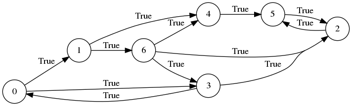
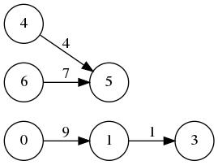
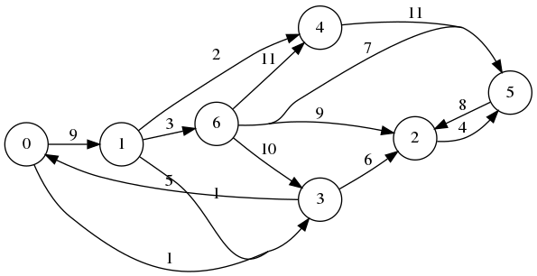
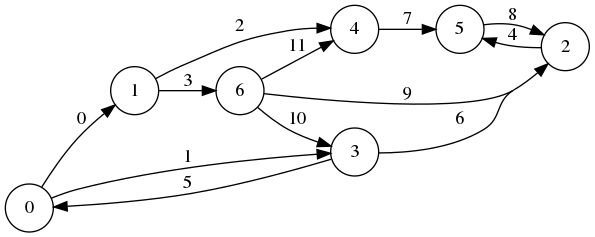
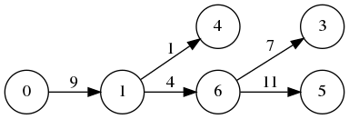
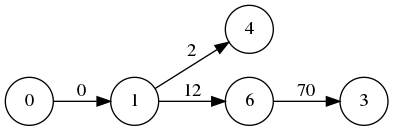

Package pygraphblas
pygraphblas is a python extension that bridges The GraphBLAS
API with the Python
programming language.
It uses the
CFFI library to wrap the low
level GraphBLAS API and provides high level Matrix and
Vector Python types that make GraphBLAS simple and easy.
See the Github README for details on how to install pygraphblas. Once installed, the library can be imported for use:
>>> from pygraphblas import *
The core idea of the GraphBLAS is the mathematical duality between a
graph and a Matrix.
As illustrated here, a graph can be
expressed as a Matrix and vice versa.
Matrix is the primary object of The GraphBLAS API.
There are many ways to contstruct them, but a simple approach is to
provide three lists of data, the first are are lists of the row and
column positions that define the begining and end of a graph edge, and
the third list is the weight for that edge:
>>> I = [0, 0, 1, 1, 2, 3, 3, 4, 5, 6, 6, 6]
>>> J = [1, 3, 4, 6, 5, 0, 2, 5, 2, 2, 3, 4]
>>> V = [True for _ in range(len(I))]
>>> M = Matrix.from_lists(I, J, V)
>>> print(M)
0 1 2 3 4 5 6
0| t t | 0
1| t t| 1
2| t | 2
3| t t | 3
4| t | 4
5| t | 5
6| t t t | 6
0 1 2 3 4 5 6
>>> from pygraphblas.gviz import *
>>> g = draw_graph(M, show_weight=False,
... filename='/docs/imgs/Matrix_from_lists2')
>>> g = draw_matrix(M, scale=40,
... filename='/docs/imgs/Matrix_from_lists_matrix')
GraphBLAS is a sparse Linear
Algebra API optimized
for processing graphs encoded as sparse matrices and vectors.
In
addition to common real/integer Matrix algebra
operations, GraphBLAS supports over a thousand different
Semiring algebra operations,
that can be used as basic building blocks to implement a wide variety
of graph algorithms. See
Applications
from Wikipedia for some specific examples.
The core operation of Linear Algebra is Matrix Multiplication. In this GraphBLAS duality, this is an operation along the edges of a graph from nodes to their adjacenct neighbors, taking one step in a Breadth First Search across the graph:
pygraphblas leverages the expertise in the field of sparse matrix programming by The GraphBLAS Forum and uses the SuiteSparse:GraphBLAS API implementation. SuiteSparse:GraphBLAS is brought to us by the work of Dr. Tim Davis, professor in the Department of Computer Science and Engineering at Texas A&M University. News and information can provide you with a lot more background information.
Expand source code
"""pygraphblas is a python extension that bridges [The GraphBLAS
API](http://graphblas.org) with the [Python](https://python.org)
programming language. It uses the
[CFFI](https://cffi.readthedocs.io/en/latest/) library to wrap the low
level GraphBLAS API and provides high level `pygraphblas.Matrix` and
`pygraphblas.Vector` Python types that make GraphBLAS simple and easy.
See the [Github README](https://github.com/Graphegon/pygraphblas) for
details on how to install pygraphblas. Once installed, the library can
be imported for use:
>>> from pygraphblas import *
The core idea of the GraphBLAS is the mathematical duality between a
graph and a `pygraphblas.Matrix`. As illustrated here, a graph can be
expressed as a `pygraphblas.Matrix` and vice versa.
`pygraphblas.Matrix` is the primary object of The GraphBLAS API.
There are many ways to contstruct them, but a simple approach is to
provide three lists of data, the first are are lists of the row and
column positions that define the begining and end of a graph edge, and
the third list is the weight for that edge:
>>> I = [0, 0, 1, 1, 2, 3, 3, 4, 5, 6, 6, 6]
>>> J = [1, 3, 4, 6, 5, 0, 2, 5, 2, 2, 3, 4]
>>> V = [True for _ in range(len(I))]
>>> M = Matrix.from_lists(I, J, V)
>>> print(M)
0 1 2 3 4 5 6
0| t t | 0
1| t t| 1
2| t | 2
3| t t | 3
4| t | 4
5| t | 5
6| t t t | 6
0 1 2 3 4 5 6
>>> from pygraphblas.gviz import *
>>> g = draw_graph(M, show_weight=False,
... filename='/docs/imgs/Matrix_from_lists2')

>>> g = draw_matrix(M, scale=40,
... filename='/docs/imgs/Matrix_from_lists_matrix')

GraphBLAS is a sparse [Linear
Algebra](https://en.wikipedia.org/wiki/Linear_algebra) API optimized
for processing graphs encoded as sparse matrices and vectors. In
addition to common real/integer `pygraphblas.Matrix` algebra
operations, GraphBLAS supports over a thousand different
[Semiring](https://en.wikipedia.org/wiki/Semiring) algebra operations,
that can be used as basic building blocks to implement a wide variety
of graph algorithms. See
[Applications](https://en.wikipedia.org/wiki/Semiring#Applications)
from Wikipedia for some specific examples.
The core operation of Linear Algebra is [Matrix
Multiplication](https://en.wikipedia.org/wiki/Matrix_multiplication).
In this GraphBLAS duality, this is an operation along the edges of a
graph from nodes to their adjacenct neighbors, taking one step in a
[Breadth First
Search](https://en.wikipedia.org/wiki/Breadth-first_search) across the
graph:
pygraphblas leverages the expertise in the field of sparse matrix
programming by [The GraphBLAS Forum](http://graphblas.org) and uses
the
[SuiteSparse:GraphBLAS](http://faculty.cse.tamu.edu/davis/GraphBLAS.html)
API implementation. SuiteSparse:GraphBLAS is brought to us by the work
of [Dr. Tim Davis](http://faculty.cse.tamu.edu/davis/welcome.html),
professor in the Department of Computer Science and Engineering at
Texas A&M University. [News and
information](http://faculty.cse.tamu.edu/davis/news.html) can provide
you with a lot more background information.
"""
from .base import (
lib,
ffi,
GxB_INDEX_MAX,
GxB_IMPLEMENTATION,
GxB_SPEC,
options_get,
options_set,
)
lib.LAGraph_init()
from .semiring import build_semirings
from .binaryop import build_binaryops, Accum, binary_op
from .unaryop import build_unaryops, unary_op
from .monoid import build_monoids
from .matrix import Matrix
from .vector import Vector
from .scalar import Scalar
from . import descriptor
__pdoc__ = {
"base": False,
"build": False,
"unaryop": False,
"binaryop": False,
"monoid": False,
"semiring": False,
"matrix": False,
"vector": False,
"scalar": False,
"types": False,
"run_doctests": False,
}
build_semirings(__pdoc__)
build_binaryops(__pdoc__)
build_unaryops(__pdoc__)
build_monoids(__pdoc__)
from .types import (
FP64,
FP32,
FC64,
FC32,
INT64,
INT32,
INT16,
INT8,
UINT64,
UINT32,
UINT16,
UINT8,
BOOL,
)
__all__ = [
"GxB_INDEX_MAX",
"GxB_IMPLEMENTATION",
"GxB_SPEC",
"options_set",
"options_get",
"Matrix",
"Vector",
"Scalar",
"FP64",
"FP32",
"FC64",
"FC32",
"INT64",
"INT32",
"INT16",
"INT8",
"UINT64",
"UINT32",
"UINT16",
"UINT8",
"BOOL",
"descriptor",
"Accum",
"binary_op",
"unary_op",
]
GxB_INDEX_MAX = GxB_INDEX_MAX
"""Maximum key size for SuiteSparse, defaults to `2**60`."""
GxB_IMPLEMENTATION = GxB_IMPLEMENTATION
""" Tuple containing GxB_IMPLEMENTATION (MAJOR, MINOR, SUB) """
GxB_SPEC = GxB_SPEC
""" Tuple containing GxB_SPEC (MAJOR, MINOR, SUB) """
def run_doctests(raise_on_error=False):
from . import matrix
from . import vector
from . import descriptor
from . import base
from . import gviz
import sys, doctest
this = sys.modules[__name__]
for mod in (this, matrix, vector, descriptor, gviz, base):
doctest.testmod(
mod, optionflags=doctest.ELLIPSIS, raise_on_error=raise_on_error
)Types
class Accum (binaryop)-
Expand source code
class Accum: __slots__ = ("binaryop", "token") def __init__(self, binaryop): self.binaryop = binaryop def __enter__(self): self.token = current_accum.set(self.binaryop) return self def __exit__(self, *errors): current_accum.reset(self.token) return FalseInstance variables
var binaryop-
Return an attribute of instance, which is of type owner.
var token-
Return an attribute of instance, which is of type owner.
class BOOL-
GraphBLAS Boolean Type.
Expand source code
class BOOL(Type): """GraphBLAS Boolean Type.""" gb_type = lib.GrB_BOOL C = "_Bool" one = True zero = False typecode = "B" numba_t = numba.boolean @classmethod def _default_addop(self): # pragma: nocover return self.LOR @classmethod def _default_multop(self): # pragma: nocover return self.LAND @classmethod def _default_semiring(self): # pragma: nocover return self.LOR_LAND @classmethod def format_value(cls, val, width=2, prec=None): f = "{:>%s}" % width if not isinstance(val, bool): return f.format(val) return f.format("t") if val is True else f.format("f") @classmethod def to_value(cls, cdata): return bool(cdata)Class variables
var ABS-
BinaryOp ABS_BOOL
var AINV-
BinaryOp AINV_BOOL
var ANY-
BinaryOp ANY_BOOL
var ANY_EQ-
Semiring ANY_EQ_BOOL
var ANY_FIRST-
Semiring ANY_FIRST_BOOL
var ANY_GE-
Semiring ANY_GE_BOOL
var ANY_GT-
Semiring ANY_GT_BOOL
var ANY_LAND-
Semiring ANY_LAND_BOOL
var ANY_LE-
Semiring ANY_LE_BOOL
var ANY_LOR-
Semiring ANY_LOR_BOOL
var ANY_LT-
Semiring ANY_LT_BOOL
var ANY_LXOR-
Semiring ANY_LXOR_BOOL
var ANY_MONOIDvar ANY_PAIR-
Semiring ANY_PAIR_BOOL
var ANY_SECOND-
Semiring ANY_SECOND_BOOL
var Cvar DIV-
BinaryOp DIV_BOOL
var EQ-
BinaryOp EQ_BOOL
var EQ_EQ-
Semiring EQ_EQ_BOOL
var EQ_FIRST-
Semiring EQ_FIRST_BOOL
var EQ_GE-
Semiring EQ_GE_BOOL
var EQ_GT-
Semiring EQ_GT_BOOL
var EQ_LAND-
Semiring EQ_LAND_BOOL
var EQ_LE-
Semiring EQ_LE_BOOL
var EQ_LOR-
Semiring EQ_LOR_BOOL
var EQ_LT-
Semiring EQ_LT_BOOL
var EQ_LXOR-
Semiring EQ_LXOR_BOOL
var EQ_MONOIDvar EQ_PAIR-
Semiring EQ_PAIR_BOOL
var EQ_SECOND-
Semiring EQ_SECOND_BOOL
var FIRST-
BinaryOp FIRST_BOOL
var GE-
BinaryOp GE_BOOL
var GT-
BinaryOp GT_BOOL
var IDENTITY-
BinaryOp IDENTITY_BOOL
var LAND-
BinaryOp LAND_BOOL
var LAND_EQ-
Semiring LAND_EQ_BOOL
var LAND_FIRST-
Semiring LAND_FIRST_BOOL
var LAND_GE-
Semiring LAND_GE_BOOL
var LAND_GT-
Semiring LAND_GT_BOOL
var LAND_LAND-
Semiring LAND_LAND_BOOL
var LAND_LE-
Semiring LAND_LE_BOOL
var LAND_LOR-
Semiring LAND_LOR_BOOL
var LAND_LT-
Semiring LAND_LT_BOOL
var LAND_LXOR-
Semiring LAND_LXOR_BOOL
var LAND_MONOIDvar LAND_PAIR-
Semiring LAND_PAIR_BOOL
var LAND_SECOND-
Semiring LAND_SECOND_BOOL
var LE-
BinaryOp LE_BOOL
var LNOT-
BinaryOp LNOT_BOOL
var LOR-
BinaryOp LOR_BOOL
var LOR_EQ-
Semiring LOR_EQ_BOOL
var LOR_FIRST-
Semiring LOR_FIRST_BOOL
var LOR_GE-
Semiring LOR_GE_BOOL
var LOR_GT-
Semiring LOR_GT_BOOL
var LOR_LAND-
Semiring LOR_LAND_BOOL
var LOR_LE-
Semiring LOR_LE_BOOL
var LOR_LOR-
Semiring LOR_LOR_BOOL
var LOR_LT-
Semiring LOR_LT_BOOL
var LOR_LXOR-
Semiring LOR_LXOR_BOOL
var LOR_MONOIDvar LOR_PAIR-
Semiring LOR_PAIR_BOOL
var LOR_SECOND-
Semiring LOR_SECOND_BOOL
var LT-
BinaryOp LT_BOOL
var LXNOR_MONOIDvar LXOR-
BinaryOp LXOR_BOOL
var LXOR_EQ-
Semiring LXOR_EQ_BOOL
var LXOR_FIRST-
Semiring LXOR_FIRST_BOOL
var LXOR_GE-
Semiring LXOR_GE_BOOL
var LXOR_GT-
Semiring LXOR_GT_BOOL
var LXOR_LAND-
Semiring LXOR_LAND_BOOL
var LXOR_LE-
Semiring LXOR_LE_BOOL
var LXOR_LOR-
Semiring LXOR_LOR_BOOL
var LXOR_LT-
Semiring LXOR_LT_BOOL
var LXOR_LXOR-
Semiring LXOR_LXOR_BOOL
var LXOR_MONOIDvar LXOR_PAIR-
Semiring LXOR_PAIR_BOOL
var LXOR_SECOND-
Semiring LXOR_SECOND_BOOL
var MAX-
BinaryOp MAX_BOOL
var MIN-
BinaryOp MIN_BOOL
var MINUS-
BinaryOp MINUS_BOOL
var MINV-
BinaryOp MINV_BOOL
var NE-
BinaryOp NE_BOOL
var ONE-
BinaryOp ONE_BOOL
var PAIR-
BinaryOp PAIR_BOOL
var PLUS-
BinaryOp PLUS_BOOL
var POW-
BinaryOp POW_BOOL
var RDIV-
BinaryOp RDIV_BOOL
var RMINUS-
BinaryOp RMINUS_BOOL
var SECOND-
BinaryOp SECOND_BOOL
var TIMES-
BinaryOp TIMES_BOOL
var ffivar gb_typevar numba_tvar onevar typecodevar zero
Static methods
def format_value(val, width=2, prec=None)-
Expand source code
@classmethod def format_value(cls, val, width=2, prec=None): f = "{:>%s}" % width if not isinstance(val, bool): return f.format(val) return f.format("t") if val is True else f.format("f") def to_value(cdata)-
Expand source code
@classmethod def to_value(cls, cdata): return bool(cdata)
class FC32-
GraphBLAS 32 bit float complex.
Expand source code
class FC32(Type): """GraphBLAS 32 bit float complex.""" _prefix = "GxB" one = complex(1.0) zero = complex(0.0) gb_type = lib.GxB_FC32 C = "float _Complex" numba_t = numba.complex64Class variables
var ABS-
BinaryOp ABS_FC32
var ACOS-
BinaryOp ACOS_FC32
var ACOSH-
BinaryOp ACOSH_FC32
var AINV-
BinaryOp AINV_FC32
var ANY_DIV-
Semiring ANY_DIV_FC32
var ANY_FIRST-
Semiring ANY_FIRST_FC32
var ANY_MINUS-
Semiring ANY_MINUS_FC32
var ANY_PAIR-
Semiring ANY_PAIR_FC32
var ANY_PLUS-
Semiring ANY_PLUS_FC32
var ANY_RDIV-
Semiring ANY_RDIV_FC32
var ANY_RMINUS-
Semiring ANY_RMINUS_FC32
var ANY_SECOND-
Semiring ANY_SECOND_FC32
var ANY_TIMES-
Semiring ANY_TIMES_FC32
var ASIN-
BinaryOp ASIN_FC32
var ASINH-
BinaryOp ASINH_FC32
var ATAN-
BinaryOp ATAN_FC32
var ATANH-
BinaryOp ATANH_FC32
var Cvar CARG-
BinaryOp CARG_FC32
var CEIL-
BinaryOp CEIL_FC32
var CIMAG-
BinaryOp CIMAG_FC32
var CONJ-
BinaryOp CONJ_FC32
var COS-
BinaryOp COS_FC32
var COSH-
BinaryOp COSH_FC32
var CREAL-
BinaryOp CREAL_FC32
var EXP-
BinaryOp EXP_FC32
var EXP2-
BinaryOp EXP2_FC32
var EXPM1-
BinaryOp EXPM1_FC32
var FLOOR-
BinaryOp FLOOR_FC32
var IDENTITY-
BinaryOp IDENTITY_FC32
var ISFINITE-
BinaryOp ISFINITE_FC32
var ISINF-
BinaryOp ISINF_FC32
var ISNAN-
BinaryOp ISNAN_FC32
var LOG-
BinaryOp LOG_FC32
var LOG1P-
BinaryOp LOG1P_FC32
var LOG2-
BinaryOp LOG2_FC32
var MINV-
BinaryOp MINV_FC32
var ONE-
BinaryOp ONE_FC32
var PLUS_DIV-
Semiring PLUS_DIV_FC32
var PLUS_FIRST-
Semiring PLUS_FIRST_FC32
var PLUS_MINUS-
Semiring PLUS_MINUS_FC32
var PLUS_PAIR-
Semiring PLUS_PAIR_FC32
var PLUS_PLUS-
Semiring PLUS_PLUS_FC32
var PLUS_RDIV-
Semiring PLUS_RDIV_FC32
var PLUS_RMINUS-
Semiring PLUS_RMINUS_FC32
var PLUS_SECOND-
Semiring PLUS_SECOND_FC32
var PLUS_TIMES-
Semiring PLUS_TIMES_FC32
var ROUND-
BinaryOp ROUND_FC32
var SIGNUM-
BinaryOp SIGNUM_FC32
var SIN-
BinaryOp SIN_FC32
var SINH-
BinaryOp SINH_FC32
var SQRT-
BinaryOp SQRT_FC32
var TAN-
BinaryOp TAN_FC32
var TANH-
BinaryOp TANH_FC32
var TIMES_DIV-
Semiring TIMES_DIV_FC32
var TIMES_FIRST-
Semiring TIMES_FIRST_FC32
var TIMES_MINUS-
Semiring TIMES_MINUS_FC32
var TIMES_PAIR-
Semiring TIMES_PAIR_FC32
var TIMES_PLUS-
Semiring TIMES_PLUS_FC32
var TIMES_RDIV-
Semiring TIMES_RDIV_FC32
var TIMES_RMINUS-
Semiring TIMES_RMINUS_FC32
var TIMES_SECOND-
Semiring TIMES_SECOND_FC32
var TIMES_TIMES-
Semiring TIMES_TIMES_FC32
var TRUNC-
BinaryOp TRUNC_FC32
var ffivar gb_typevar numba_tvar onevar zero
class FC64-
GraphBLAS 64 bit float complex.
Expand source code
class FC64(Type): """GraphBLAS 64 bit float complex.""" _prefix = "GxB" one = complex(1.0) zero = complex(0.0) gb_type = lib.GxB_FC64 C = "double _Complex" numba_t = numba.complex128Class variables
var ABS-
BinaryOp ABS_FC64
var ACOS-
BinaryOp ACOS_FC64
var ACOSH-
BinaryOp ACOSH_FC64
var AINV-
BinaryOp AINV_FC64
var ANY_DIV-
Semiring ANY_DIV_FC64
var ANY_FIRST-
Semiring ANY_FIRST_FC64
var ANY_MINUS-
Semiring ANY_MINUS_FC64
var ANY_PAIR-
Semiring ANY_PAIR_FC64
var ANY_PLUS-
Semiring ANY_PLUS_FC64
var ANY_RDIV-
Semiring ANY_RDIV_FC64
var ANY_RMINUS-
Semiring ANY_RMINUS_FC64
var ANY_SECOND-
Semiring ANY_SECOND_FC64
var ANY_TIMES-
Semiring ANY_TIMES_FC64
var ASIN-
BinaryOp ASIN_FC64
var ASINH-
BinaryOp ASINH_FC64
var ATAN-
BinaryOp ATAN_FC64
var ATANH-
BinaryOp ATANH_FC64
var Cvar CARG-
BinaryOp CARG_FC64
var CEIL-
BinaryOp CEIL_FC64
var CIMAG-
BinaryOp CIMAG_FC64
var CONJ-
BinaryOp CONJ_FC64
var COS-
BinaryOp COS_FC64
var COSH-
BinaryOp COSH_FC64
var CREAL-
BinaryOp CREAL_FC64
var EXP-
BinaryOp EXP_FC64
var EXP2-
BinaryOp EXP2_FC64
var EXPM1-
BinaryOp EXPM1_FC64
var FLOOR-
BinaryOp FLOOR_FC64
var IDENTITY-
BinaryOp IDENTITY_FC64
var ISFINITE-
BinaryOp ISFINITE_FC64
var ISINF-
BinaryOp ISINF_FC64
var ISNAN-
BinaryOp ISNAN_FC64
var LOG-
BinaryOp LOG_FC64
var LOG1P-
BinaryOp LOG1P_FC64
var LOG2-
BinaryOp LOG2_FC64
var MINV-
BinaryOp MINV_FC64
var ONE-
BinaryOp ONE_FC64
var PLUS_DIV-
Semiring PLUS_DIV_FC64
var PLUS_FIRST-
Semiring PLUS_FIRST_FC64
var PLUS_MINUS-
Semiring PLUS_MINUS_FC64
var PLUS_PAIR-
Semiring PLUS_PAIR_FC64
var PLUS_PLUS-
Semiring PLUS_PLUS_FC64
var PLUS_RDIV-
Semiring PLUS_RDIV_FC64
var PLUS_RMINUS-
Semiring PLUS_RMINUS_FC64
var PLUS_SECOND-
Semiring PLUS_SECOND_FC64
var PLUS_TIMES-
Semiring PLUS_TIMES_FC64
var ROUND-
BinaryOp ROUND_FC64
var SIGNUM-
BinaryOp SIGNUM_FC64
var SIN-
BinaryOp SIN_FC64
var SINH-
BinaryOp SINH_FC64
var SQRT-
BinaryOp SQRT_FC64
var TAN-
BinaryOp TAN_FC64
var TANH-
BinaryOp TANH_FC64
var TIMES_DIV-
Semiring TIMES_DIV_FC64
var TIMES_FIRST-
Semiring TIMES_FIRST_FC64
var TIMES_MINUS-
Semiring TIMES_MINUS_FC64
var TIMES_PAIR-
Semiring TIMES_PAIR_FC64
var TIMES_PLUS-
Semiring TIMES_PLUS_FC64
var TIMES_RDIV-
Semiring TIMES_RDIV_FC64
var TIMES_RMINUS-
Semiring TIMES_RMINUS_FC64
var TIMES_SECOND-
Semiring TIMES_SECOND_FC64
var TIMES_TIMES-
Semiring TIMES_TIMES_FC64
var TRUNC-
BinaryOp TRUNC_FC64
var ffivar gb_typevar numba_tvar onevar zero
class FP32-
GraphBLAS 32 bit float.
Expand source code
class FP32(Type): """GraphBLAS 32 bit float.""" one = 1.0 zero = 0.0 gb_type = lib.GrB_FP32 C = "float" typecode = "f" numba_t = numba.float32 @classmethod def format_value(cls, val, width=2, prec=2): return f"{val:>{width}.{prec}}"Class variables
var ABS-
BinaryOp ABS_FP32
var ACOS-
BinaryOp ACOS_FP32
var ACOSH-
BinaryOp ACOSH_FP32
var AINV-
BinaryOp AINV_FP32
var ANY-
BinaryOp ANY_FP32
var ANY_DIV-
Semiring ANY_DIV_FP32
var ANY_EQ-
Semiring ANY_EQ_FP32
var ANY_FIRST-
Semiring ANY_FIRST_FP32
var ANY_GE-
Semiring ANY_GE_FP32
var ANY_GT-
Semiring ANY_GT_FP32
var ANY_ISEQ-
Semiring ANY_ISEQ_FP32
var ANY_ISGE-
Semiring ANY_ISGE_FP32
var ANY_ISGT-
Semiring ANY_ISGT_FP32
var ANY_ISLE-
Semiring ANY_ISLE_FP32
var ANY_ISLT-
Semiring ANY_ISLT_FP32
var ANY_ISNE-
Semiring ANY_ISNE_FP32
var ANY_LAND-
Semiring ANY_LAND_FP32
var ANY_LE-
Semiring ANY_LE_FP32
var ANY_LOR-
Semiring ANY_LOR_FP32
var ANY_LT-
Semiring ANY_LT_FP32
var ANY_LXOR-
Semiring ANY_LXOR_FP32
var ANY_MAX-
Semiring ANY_MAX_FP32
var ANY_MIN-
Semiring ANY_MIN_FP32
var ANY_MINUS-
Semiring ANY_MINUS_FP32
var ANY_MONOIDvar ANY_NE-
Semiring ANY_NE_FP32
var ANY_PAIR-
Semiring ANY_PAIR_FP32
var ANY_PLUS-
Semiring ANY_PLUS_FP32
var ANY_RDIV-
Semiring ANY_RDIV_FP32
var ANY_RMINUS-
Semiring ANY_RMINUS_FP32
var ANY_SECOND-
Semiring ANY_SECOND_FP32
var ANY_TIMES-
Semiring ANY_TIMES_FP32
var ASIN-
BinaryOp ASIN_FP32
var ASINH-
BinaryOp ASINH_FP32
var ATAN-
BinaryOp ATAN_FP32
var ATAN2-
BinaryOp ATAN2_FP32
var ATANH-
BinaryOp ATANH_FP32
var Cvar CEIL-
BinaryOp CEIL_FP32
var CMPLX-
BinaryOp CMPLX_FP32
var COPYSIGN-
BinaryOp COPYSIGN_FP32
var COS-
BinaryOp COS_FP32
var COSH-
BinaryOp COSH_FP32
var DIV-
BinaryOp DIV_FP32
var EQ-
BinaryOp EQ_FP32
var EQ_EQ-
Semiring EQ_EQ_FP32
var EQ_GE-
Semiring EQ_GE_FP32
var EQ_GT-
Semiring EQ_GT_FP32
var EQ_LE-
Semiring EQ_LE_FP32
var EQ_LT-
Semiring EQ_LT_FP32
var EQ_NE-
Semiring EQ_NE_FP32
var ERF-
BinaryOp ERF_FP32
var ERFC-
BinaryOp ERFC_FP32
var EXP-
BinaryOp EXP_FP32
var EXP2-
BinaryOp EXP2_FP32
var EXPM1-
BinaryOp EXPM1_FP32
var FIRST-
BinaryOp FIRST_FP32
var FLOOR-
BinaryOp FLOOR_FP32
var FMOD-
BinaryOp FMOD_FP32
var FREXPE-
BinaryOp FREXPE_FP32
var FREXPX-
BinaryOp FREXPX_FP32
var GE-
BinaryOp GE_FP32
var GT-
BinaryOp GT_FP32
var HYPOT-
BinaryOp HYPOT_FP32
var IDENTITY-
BinaryOp IDENTITY_FP32
var ISFINITE-
BinaryOp ISFINITE_FP32
var ISINF-
BinaryOp ISINF_FP32
var ISNAN-
BinaryOp ISNAN_FP32
var LAND-
BinaryOp LAND_FP32
var LAND_EQ-
Semiring LAND_EQ_FP32
var LAND_GE-
Semiring LAND_GE_FP32
var LAND_GT-
Semiring LAND_GT_FP32
var LAND_LE-
Semiring LAND_LE_FP32
var LAND_LT-
Semiring LAND_LT_FP32
var LAND_NE-
Semiring LAND_NE_FP32
var LDEXP-
BinaryOp LDEXP_FP32
var LE-
BinaryOp LE_FP32
var LGAMMA-
BinaryOp LGAMMA_FP32
var LNOT-
BinaryOp LNOT_FP32
var LOG-
BinaryOp LOG_FP32
var LOG1P-
BinaryOp LOG1P_FP32
var LOG2-
BinaryOp LOG2_FP32
var LOR-
BinaryOp LOR_FP32
var LOR_EQ-
Semiring LOR_EQ_FP32
var LOR_GE-
Semiring LOR_GE_FP32
var LOR_GT-
Semiring LOR_GT_FP32
var LOR_LE-
Semiring LOR_LE_FP32
var LOR_LT-
Semiring LOR_LT_FP32
var LOR_NE-
Semiring LOR_NE_FP32
var LT-
BinaryOp LT_FP32
var LXOR-
BinaryOp LXOR_FP32
var LXOR_EQ-
Semiring LXOR_EQ_FP32
var LXOR_GE-
Semiring LXOR_GE_FP32
var LXOR_GT-
Semiring LXOR_GT_FP32
var LXOR_LE-
Semiring LXOR_LE_FP32
var LXOR_LT-
Semiring LXOR_LT_FP32
var LXOR_NE-
Semiring LXOR_NE_FP32
var MAX-
BinaryOp MAX_FP32
var MAX_DIV-
Semiring MAX_DIV_FP32
var MAX_FIRST-
Semiring MAX_FIRST_FP32
var MAX_ISEQ-
Semiring MAX_ISEQ_FP32
var MAX_ISGE-
Semiring MAX_ISGE_FP32
var MAX_ISGT-
Semiring MAX_ISGT_FP32
var MAX_ISLE-
Semiring MAX_ISLE_FP32
var MAX_ISLT-
Semiring MAX_ISLT_FP32
var MAX_ISNE-
Semiring MAX_ISNE_FP32
var MAX_LAND-
Semiring MAX_LAND_FP32
var MAX_LOR-
Semiring MAX_LOR_FP32
var MAX_LXOR-
Semiring MAX_LXOR_FP32
var MAX_MAX-
Semiring MAX_MAX_FP32
var MAX_MIN-
Semiring MAX_MIN_FP32
var MAX_MINUS-
Semiring MAX_MINUS_FP32
var MAX_MONOIDvar MAX_PAIR-
Semiring MAX_PAIR_FP32
var MAX_PLUS-
Semiring MAX_PLUS_FP32
var MAX_RDIV-
Semiring MAX_RDIV_FP32
var MAX_RMINUS-
Semiring MAX_RMINUS_FP32
var MAX_SECOND-
Semiring MAX_SECOND_FP32
var MAX_TIMES-
Semiring MAX_TIMES_FP32
var MIN-
BinaryOp MIN_FP32
var MINUS-
BinaryOp MINUS_FP32
var MINV-
BinaryOp MINV_FP32
var MIN_DIV-
Semiring MIN_DIV_FP32
var MIN_FIRST-
Semiring MIN_FIRST_FP32
var MIN_ISEQ-
Semiring MIN_ISEQ_FP32
var MIN_ISGE-
Semiring MIN_ISGE_FP32
var MIN_ISGT-
Semiring MIN_ISGT_FP32
var MIN_ISLE-
Semiring MIN_ISLE_FP32
var MIN_ISLT-
Semiring MIN_ISLT_FP32
var MIN_ISNE-
Semiring MIN_ISNE_FP32
var MIN_LAND-
Semiring MIN_LAND_FP32
var MIN_LOR-
Semiring MIN_LOR_FP32
var MIN_LXOR-
Semiring MIN_LXOR_FP32
var MIN_MAX-
Semiring MIN_MAX_FP32
var MIN_MIN-
Semiring MIN_MIN_FP32
var MIN_MINUS-
Semiring MIN_MINUS_FP32
var MIN_MONOIDvar MIN_PAIR-
Semiring MIN_PAIR_FP32
var MIN_PLUS-
Semiring MIN_PLUS_FP32
var MIN_RDIV-
Semiring MIN_RDIV_FP32
var MIN_RMINUS-
Semiring MIN_RMINUS_FP32
var MIN_SECOND-
Semiring MIN_SECOND_FP32
var MIN_TIMES-
Semiring MIN_TIMES_FP32
var NE-
BinaryOp NE_FP32
var ONE-
BinaryOp ONE_FP32
var PAIR-
BinaryOp PAIR_FP32
var PLUS-
BinaryOp PLUS_FP32
var PLUS_DIV-
Semiring PLUS_DIV_FP32
var PLUS_FIRST-
Semiring PLUS_FIRST_FP32
var PLUS_ISEQ-
Semiring PLUS_ISEQ_FP32
var PLUS_ISGE-
Semiring PLUS_ISGE_FP32
var PLUS_ISGT-
Semiring PLUS_ISGT_FP32
var PLUS_ISLE-
Semiring PLUS_ISLE_FP32
var PLUS_ISLT-
Semiring PLUS_ISLT_FP32
var PLUS_ISNE-
Semiring PLUS_ISNE_FP32
var PLUS_LAND-
Semiring PLUS_LAND_FP32
var PLUS_LOR-
Semiring PLUS_LOR_FP32
var PLUS_LXOR-
Semiring PLUS_LXOR_FP32
var PLUS_MAX-
Semiring PLUS_MAX_FP32
var PLUS_MIN-
Semiring PLUS_MIN_FP32
var PLUS_MINUS-
Semiring PLUS_MINUS_FP32
var PLUS_MONOIDvar PLUS_PAIR-
Semiring PLUS_PAIR_FP32
var PLUS_PLUS-
Semiring PLUS_PLUS_FP32
var PLUS_RDIV-
Semiring PLUS_RDIV_FP32
var PLUS_RMINUS-
Semiring PLUS_RMINUS_FP32
var PLUS_SECOND-
Semiring PLUS_SECOND_FP32
var PLUS_TIMES-
Semiring PLUS_TIMES_FP32
var POW-
BinaryOp POW_FP32
var RDIV-
BinaryOp RDIV_FP32
var REMAINDER-
BinaryOp REMAINDER_FP32
var RMINUS-
BinaryOp RMINUS_FP32
var ROUND-
BinaryOp ROUND_FP32
var SECOND-
BinaryOp SECOND_FP32
var SIGNUM-
BinaryOp SIGNUM_FP32
var SIN-
BinaryOp SIN_FP32
var SINH-
BinaryOp SINH_FP32
var SQRT-
BinaryOp SQRT_FP32
var TAN-
BinaryOp TAN_FP32
var TANH-
BinaryOp TANH_FP32
var TGAMMA-
BinaryOp TGAMMA_FP32
var TIMES-
BinaryOp TIMES_FP32
var TIMES_DIV-
Semiring TIMES_DIV_FP32
var TIMES_FIRST-
Semiring TIMES_FIRST_FP32
var TIMES_ISEQ-
Semiring TIMES_ISEQ_FP32
var TIMES_ISGE-
Semiring TIMES_ISGE_FP32
var TIMES_ISGT-
Semiring TIMES_ISGT_FP32
var TIMES_ISLE-
Semiring TIMES_ISLE_FP32
var TIMES_ISLT-
Semiring TIMES_ISLT_FP32
var TIMES_ISNE-
Semiring TIMES_ISNE_FP32
var TIMES_LAND-
Semiring TIMES_LAND_FP32
var TIMES_LOR-
Semiring TIMES_LOR_FP32
var TIMES_LXOR-
Semiring TIMES_LXOR_FP32
var TIMES_MAX-
Semiring TIMES_MAX_FP32
var TIMES_MIN-
Semiring TIMES_MIN_FP32
var TIMES_MINUS-
Semiring TIMES_MINUS_FP32
var TIMES_MONOIDvar TIMES_PAIR-
Semiring TIMES_PAIR_FP32
var TIMES_PLUS-
Semiring TIMES_PLUS_FP32
var TIMES_RDIV-
Semiring TIMES_RDIV_FP32
var TIMES_RMINUS-
Semiring TIMES_RMINUS_FP32
var TIMES_SECOND-
Semiring TIMES_SECOND_FP32
var TIMES_TIMES-
Semiring TIMES_TIMES_FP32
var TRUNC-
BinaryOp TRUNC_FP32
var ffivar gb_typevar numba_tvar onevar typecodevar zero
Static methods
def format_value(val, width=2, prec=2)-
Expand source code
@classmethod def format_value(cls, val, width=2, prec=2): return f"{val:>{width}.{prec}}"
class FP64-
GraphBLAS 64 bit float.
Expand source code
class FP64(Type): """GraphBLAS 64 bit float.""" one = 1.0 zero = 0.0 gb_type = lib.GrB_FP64 C = "double" typecode = "d" numba_t = numba.float64 @classmethod def format_value(cls, val, width=2, prec=2): return f"{val:>{width}.{prec}}"Class variables
var ABS-
BinaryOp ABS_FP64
var ACOS-
BinaryOp ACOS_FP64
var ACOSH-
BinaryOp ACOSH_FP64
var AINV-
BinaryOp AINV_FP64
var ANY-
BinaryOp ANY_FP64
var ANY_DIV-
Semiring ANY_DIV_FP64
var ANY_EQ-
Semiring ANY_EQ_FP64
var ANY_FIRST-
Semiring ANY_FIRST_FP64
var ANY_GE-
Semiring ANY_GE_FP64
var ANY_GT-
Semiring ANY_GT_FP64
var ANY_ISEQ-
Semiring ANY_ISEQ_FP64
var ANY_ISGE-
Semiring ANY_ISGE_FP64
var ANY_ISGT-
Semiring ANY_ISGT_FP64
var ANY_ISLE-
Semiring ANY_ISLE_FP64
var ANY_ISLT-
Semiring ANY_ISLT_FP64
var ANY_ISNE-
Semiring ANY_ISNE_FP64
var ANY_LAND-
Semiring ANY_LAND_FP64
var ANY_LE-
Semiring ANY_LE_FP64
var ANY_LOR-
Semiring ANY_LOR_FP64
var ANY_LT-
Semiring ANY_LT_FP64
var ANY_LXOR-
Semiring ANY_LXOR_FP64
var ANY_MAX-
Semiring ANY_MAX_FP64
var ANY_MIN-
Semiring ANY_MIN_FP64
var ANY_MINUS-
Semiring ANY_MINUS_FP64
var ANY_MONOIDvar ANY_NE-
Semiring ANY_NE_FP64
var ANY_PAIR-
Semiring ANY_PAIR_FP64
var ANY_PLUS-
Semiring ANY_PLUS_FP64
var ANY_RDIV-
Semiring ANY_RDIV_FP64
var ANY_RMINUS-
Semiring ANY_RMINUS_FP64
var ANY_SECOND-
Semiring ANY_SECOND_FP64
var ANY_TIMES-
Semiring ANY_TIMES_FP64
var ASIN-
BinaryOp ASIN_FP64
var ASINH-
BinaryOp ASINH_FP64
var ATAN-
BinaryOp ATAN_FP64
var ATAN2-
BinaryOp ATAN2_FP64
var ATANH-
BinaryOp ATANH_FP64
var Cvar CEIL-
BinaryOp CEIL_FP64
var CMPLX-
BinaryOp CMPLX_FP64
var COPYSIGN-
BinaryOp COPYSIGN_FP64
var COS-
BinaryOp COS_FP64
var COSH-
BinaryOp COSH_FP64
var DIV-
BinaryOp DIV_FP64
var EQ-
BinaryOp EQ_FP64
var EQ_EQ-
Semiring EQ_EQ_FP64
var EQ_GE-
Semiring EQ_GE_FP64
var EQ_GT-
Semiring EQ_GT_FP64
var EQ_LE-
Semiring EQ_LE_FP64
var EQ_LT-
Semiring EQ_LT_FP64
var EQ_NE-
Semiring EQ_NE_FP64
var ERF-
BinaryOp ERF_FP64
var ERFC-
BinaryOp ERFC_FP64
var EXP-
BinaryOp EXP_FP64
var EXP2-
BinaryOp EXP2_FP64
var EXPM1-
BinaryOp EXPM1_FP64
var FIRST-
BinaryOp FIRST_FP64
var FLOOR-
BinaryOp FLOOR_FP64
var FMOD-
BinaryOp FMOD_FP64
var FREXPE-
BinaryOp FREXPE_FP64
var FREXPX-
BinaryOp FREXPX_FP64
var GE-
BinaryOp GE_FP64
var GT-
BinaryOp GT_FP64
var HYPOT-
BinaryOp HYPOT_FP64
var IDENTITY-
BinaryOp IDENTITY_FP64
var ISFINITE-
BinaryOp ISFINITE_FP64
var ISINF-
BinaryOp ISINF_FP64
var ISNAN-
BinaryOp ISNAN_FP64
var LAND-
BinaryOp LAND_FP64
var LAND_EQ-
Semiring LAND_EQ_FP64
var LAND_GE-
Semiring LAND_GE_FP64
var LAND_GT-
Semiring LAND_GT_FP64
var LAND_LE-
Semiring LAND_LE_FP64
var LAND_LT-
Semiring LAND_LT_FP64
var LAND_NE-
Semiring LAND_NE_FP64
var LDEXP-
BinaryOp LDEXP_FP64
var LE-
BinaryOp LE_FP64
var LGAMMA-
BinaryOp LGAMMA_FP64
var LNOT-
BinaryOp LNOT_FP64
var LOG-
BinaryOp LOG_FP64
var LOG1P-
BinaryOp LOG1P_FP64
var LOG2-
BinaryOp LOG2_FP64
var LOR-
BinaryOp LOR_FP64
var LOR_EQ-
Semiring LOR_EQ_FP64
var LOR_GE-
Semiring LOR_GE_FP64
var LOR_GT-
Semiring LOR_GT_FP64
var LOR_LE-
Semiring LOR_LE_FP64
var LOR_LT-
Semiring LOR_LT_FP64
var LOR_NE-
Semiring LOR_NE_FP64
var LT-
BinaryOp LT_FP64
var LXOR-
BinaryOp LXOR_FP64
var LXOR_EQ-
Semiring LXOR_EQ_FP64
var LXOR_GE-
Semiring LXOR_GE_FP64
var LXOR_GT-
Semiring LXOR_GT_FP64
var LXOR_LE-
Semiring LXOR_LE_FP64
var LXOR_LT-
Semiring LXOR_LT_FP64
var LXOR_NE-
Semiring LXOR_NE_FP64
var MAX-
BinaryOp MAX_FP64
var MAX_DIV-
Semiring MAX_DIV_FP64
var MAX_FIRST-
Semiring MAX_FIRST_FP64
var MAX_ISEQ-
Semiring MAX_ISEQ_FP64
var MAX_ISGE-
Semiring MAX_ISGE_FP64
var MAX_ISGT-
Semiring MAX_ISGT_FP64
var MAX_ISLE-
Semiring MAX_ISLE_FP64
var MAX_ISLT-
Semiring MAX_ISLT_FP64
var MAX_ISNE-
Semiring MAX_ISNE_FP64
var MAX_LAND-
Semiring MAX_LAND_FP64
var MAX_LOR-
Semiring MAX_LOR_FP64
var MAX_LXOR-
Semiring MAX_LXOR_FP64
var MAX_MAX-
Semiring MAX_MAX_FP64
var MAX_MIN-
Semiring MAX_MIN_FP64
var MAX_MINUS-
Semiring MAX_MINUS_FP64
var MAX_MONOIDvar MAX_PAIR-
Semiring MAX_PAIR_FP64
var MAX_PLUS-
Semiring MAX_PLUS_FP64
var MAX_RDIV-
Semiring MAX_RDIV_FP64
var MAX_RMINUS-
Semiring MAX_RMINUS_FP64
var MAX_SECOND-
Semiring MAX_SECOND_FP64
var MAX_TIMES-
Semiring MAX_TIMES_FP64
var MIN-
BinaryOp MIN_FP64
var MINUS-
BinaryOp MINUS_FP64
var MINV-
BinaryOp MINV_FP64
var MIN_DIV-
Semiring MIN_DIV_FP64
var MIN_FIRST-
Semiring MIN_FIRST_FP64
var MIN_ISEQ-
Semiring MIN_ISEQ_FP64
var MIN_ISGE-
Semiring MIN_ISGE_FP64
var MIN_ISGT-
Semiring MIN_ISGT_FP64
var MIN_ISLE-
Semiring MIN_ISLE_FP64
var MIN_ISLT-
Semiring MIN_ISLT_FP64
var MIN_ISNE-
Semiring MIN_ISNE_FP64
var MIN_LAND-
Semiring MIN_LAND_FP64
var MIN_LOR-
Semiring MIN_LOR_FP64
var MIN_LXOR-
Semiring MIN_LXOR_FP64
var MIN_MAX-
Semiring MIN_MAX_FP64
var MIN_MIN-
Semiring MIN_MIN_FP64
var MIN_MINUS-
Semiring MIN_MINUS_FP64
var MIN_MONOIDvar MIN_PAIR-
Semiring MIN_PAIR_FP64
var MIN_PLUS-
Semiring MIN_PLUS_FP64
var MIN_RDIV-
Semiring MIN_RDIV_FP64
var MIN_RMINUS-
Semiring MIN_RMINUS_FP64
var MIN_SECOND-
Semiring MIN_SECOND_FP64
var MIN_TIMES-
Semiring MIN_TIMES_FP64
var NE-
BinaryOp NE_FP64
var ONE-
BinaryOp ONE_FP64
var PAIR-
BinaryOp PAIR_FP64
var PLUS-
BinaryOp PLUS_FP64
var PLUS_DIV-
Semiring PLUS_DIV_FP64
var PLUS_FIRST-
Semiring PLUS_FIRST_FP64
var PLUS_ISEQ-
Semiring PLUS_ISEQ_FP64
var PLUS_ISGE-
Semiring PLUS_ISGE_FP64
var PLUS_ISGT-
Semiring PLUS_ISGT_FP64
var PLUS_ISLE-
Semiring PLUS_ISLE_FP64
var PLUS_ISLT-
Semiring PLUS_ISLT_FP64
var PLUS_ISNE-
Semiring PLUS_ISNE_FP64
var PLUS_LAND-
Semiring PLUS_LAND_FP64
var PLUS_LOR-
Semiring PLUS_LOR_FP64
var PLUS_LXOR-
Semiring PLUS_LXOR_FP64
var PLUS_MAX-
Semiring PLUS_MAX_FP64
var PLUS_MIN-
Semiring PLUS_MIN_FP64
var PLUS_MINUS-
Semiring PLUS_MINUS_FP64
var PLUS_MONOIDvar PLUS_PAIR-
Semiring PLUS_PAIR_FP64
var PLUS_PLUS-
Semiring PLUS_PLUS_FP64
var PLUS_RDIV-
Semiring PLUS_RDIV_FP64
var PLUS_RMINUS-
Semiring PLUS_RMINUS_FP64
var PLUS_SECOND-
Semiring PLUS_SECOND_FP64
var PLUS_TIMES-
Semiring PLUS_TIMES_FP64
var POW-
BinaryOp POW_FP64
var RDIV-
BinaryOp RDIV_FP64
var REMAINDER-
BinaryOp REMAINDER_FP64
var RMINUS-
BinaryOp RMINUS_FP64
var ROUND-
BinaryOp ROUND_FP64
var SECOND-
BinaryOp SECOND_FP64
var SIGNUM-
BinaryOp SIGNUM_FP64
var SIN-
BinaryOp SIN_FP64
var SINH-
BinaryOp SINH_FP64
var SQRT-
BinaryOp SQRT_FP64
var TAN-
BinaryOp TAN_FP64
var TANH-
BinaryOp TANH_FP64
var TGAMMA-
BinaryOp TGAMMA_FP64
var TIMES-
BinaryOp TIMES_FP64
var TIMES_DIV-
Semiring TIMES_DIV_FP64
var TIMES_FIRST-
Semiring TIMES_FIRST_FP64
var TIMES_ISEQ-
Semiring TIMES_ISEQ_FP64
var TIMES_ISGE-
Semiring TIMES_ISGE_FP64
var TIMES_ISGT-
Semiring TIMES_ISGT_FP64
var TIMES_ISLE-
Semiring TIMES_ISLE_FP64
var TIMES_ISLT-
Semiring TIMES_ISLT_FP64
var TIMES_ISNE-
Semiring TIMES_ISNE_FP64
var TIMES_LAND-
Semiring TIMES_LAND_FP64
var TIMES_LOR-
Semiring TIMES_LOR_FP64
var TIMES_LXOR-
Semiring TIMES_LXOR_FP64
var TIMES_MAX-
Semiring TIMES_MAX_FP64
var TIMES_MIN-
Semiring TIMES_MIN_FP64
var TIMES_MINUS-
Semiring TIMES_MINUS_FP64
var TIMES_MONOIDvar TIMES_PAIR-
Semiring TIMES_PAIR_FP64
var TIMES_PLUS-
Semiring TIMES_PLUS_FP64
var TIMES_RDIV-
Semiring TIMES_RDIV_FP64
var TIMES_RMINUS-
Semiring TIMES_RMINUS_FP64
var TIMES_SECOND-
Semiring TIMES_SECOND_FP64
var TIMES_TIMES-
Semiring TIMES_TIMES_FP64
var TRUNC-
BinaryOp TRUNC_FP64
var ffivar gb_typevar numba_tvar onevar typecodevar zero
Static methods
def format_value(val, width=2, prec=2)-
Expand source code
@classmethod def format_value(cls, val, width=2, prec=2): return f"{val:>{width}.{prec}}"
class INT16-
GraphBLAS 16 bit signed integer.
Expand source code
class INT16(Type): """GraphBLAS 16 bit signed integer.""" gb_type = lib.GrB_INT16 C = "int16_t" typecode = "i" numba_t = numba.int16Class variables
var ABS-
BinaryOp ABS_INT16
var AINV-
BinaryOp AINV_INT16
var ANY-
BinaryOp ANY_INT16
var ANY_DIV-
Semiring ANY_DIV_INT16
var ANY_EQ-
Semiring ANY_EQ_INT16
var ANY_FIRST-
Semiring ANY_FIRST_INT16
var ANY_GE-
Semiring ANY_GE_INT16
var ANY_GT-
Semiring ANY_GT_INT16
var ANY_ISEQ-
Semiring ANY_ISEQ_INT16
var ANY_ISGE-
Semiring ANY_ISGE_INT16
var ANY_ISGT-
Semiring ANY_ISGT_INT16
var ANY_ISLE-
Semiring ANY_ISLE_INT16
var ANY_ISLT-
Semiring ANY_ISLT_INT16
var ANY_ISNE-
Semiring ANY_ISNE_INT16
var ANY_LAND-
Semiring ANY_LAND_INT16
var ANY_LE-
Semiring ANY_LE_INT16
var ANY_LOR-
Semiring ANY_LOR_INT16
var ANY_LT-
Semiring ANY_LT_INT16
var ANY_LXOR-
Semiring ANY_LXOR_INT16
var ANY_MAX-
Semiring ANY_MAX_INT16
var ANY_MIN-
Semiring ANY_MIN_INT16
var ANY_MINUS-
Semiring ANY_MINUS_INT16
var ANY_MONOIDvar ANY_NE-
Semiring ANY_NE_INT16
var ANY_PAIR-
Semiring ANY_PAIR_INT16
var ANY_PLUS-
Semiring ANY_PLUS_INT16
var ANY_RDIV-
Semiring ANY_RDIV_INT16
var ANY_RMINUS-
Semiring ANY_RMINUS_INT16
var ANY_SECOND-
Semiring ANY_SECOND_INT16
var ANY_TIMES-
Semiring ANY_TIMES_INT16
var BAND-
BinaryOp BAND_INT16
var BCLR-
BinaryOp BCLR_INT16
var BGET-
BinaryOp BGET_INT16
var BOR-
BinaryOp BOR_INT16
var BSET-
BinaryOp BSET_INT16
var BSHIFT-
BinaryOp BSHIFT_INT16
var BXNOR-
BinaryOp BXNOR_INT16
var BXOR-
BinaryOp BXOR_INT16
var Cvar DIV-
BinaryOp DIV_INT16
var EQ-
BinaryOp EQ_INT16
var EQ_EQ-
Semiring EQ_EQ_INT16
var EQ_GE-
Semiring EQ_GE_INT16
var EQ_GT-
Semiring EQ_GT_INT16
var EQ_LE-
Semiring EQ_LE_INT16
var EQ_LT-
Semiring EQ_LT_INT16
var EQ_NE-
Semiring EQ_NE_INT16
var FIRST-
BinaryOp FIRST_INT16
var GE-
BinaryOp GE_INT16
var GT-
BinaryOp GT_INT16
var IDENTITY-
BinaryOp IDENTITY_INT16
var LAND-
BinaryOp LAND_INT16
var LAND_EQ-
Semiring LAND_EQ_INT16
var LAND_GE-
Semiring LAND_GE_INT16
var LAND_GT-
Semiring LAND_GT_INT16
var LAND_LE-
Semiring LAND_LE_INT16
var LAND_LT-
Semiring LAND_LT_INT16
var LAND_NE-
Semiring LAND_NE_INT16
var LE-
BinaryOp LE_INT16
var LNOT-
BinaryOp LNOT_INT16
var LOR-
BinaryOp LOR_INT16
var LOR_EQ-
Semiring LOR_EQ_INT16
var LOR_GE-
Semiring LOR_GE_INT16
var LOR_GT-
Semiring LOR_GT_INT16
var LOR_LE-
Semiring LOR_LE_INT16
var LOR_LT-
Semiring LOR_LT_INT16
var LOR_NE-
Semiring LOR_NE_INT16
var LT-
BinaryOp LT_INT16
var LXOR-
BinaryOp LXOR_INT16
var LXOR_EQ-
Semiring LXOR_EQ_INT16
var LXOR_GE-
Semiring LXOR_GE_INT16
var LXOR_GT-
Semiring LXOR_GT_INT16
var LXOR_LE-
Semiring LXOR_LE_INT16
var LXOR_LT-
Semiring LXOR_LT_INT16
var LXOR_NE-
Semiring LXOR_NE_INT16
var MAX-
BinaryOp MAX_INT16
var MAX_DIV-
Semiring MAX_DIV_INT16
var MAX_FIRST-
Semiring MAX_FIRST_INT16
var MAX_ISEQ-
Semiring MAX_ISEQ_INT16
var MAX_ISGE-
Semiring MAX_ISGE_INT16
var MAX_ISGT-
Semiring MAX_ISGT_INT16
var MAX_ISLE-
Semiring MAX_ISLE_INT16
var MAX_ISLT-
Semiring MAX_ISLT_INT16
var MAX_ISNE-
Semiring MAX_ISNE_INT16
var MAX_LAND-
Semiring MAX_LAND_INT16
var MAX_LOR-
Semiring MAX_LOR_INT16
var MAX_LXOR-
Semiring MAX_LXOR_INT16
var MAX_MAX-
Semiring MAX_MAX_INT16
var MAX_MIN-
Semiring MAX_MIN_INT16
var MAX_MINUS-
Semiring MAX_MINUS_INT16
var MAX_MONOIDvar MAX_PAIR-
Semiring MAX_PAIR_INT16
var MAX_PLUS-
Semiring MAX_PLUS_INT16
var MAX_RDIV-
Semiring MAX_RDIV_INT16
var MAX_RMINUS-
Semiring MAX_RMINUS_INT16
var MAX_SECOND-
Semiring MAX_SECOND_INT16
var MAX_TIMES-
Semiring MAX_TIMES_INT16
var MIN-
BinaryOp MIN_INT16
var MINUS-
BinaryOp MINUS_INT16
var MINV-
BinaryOp MINV_INT16
var MIN_DIV-
Semiring MIN_DIV_INT16
var MIN_FIRST-
Semiring MIN_FIRST_INT16
var MIN_ISEQ-
Semiring MIN_ISEQ_INT16
var MIN_ISGE-
Semiring MIN_ISGE_INT16
var MIN_ISGT-
Semiring MIN_ISGT_INT16
var MIN_ISLE-
Semiring MIN_ISLE_INT16
var MIN_ISLT-
Semiring MIN_ISLT_INT16
var MIN_ISNE-
Semiring MIN_ISNE_INT16
var MIN_LAND-
Semiring MIN_LAND_INT16
var MIN_LOR-
Semiring MIN_LOR_INT16
var MIN_LXOR-
Semiring MIN_LXOR_INT16
var MIN_MAX-
Semiring MIN_MAX_INT16
var MIN_MIN-
Semiring MIN_MIN_INT16
var MIN_MINUS-
Semiring MIN_MINUS_INT16
var MIN_MONOIDvar MIN_PAIR-
Semiring MIN_PAIR_INT16
var MIN_PLUS-
Semiring MIN_PLUS_INT16
var MIN_RDIV-
Semiring MIN_RDIV_INT16
var MIN_RMINUS-
Semiring MIN_RMINUS_INT16
var MIN_SECOND-
Semiring MIN_SECOND_INT16
var MIN_TIMES-
Semiring MIN_TIMES_INT16
var NE-
BinaryOp NE_INT16
var ONE-
BinaryOp ONE_INT16
var PAIR-
BinaryOp PAIR_INT16
var PLUS-
BinaryOp PLUS_INT16
var PLUS_DIV-
Semiring PLUS_DIV_INT16
var PLUS_FIRST-
Semiring PLUS_FIRST_INT16
var PLUS_ISEQ-
Semiring PLUS_ISEQ_INT16
var PLUS_ISGE-
Semiring PLUS_ISGE_INT16
var PLUS_ISGT-
Semiring PLUS_ISGT_INT16
var PLUS_ISLE-
Semiring PLUS_ISLE_INT16
var PLUS_ISLT-
Semiring PLUS_ISLT_INT16
var PLUS_ISNE-
Semiring PLUS_ISNE_INT16
var PLUS_LAND-
Semiring PLUS_LAND_INT16
var PLUS_LOR-
Semiring PLUS_LOR_INT16
var PLUS_LXOR-
Semiring PLUS_LXOR_INT16
var PLUS_MAX-
Semiring PLUS_MAX_INT16
var PLUS_MIN-
Semiring PLUS_MIN_INT16
var PLUS_MINUS-
Semiring PLUS_MINUS_INT16
var PLUS_MONOIDvar PLUS_PAIR-
Semiring PLUS_PAIR_INT16
var PLUS_PLUS-
Semiring PLUS_PLUS_INT16
var PLUS_RDIV-
Semiring PLUS_RDIV_INT16
var PLUS_RMINUS-
Semiring PLUS_RMINUS_INT16
var PLUS_SECOND-
Semiring PLUS_SECOND_INT16
var PLUS_TIMES-
Semiring PLUS_TIMES_INT16
var POW-
BinaryOp POW_INT16
var RDIV-
BinaryOp RDIV_INT16
var RMINUS-
BinaryOp RMINUS_INT16
var SECOND-
BinaryOp SECOND_INT16
var TIMES-
BinaryOp TIMES_INT16
var TIMES_DIV-
Semiring TIMES_DIV_INT16
var TIMES_FIRST-
Semiring TIMES_FIRST_INT16
var TIMES_ISEQ-
Semiring TIMES_ISEQ_INT16
var TIMES_ISGE-
Semiring TIMES_ISGE_INT16
var TIMES_ISGT-
Semiring TIMES_ISGT_INT16
var TIMES_ISLE-
Semiring TIMES_ISLE_INT16
var TIMES_ISLT-
Semiring TIMES_ISLT_INT16
var TIMES_ISNE-
Semiring TIMES_ISNE_INT16
var TIMES_LAND-
Semiring TIMES_LAND_INT16
var TIMES_LOR-
Semiring TIMES_LOR_INT16
var TIMES_LXOR-
Semiring TIMES_LXOR_INT16
var TIMES_MAX-
Semiring TIMES_MAX_INT16
var TIMES_MIN-
Semiring TIMES_MIN_INT16
var TIMES_MINUS-
Semiring TIMES_MINUS_INT16
var TIMES_MONOIDvar TIMES_PAIR-
Semiring TIMES_PAIR_INT16
var TIMES_PLUS-
Semiring TIMES_PLUS_INT16
var TIMES_RDIV-
Semiring TIMES_RDIV_INT16
var TIMES_RMINUS-
Semiring TIMES_RMINUS_INT16
var TIMES_SECOND-
Semiring TIMES_SECOND_INT16
var TIMES_TIMES-
Semiring TIMES_TIMES_INT16
var ffivar gb_typevar numba_tvar onevar typecodevar zero
class INT32-
GraphBLAS 32 bit signed integer.
Expand source code
class INT32(Type): """GraphBLAS 32 bit signed integer.""" gb_type = lib.GrB_INT32 C = "int32_t" typecode = "l" numba_t = numba.int32Class variables
var ABS-
BinaryOp ABS_INT32
var AINV-
BinaryOp AINV_INT32
var ANY-
BinaryOp ANY_INT32
var ANY_DIV-
Semiring ANY_DIV_INT32
var ANY_EQ-
Semiring ANY_EQ_INT32
var ANY_FIRST-
Semiring ANY_FIRST_INT32
var ANY_FIRSTI-
Semiring ANY_FIRSTI_INT32
var ANY_FIRSTI1-
Semiring ANY_FIRSTI1_INT32
var ANY_FIRSTJ-
Semiring ANY_FIRSTJ_INT32
var ANY_FIRSTJ1-
Semiring ANY_FIRSTJ1_INT32
var ANY_GE-
Semiring ANY_GE_INT32
var ANY_GT-
Semiring ANY_GT_INT32
var ANY_ISEQ-
Semiring ANY_ISEQ_INT32
var ANY_ISGE-
Semiring ANY_ISGE_INT32
var ANY_ISGT-
Semiring ANY_ISGT_INT32
var ANY_ISLE-
Semiring ANY_ISLE_INT32
var ANY_ISLT-
Semiring ANY_ISLT_INT32
var ANY_ISNE-
Semiring ANY_ISNE_INT32
var ANY_LAND-
Semiring ANY_LAND_INT32
var ANY_LE-
Semiring ANY_LE_INT32
var ANY_LOR-
Semiring ANY_LOR_INT32
var ANY_LT-
Semiring ANY_LT_INT32
var ANY_LXOR-
Semiring ANY_LXOR_INT32
var ANY_MAX-
Semiring ANY_MAX_INT32
var ANY_MIN-
Semiring ANY_MIN_INT32
var ANY_MINUS-
Semiring ANY_MINUS_INT32
var ANY_MONOIDvar ANY_NE-
Semiring ANY_NE_INT32
var ANY_PAIR-
Semiring ANY_PAIR_INT32
var ANY_PLUS-
Semiring ANY_PLUS_INT32
var ANY_RDIV-
Semiring ANY_RDIV_INT32
var ANY_RMINUS-
Semiring ANY_RMINUS_INT32
var ANY_SECOND-
Semiring ANY_SECOND_INT32
var ANY_SECONDI-
Semiring ANY_SECONDI_INT32
var ANY_SECONDI1-
Semiring ANY_SECONDI1_INT32
var ANY_SECONDJ-
Semiring ANY_SECONDJ_INT32
var ANY_SECONDJ1-
Semiring ANY_SECONDJ1_INT32
var ANY_TIMES-
Semiring ANY_TIMES_INT32
var BAND-
BinaryOp BAND_INT32
var BCLR-
BinaryOp BCLR_INT32
var BGET-
BinaryOp BGET_INT32
var BOR-
BinaryOp BOR_INT32
var BSET-
BinaryOp BSET_INT32
var BSHIFT-
BinaryOp BSHIFT_INT32
var BXNOR-
BinaryOp BXNOR_INT32
var BXOR-
BinaryOp BXOR_INT32
var Cvar DIV-
BinaryOp DIV_INT32
var EQ-
BinaryOp EQ_INT32
var EQ_EQ-
Semiring EQ_EQ_INT32
var EQ_GE-
Semiring EQ_GE_INT32
var EQ_GT-
Semiring EQ_GT_INT32
var EQ_LE-
Semiring EQ_LE_INT32
var EQ_LT-
Semiring EQ_LT_INT32
var EQ_NE-
Semiring EQ_NE_INT32
var FIRST-
BinaryOp FIRST_INT32
var FIRSTI-
BinaryOp FIRSTI_INT32
var FIRSTI1-
BinaryOp FIRSTI1_INT32
var FIRSTJ-
BinaryOp FIRSTJ_INT32
var FIRSTJ1-
BinaryOp FIRSTJ1_INT32
var GE-
BinaryOp GE_INT32
var GT-
BinaryOp GT_INT32
var IDENTITY-
BinaryOp IDENTITY_INT32
var LAND-
BinaryOp LAND_INT32
var LAND_EQ-
Semiring LAND_EQ_INT32
var LAND_GE-
Semiring LAND_GE_INT32
var LAND_GT-
Semiring LAND_GT_INT32
var LAND_LE-
Semiring LAND_LE_INT32
var LAND_LT-
Semiring LAND_LT_INT32
var LAND_NE-
Semiring LAND_NE_INT32
var LE-
BinaryOp LE_INT32
var LNOT-
BinaryOp LNOT_INT32
var LOR-
BinaryOp LOR_INT32
var LOR_EQ-
Semiring LOR_EQ_INT32
var LOR_GE-
Semiring LOR_GE_INT32
var LOR_GT-
Semiring LOR_GT_INT32
var LOR_LE-
Semiring LOR_LE_INT32
var LOR_LT-
Semiring LOR_LT_INT32
var LOR_NE-
Semiring LOR_NE_INT32
var LT-
BinaryOp LT_INT32
var LXOR-
BinaryOp LXOR_INT32
var LXOR_EQ-
Semiring LXOR_EQ_INT32
var LXOR_GE-
Semiring LXOR_GE_INT32
var LXOR_GT-
Semiring LXOR_GT_INT32
var LXOR_LE-
Semiring LXOR_LE_INT32
var LXOR_LT-
Semiring LXOR_LT_INT32
var LXOR_NE-
Semiring LXOR_NE_INT32
var MAX-
BinaryOp MAX_INT32
var MAX_DIV-
Semiring MAX_DIV_INT32
var MAX_FIRST-
Semiring MAX_FIRST_INT32
var MAX_FIRSTI-
Semiring MAX_FIRSTI_INT32
var MAX_FIRSTI1-
Semiring MAX_FIRSTI1_INT32
var MAX_FIRSTJ-
Semiring MAX_FIRSTJ_INT32
var MAX_FIRSTJ1-
Semiring MAX_FIRSTJ1_INT32
var MAX_ISEQ-
Semiring MAX_ISEQ_INT32
var MAX_ISGE-
Semiring MAX_ISGE_INT32
var MAX_ISGT-
Semiring MAX_ISGT_INT32
var MAX_ISLE-
Semiring MAX_ISLE_INT32
var MAX_ISLT-
Semiring MAX_ISLT_INT32
var MAX_ISNE-
Semiring MAX_ISNE_INT32
var MAX_LAND-
Semiring MAX_LAND_INT32
var MAX_LOR-
Semiring MAX_LOR_INT32
var MAX_LXOR-
Semiring MAX_LXOR_INT32
var MAX_MAX-
Semiring MAX_MAX_INT32
var MAX_MIN-
Semiring MAX_MIN_INT32
var MAX_MINUS-
Semiring MAX_MINUS_INT32
var MAX_MONOIDvar MAX_PAIR-
Semiring MAX_PAIR_INT32
var MAX_PLUS-
Semiring MAX_PLUS_INT32
var MAX_RDIV-
Semiring MAX_RDIV_INT32
var MAX_RMINUS-
Semiring MAX_RMINUS_INT32
var MAX_SECOND-
Semiring MAX_SECOND_INT32
var MAX_SECONDI-
Semiring MAX_SECONDI_INT32
var MAX_SECONDI1-
Semiring MAX_SECONDI1_INT32
var MAX_SECONDJ-
Semiring MAX_SECONDJ_INT32
var MAX_SECONDJ1-
Semiring MAX_SECONDJ1_INT32
var MAX_TIMES-
Semiring MAX_TIMES_INT32
var MIN-
BinaryOp MIN_INT32
var MINUS-
BinaryOp MINUS_INT32
var MINV-
BinaryOp MINV_INT32
var MIN_DIV-
Semiring MIN_DIV_INT32
var MIN_FIRST-
Semiring MIN_FIRST_INT32
var MIN_FIRSTI-
Semiring MIN_FIRSTI_INT32
var MIN_FIRSTI1-
Semiring MIN_FIRSTI1_INT32
var MIN_FIRSTJ-
Semiring MIN_FIRSTJ_INT32
var MIN_FIRSTJ1-
Semiring MIN_FIRSTJ1_INT32
var MIN_ISEQ-
Semiring MIN_ISEQ_INT32
var MIN_ISGE-
Semiring MIN_ISGE_INT32
var MIN_ISGT-
Semiring MIN_ISGT_INT32
var MIN_ISLE-
Semiring MIN_ISLE_INT32
var MIN_ISLT-
Semiring MIN_ISLT_INT32
var MIN_ISNE-
Semiring MIN_ISNE_INT32
var MIN_LAND-
Semiring MIN_LAND_INT32
var MIN_LOR-
Semiring MIN_LOR_INT32
var MIN_LXOR-
Semiring MIN_LXOR_INT32
var MIN_MAX-
Semiring MIN_MAX_INT32
var MIN_MIN-
Semiring MIN_MIN_INT32
var MIN_MINUS-
Semiring MIN_MINUS_INT32
var MIN_MONOIDvar MIN_PAIR-
Semiring MIN_PAIR_INT32
var MIN_PLUS-
Semiring MIN_PLUS_INT32
var MIN_RDIV-
Semiring MIN_RDIV_INT32
var MIN_RMINUS-
Semiring MIN_RMINUS_INT32
var MIN_SECOND-
Semiring MIN_SECOND_INT32
var MIN_SECONDI-
Semiring MIN_SECONDI_INT32
var MIN_SECONDI1-
Semiring MIN_SECONDI1_INT32
var MIN_SECONDJ-
Semiring MIN_SECONDJ_INT32
var MIN_SECONDJ1-
Semiring MIN_SECONDJ1_INT32
var MIN_TIMES-
Semiring MIN_TIMES_INT32
var NE-
BinaryOp NE_INT32
var ONE-
BinaryOp ONE_INT32
var PAIR-
BinaryOp PAIR_INT32
var PLUS-
BinaryOp PLUS_INT32
var PLUS_DIV-
Semiring PLUS_DIV_INT32
var PLUS_FIRST-
Semiring PLUS_FIRST_INT32
var PLUS_FIRSTI-
Semiring PLUS_FIRSTI_INT32
var PLUS_FIRSTI1-
Semiring PLUS_FIRSTI1_INT32
var PLUS_FIRSTJ-
Semiring PLUS_FIRSTJ_INT32
var PLUS_FIRSTJ1-
Semiring PLUS_FIRSTJ1_INT32
var PLUS_ISEQ-
Semiring PLUS_ISEQ_INT32
var PLUS_ISGE-
Semiring PLUS_ISGE_INT32
var PLUS_ISGT-
Semiring PLUS_ISGT_INT32
var PLUS_ISLE-
Semiring PLUS_ISLE_INT32
var PLUS_ISLT-
Semiring PLUS_ISLT_INT32
var PLUS_ISNE-
Semiring PLUS_ISNE_INT32
var PLUS_LAND-
Semiring PLUS_LAND_INT32
var PLUS_LOR-
Semiring PLUS_LOR_INT32
var PLUS_LXOR-
Semiring PLUS_LXOR_INT32
var PLUS_MAX-
Semiring PLUS_MAX_INT32
var PLUS_MIN-
Semiring PLUS_MIN_INT32
var PLUS_MINUS-
Semiring PLUS_MINUS_INT32
var PLUS_MONOIDvar PLUS_PAIR-
Semiring PLUS_PAIR_INT32
var PLUS_PLUS-
Semiring PLUS_PLUS_INT32
var PLUS_RDIV-
Semiring PLUS_RDIV_INT32
var PLUS_RMINUS-
Semiring PLUS_RMINUS_INT32
var PLUS_SECOND-
Semiring PLUS_SECOND_INT32
var PLUS_SECONDI-
Semiring PLUS_SECONDI_INT32
var PLUS_SECONDI1-
Semiring PLUS_SECONDI1_INT32
var PLUS_SECONDJ-
Semiring PLUS_SECONDJ_INT32
var PLUS_SECONDJ1-
Semiring PLUS_SECONDJ1_INT32
var PLUS_TIMES-
Semiring PLUS_TIMES_INT32
var POSITIONI-
BinaryOp POSITIONI_INT32
var POSITIONI1-
BinaryOp POSITIONI1_INT32
var POSITIONJ-
BinaryOp POSITIONJ_INT32
var POSITIONJ1-
BinaryOp POSITIONJ1_INT32
var POW-
BinaryOp POW_INT32
var RDIV-
BinaryOp RDIV_INT32
var RMINUS-
BinaryOp RMINUS_INT32
var SECOND-
BinaryOp SECOND_INT32
var SECONDI-
BinaryOp SECONDI_INT32
var SECONDI1-
BinaryOp SECONDI1_INT32
var SECONDJ-
BinaryOp SECONDJ_INT32
var SECONDJ1-
BinaryOp SECONDJ1_INT32
var TIMES-
BinaryOp TIMES_INT32
var TIMES_DIV-
Semiring TIMES_DIV_INT32
var TIMES_FIRST-
Semiring TIMES_FIRST_INT32
var TIMES_FIRSTI-
Semiring TIMES_FIRSTI_INT32
var TIMES_FIRSTI1-
Semiring TIMES_FIRSTI1_INT32
var TIMES_FIRSTJ-
Semiring TIMES_FIRSTJ_INT32
var TIMES_FIRSTJ1-
Semiring TIMES_FIRSTJ1_INT32
var TIMES_ISEQ-
Semiring TIMES_ISEQ_INT32
var TIMES_ISGE-
Semiring TIMES_ISGE_INT32
var TIMES_ISGT-
Semiring TIMES_ISGT_INT32
var TIMES_ISLE-
Semiring TIMES_ISLE_INT32
var TIMES_ISLT-
Semiring TIMES_ISLT_INT32
var TIMES_ISNE-
Semiring TIMES_ISNE_INT32
var TIMES_LAND-
Semiring TIMES_LAND_INT32
var TIMES_LOR-
Semiring TIMES_LOR_INT32
var TIMES_LXOR-
Semiring TIMES_LXOR_INT32
var TIMES_MAX-
Semiring TIMES_MAX_INT32
var TIMES_MIN-
Semiring TIMES_MIN_INT32
var TIMES_MINUS-
Semiring TIMES_MINUS_INT32
var TIMES_MONOIDvar TIMES_PAIR-
Semiring TIMES_PAIR_INT32
var TIMES_PLUS-
Semiring TIMES_PLUS_INT32
var TIMES_RDIV-
Semiring TIMES_RDIV_INT32
var TIMES_RMINUS-
Semiring TIMES_RMINUS_INT32
var TIMES_SECOND-
Semiring TIMES_SECOND_INT32
var TIMES_SECONDI-
Semiring TIMES_SECONDI_INT32
var TIMES_SECONDI1-
Semiring TIMES_SECONDI1_INT32
var TIMES_SECONDJ-
Semiring TIMES_SECONDJ_INT32
var TIMES_SECONDJ1-
Semiring TIMES_SECONDJ1_INT32
var TIMES_TIMES-
Semiring TIMES_TIMES_INT32
var ffivar gb_typevar numba_tvar onevar typecodevar zero
class INT64-
GraphBLAS 64 bit signed integer.
Expand source code
class INT64(Type): """GraphBLAS 64 bit signed integer.""" gb_type = lib.GrB_INT64 C = "int64_t" typecode = "q" numba_t = numba.int64Class variables
var ABS-
BinaryOp ABS_INT64
var AINV-
BinaryOp AINV_INT64
var ANY-
BinaryOp ANY_INT64
var ANY_DIV-
Semiring ANY_DIV_INT64
var ANY_EQ-
Semiring ANY_EQ_INT64
var ANY_FIRST-
Semiring ANY_FIRST_INT64
var ANY_FIRSTI-
Semiring ANY_FIRSTI_INT64
var ANY_FIRSTI1-
Semiring ANY_FIRSTI1_INT64
var ANY_FIRSTJ-
Semiring ANY_FIRSTJ_INT64
var ANY_FIRSTJ1-
Semiring ANY_FIRSTJ1_INT64
var ANY_GE-
Semiring ANY_GE_INT64
var ANY_GT-
Semiring ANY_GT_INT64
var ANY_ISEQ-
Semiring ANY_ISEQ_INT64
var ANY_ISGE-
Semiring ANY_ISGE_INT64
var ANY_ISGT-
Semiring ANY_ISGT_INT64
var ANY_ISLE-
Semiring ANY_ISLE_INT64
var ANY_ISLT-
Semiring ANY_ISLT_INT64
var ANY_ISNE-
Semiring ANY_ISNE_INT64
var ANY_LAND-
Semiring ANY_LAND_INT64
var ANY_LE-
Semiring ANY_LE_INT64
var ANY_LOR-
Semiring ANY_LOR_INT64
var ANY_LT-
Semiring ANY_LT_INT64
var ANY_LXOR-
Semiring ANY_LXOR_INT64
var ANY_MAX-
Semiring ANY_MAX_INT64
var ANY_MIN-
Semiring ANY_MIN_INT64
var ANY_MINUS-
Semiring ANY_MINUS_INT64
var ANY_MONOIDvar ANY_NE-
Semiring ANY_NE_INT64
var ANY_PAIR-
Semiring ANY_PAIR_INT64
var ANY_PLUS-
Semiring ANY_PLUS_INT64
var ANY_RDIV-
Semiring ANY_RDIV_INT64
var ANY_RMINUS-
Semiring ANY_RMINUS_INT64
var ANY_SECOND-
Semiring ANY_SECOND_INT64
var ANY_SECONDI-
Semiring ANY_SECONDI_INT64
var ANY_SECONDI1-
Semiring ANY_SECONDI1_INT64
var ANY_SECONDJ-
Semiring ANY_SECONDJ_INT64
var ANY_SECONDJ1-
Semiring ANY_SECONDJ1_INT64
var ANY_TIMES-
Semiring ANY_TIMES_INT64
var BAND-
BinaryOp BAND_INT64
var BCLR-
BinaryOp BCLR_INT64
var BGET-
BinaryOp BGET_INT64
var BOR-
BinaryOp BOR_INT64
var BSET-
BinaryOp BSET_INT64
var BSHIFT-
BinaryOp BSHIFT_INT64
var BXNOR-
BinaryOp BXNOR_INT64
var BXOR-
BinaryOp BXOR_INT64
var Cvar DIV-
BinaryOp DIV_INT64
var EQ-
BinaryOp EQ_INT64
var EQ_EQ-
Semiring EQ_EQ_INT64
var EQ_GE-
Semiring EQ_GE_INT64
var EQ_GT-
Semiring EQ_GT_INT64
var EQ_LE-
Semiring EQ_LE_INT64
var EQ_LT-
Semiring EQ_LT_INT64
var EQ_NE-
Semiring EQ_NE_INT64
var FIRST-
BinaryOp FIRST_INT64
var FIRSTI-
BinaryOp FIRSTI_INT64
var FIRSTI1-
BinaryOp FIRSTI1_INT64
var FIRSTJ-
BinaryOp FIRSTJ_INT64
var FIRSTJ1-
BinaryOp FIRSTJ1_INT64
var GE-
BinaryOp GE_INT64
var GT-
BinaryOp GT_INT64
var IDENTITY-
BinaryOp IDENTITY_INT64
var LAND-
BinaryOp LAND_INT64
var LAND_EQ-
Semiring LAND_EQ_INT64
var LAND_GE-
Semiring LAND_GE_INT64
var LAND_GT-
Semiring LAND_GT_INT64
var LAND_LE-
Semiring LAND_LE_INT64
var LAND_LT-
Semiring LAND_LT_INT64
var LAND_NE-
Semiring LAND_NE_INT64
var LE-
BinaryOp LE_INT64
var LNOT-
BinaryOp LNOT_INT64
var LOR-
BinaryOp LOR_INT64
var LOR_EQ-
Semiring LOR_EQ_INT64
var LOR_GE-
Semiring LOR_GE_INT64
var LOR_GT-
Semiring LOR_GT_INT64
var LOR_LE-
Semiring LOR_LE_INT64
var LOR_LT-
Semiring LOR_LT_INT64
var LOR_NE-
Semiring LOR_NE_INT64
var LT-
BinaryOp LT_INT64
var LXOR-
BinaryOp LXOR_INT64
var LXOR_EQ-
Semiring LXOR_EQ_INT64
var LXOR_GE-
Semiring LXOR_GE_INT64
var LXOR_GT-
Semiring LXOR_GT_INT64
var LXOR_LE-
Semiring LXOR_LE_INT64
var LXOR_LT-
Semiring LXOR_LT_INT64
var LXOR_NE-
Semiring LXOR_NE_INT64
var MAX-
BinaryOp MAX_INT64
var MAX_DIV-
Semiring MAX_DIV_INT64
var MAX_FIRST-
Semiring MAX_FIRST_INT64
var MAX_FIRSTI-
Semiring MAX_FIRSTI_INT64
var MAX_FIRSTI1-
Semiring MAX_FIRSTI1_INT64
var MAX_FIRSTJ-
Semiring MAX_FIRSTJ_INT64
var MAX_FIRSTJ1-
Semiring MAX_FIRSTJ1_INT64
var MAX_ISEQ-
Semiring MAX_ISEQ_INT64
var MAX_ISGE-
Semiring MAX_ISGE_INT64
var MAX_ISGT-
Semiring MAX_ISGT_INT64
var MAX_ISLE-
Semiring MAX_ISLE_INT64
var MAX_ISLT-
Semiring MAX_ISLT_INT64
var MAX_ISNE-
Semiring MAX_ISNE_INT64
var MAX_LAND-
Semiring MAX_LAND_INT64
var MAX_LOR-
Semiring MAX_LOR_INT64
var MAX_LXOR-
Semiring MAX_LXOR_INT64
var MAX_MAX-
Semiring MAX_MAX_INT64
var MAX_MIN-
Semiring MAX_MIN_INT64
var MAX_MINUS-
Semiring MAX_MINUS_INT64
var MAX_MONOIDvar MAX_PAIR-
Semiring MAX_PAIR_INT64
var MAX_PLUS-
Semiring MAX_PLUS_INT64
var MAX_RDIV-
Semiring MAX_RDIV_INT64
var MAX_RMINUS-
Semiring MAX_RMINUS_INT64
var MAX_SECOND-
Semiring MAX_SECOND_INT64
var MAX_SECONDI-
Semiring MAX_SECONDI_INT64
var MAX_SECONDI1-
Semiring MAX_SECONDI1_INT64
var MAX_SECONDJ-
Semiring MAX_SECONDJ_INT64
var MAX_SECONDJ1-
Semiring MAX_SECONDJ1_INT64
var MAX_TIMES-
Semiring MAX_TIMES_INT64
var MIN-
BinaryOp MIN_INT64
var MINUS-
BinaryOp MINUS_INT64
var MINV-
BinaryOp MINV_INT64
var MIN_DIV-
Semiring MIN_DIV_INT64
var MIN_FIRST-
Semiring MIN_FIRST_INT64
var MIN_FIRSTI-
Semiring MIN_FIRSTI_INT64
var MIN_FIRSTI1-
Semiring MIN_FIRSTI1_INT64
var MIN_FIRSTJ-
Semiring MIN_FIRSTJ_INT64
var MIN_FIRSTJ1-
Semiring MIN_FIRSTJ1_INT64
var MIN_ISEQ-
Semiring MIN_ISEQ_INT64
var MIN_ISGE-
Semiring MIN_ISGE_INT64
var MIN_ISGT-
Semiring MIN_ISGT_INT64
var MIN_ISLE-
Semiring MIN_ISLE_INT64
var MIN_ISLT-
Semiring MIN_ISLT_INT64
var MIN_ISNE-
Semiring MIN_ISNE_INT64
var MIN_LAND-
Semiring MIN_LAND_INT64
var MIN_LOR-
Semiring MIN_LOR_INT64
var MIN_LXOR-
Semiring MIN_LXOR_INT64
var MIN_MAX-
Semiring MIN_MAX_INT64
var MIN_MIN-
Semiring MIN_MIN_INT64
var MIN_MINUS-
Semiring MIN_MINUS_INT64
var MIN_MONOIDvar MIN_PAIR-
Semiring MIN_PAIR_INT64
var MIN_PLUS-
Semiring MIN_PLUS_INT64
var MIN_RDIV-
Semiring MIN_RDIV_INT64
var MIN_RMINUS-
Semiring MIN_RMINUS_INT64
var MIN_SECOND-
Semiring MIN_SECOND_INT64
var MIN_SECONDI-
Semiring MIN_SECONDI_INT64
var MIN_SECONDI1-
Semiring MIN_SECONDI1_INT64
var MIN_SECONDJ-
Semiring MIN_SECONDJ_INT64
var MIN_SECONDJ1-
Semiring MIN_SECONDJ1_INT64
var MIN_TIMES-
Semiring MIN_TIMES_INT64
var NE-
BinaryOp NE_INT64
var ONE-
BinaryOp ONE_INT64
var PAIR-
BinaryOp PAIR_INT64
var PLUS-
BinaryOp PLUS_INT64
var PLUS_DIV-
Semiring PLUS_DIV_INT64
var PLUS_FIRST-
Semiring PLUS_FIRST_INT64
var PLUS_FIRSTI-
Semiring PLUS_FIRSTI_INT64
var PLUS_FIRSTI1-
Semiring PLUS_FIRSTI1_INT64
var PLUS_FIRSTJ-
Semiring PLUS_FIRSTJ_INT64
var PLUS_FIRSTJ1-
Semiring PLUS_FIRSTJ1_INT64
var PLUS_ISEQ-
Semiring PLUS_ISEQ_INT64
var PLUS_ISGE-
Semiring PLUS_ISGE_INT64
var PLUS_ISGT-
Semiring PLUS_ISGT_INT64
var PLUS_ISLE-
Semiring PLUS_ISLE_INT64
var PLUS_ISLT-
Semiring PLUS_ISLT_INT64
var PLUS_ISNE-
Semiring PLUS_ISNE_INT64
var PLUS_LAND-
Semiring PLUS_LAND_INT64
var PLUS_LOR-
Semiring PLUS_LOR_INT64
var PLUS_LXOR-
Semiring PLUS_LXOR_INT64
var PLUS_MAX-
Semiring PLUS_MAX_INT64
var PLUS_MIN-
Semiring PLUS_MIN_INT64
var PLUS_MINUS-
Semiring PLUS_MINUS_INT64
var PLUS_MONOIDvar PLUS_PAIR-
Semiring PLUS_PAIR_INT64
var PLUS_PLUS-
Semiring PLUS_PLUS_INT64
var PLUS_RDIV-
Semiring PLUS_RDIV_INT64
var PLUS_RMINUS-
Semiring PLUS_RMINUS_INT64
var PLUS_SECOND-
Semiring PLUS_SECOND_INT64
var PLUS_SECONDI-
Semiring PLUS_SECONDI_INT64
var PLUS_SECONDI1-
Semiring PLUS_SECONDI1_INT64
var PLUS_SECONDJ-
Semiring PLUS_SECONDJ_INT64
var PLUS_SECONDJ1-
Semiring PLUS_SECONDJ1_INT64
var PLUS_TIMES-
Semiring PLUS_TIMES_INT64
var POSITIONI-
BinaryOp POSITIONI_INT64
var POSITIONI1-
BinaryOp POSITIONI1_INT64
var POSITIONJ-
BinaryOp POSITIONJ_INT64
var POSITIONJ1-
BinaryOp POSITIONJ1_INT64
var POW-
BinaryOp POW_INT64
var RDIV-
BinaryOp RDIV_INT64
var RMINUS-
BinaryOp RMINUS_INT64
var SECOND-
BinaryOp SECOND_INT64
var SECONDI-
BinaryOp SECONDI_INT64
var SECONDI1-
BinaryOp SECONDI1_INT64
var SECONDJ-
BinaryOp SECONDJ_INT64
var SECONDJ1-
BinaryOp SECONDJ1_INT64
var TIMES-
BinaryOp TIMES_INT64
var TIMES_DIV-
Semiring TIMES_DIV_INT64
var TIMES_FIRST-
Semiring TIMES_FIRST_INT64
var TIMES_FIRSTI-
Semiring TIMES_FIRSTI_INT64
var TIMES_FIRSTI1-
Semiring TIMES_FIRSTI1_INT64
var TIMES_FIRSTJ-
Semiring TIMES_FIRSTJ_INT64
var TIMES_FIRSTJ1-
Semiring TIMES_FIRSTJ1_INT64
var TIMES_ISEQ-
Semiring TIMES_ISEQ_INT64
var TIMES_ISGE-
Semiring TIMES_ISGE_INT64
var TIMES_ISGT-
Semiring TIMES_ISGT_INT64
var TIMES_ISLE-
Semiring TIMES_ISLE_INT64
var TIMES_ISLT-
Semiring TIMES_ISLT_INT64
var TIMES_ISNE-
Semiring TIMES_ISNE_INT64
var TIMES_LAND-
Semiring TIMES_LAND_INT64
var TIMES_LOR-
Semiring TIMES_LOR_INT64
var TIMES_LXOR-
Semiring TIMES_LXOR_INT64
var TIMES_MAX-
Semiring TIMES_MAX_INT64
var TIMES_MIN-
Semiring TIMES_MIN_INT64
var TIMES_MINUS-
Semiring TIMES_MINUS_INT64
var TIMES_MONOIDvar TIMES_PAIR-
Semiring TIMES_PAIR_INT64
var TIMES_PLUS-
Semiring TIMES_PLUS_INT64
var TIMES_RDIV-
Semiring TIMES_RDIV_INT64
var TIMES_RMINUS-
Semiring TIMES_RMINUS_INT64
var TIMES_SECOND-
Semiring TIMES_SECOND_INT64
var TIMES_SECONDI-
Semiring TIMES_SECONDI_INT64
var TIMES_SECONDI1-
Semiring TIMES_SECONDI1_INT64
var TIMES_SECONDJ-
Semiring TIMES_SECONDJ_INT64
var TIMES_SECONDJ1-
Semiring TIMES_SECONDJ1_INT64
var TIMES_TIMES-
Semiring TIMES_TIMES_INT64
var ffivar gb_typevar numba_tvar onevar typecodevar zero
class INT8-
GraphBLAS 8 bit signed integer.
Expand source code
class INT8(Type): """GraphBLAS 8 bit signed integer.""" gb_type = lib.GrB_INT8 C = "int8_t" typecode = "b" numba_t = numba.int8Class variables
var ABS-
BinaryOp ABS_INT8
var AINV-
BinaryOp AINV_INT8
var ANY-
BinaryOp ANY_INT8
var ANY_DIV-
Semiring ANY_DIV_INT8
var ANY_EQ-
Semiring ANY_EQ_INT8
var ANY_FIRST-
Semiring ANY_FIRST_INT8
var ANY_GE-
Semiring ANY_GE_INT8
var ANY_GT-
Semiring ANY_GT_INT8
var ANY_ISEQ-
Semiring ANY_ISEQ_INT8
var ANY_ISGE-
Semiring ANY_ISGE_INT8
var ANY_ISGT-
Semiring ANY_ISGT_INT8
var ANY_ISLE-
Semiring ANY_ISLE_INT8
var ANY_ISLT-
Semiring ANY_ISLT_INT8
var ANY_ISNE-
Semiring ANY_ISNE_INT8
var ANY_LAND-
Semiring ANY_LAND_INT8
var ANY_LE-
Semiring ANY_LE_INT8
var ANY_LOR-
Semiring ANY_LOR_INT8
var ANY_LT-
Semiring ANY_LT_INT8
var ANY_LXOR-
Semiring ANY_LXOR_INT8
var ANY_MAX-
Semiring ANY_MAX_INT8
var ANY_MIN-
Semiring ANY_MIN_INT8
var ANY_MINUS-
Semiring ANY_MINUS_INT8
var ANY_MONOIDvar ANY_NE-
Semiring ANY_NE_INT8
var ANY_PAIR-
Semiring ANY_PAIR_INT8
var ANY_PLUS-
Semiring ANY_PLUS_INT8
var ANY_RDIV-
Semiring ANY_RDIV_INT8
var ANY_RMINUS-
Semiring ANY_RMINUS_INT8
var ANY_SECOND-
Semiring ANY_SECOND_INT8
var ANY_TIMES-
Semiring ANY_TIMES_INT8
var BAND-
BinaryOp BAND_INT8
var BCLR-
BinaryOp BCLR_INT8
var BGET-
BinaryOp BGET_INT8
var BOR-
BinaryOp BOR_INT8
var BSET-
BinaryOp BSET_INT8
var BSHIFT-
BinaryOp BSHIFT_INT8
var BXNOR-
BinaryOp BXNOR_INT8
var BXOR-
BinaryOp BXOR_INT8
var Cvar DIV-
BinaryOp DIV_INT8
var EQ-
BinaryOp EQ_INT8
var EQ_EQ-
Semiring EQ_EQ_INT8
var EQ_GE-
Semiring EQ_GE_INT8
var EQ_GT-
Semiring EQ_GT_INT8
var EQ_LE-
Semiring EQ_LE_INT8
var EQ_LT-
Semiring EQ_LT_INT8
var EQ_NE-
Semiring EQ_NE_INT8
var FIRST-
BinaryOp FIRST_INT8
var GE-
BinaryOp GE_INT8
var GT-
BinaryOp GT_INT8
var IDENTITY-
BinaryOp IDENTITY_INT8
var LAND-
BinaryOp LAND_INT8
var LAND_EQ-
Semiring LAND_EQ_INT8
var LAND_GE-
Semiring LAND_GE_INT8
var LAND_GT-
Semiring LAND_GT_INT8
var LAND_LE-
Semiring LAND_LE_INT8
var LAND_LT-
Semiring LAND_LT_INT8
var LAND_NE-
Semiring LAND_NE_INT8
var LE-
BinaryOp LE_INT8
var LNOT-
BinaryOp LNOT_INT8
var LOR-
BinaryOp LOR_INT8
var LOR_EQ-
Semiring LOR_EQ_INT8
var LOR_GE-
Semiring LOR_GE_INT8
var LOR_GT-
Semiring LOR_GT_INT8
var LOR_LE-
Semiring LOR_LE_INT8
var LOR_LT-
Semiring LOR_LT_INT8
var LOR_NE-
Semiring LOR_NE_INT8
var LT-
BinaryOp LT_INT8
var LXOR-
BinaryOp LXOR_INT8
var LXOR_EQ-
Semiring LXOR_EQ_INT8
var LXOR_GE-
Semiring LXOR_GE_INT8
var LXOR_GT-
Semiring LXOR_GT_INT8
var LXOR_LE-
Semiring LXOR_LE_INT8
var LXOR_LT-
Semiring LXOR_LT_INT8
var LXOR_NE-
Semiring LXOR_NE_INT8
var MAX-
BinaryOp MAX_INT8
var MAX_DIV-
Semiring MAX_DIV_INT8
var MAX_FIRST-
Semiring MAX_FIRST_INT8
var MAX_ISEQ-
Semiring MAX_ISEQ_INT8
var MAX_ISGE-
Semiring MAX_ISGE_INT8
var MAX_ISGT-
Semiring MAX_ISGT_INT8
var MAX_ISLE-
Semiring MAX_ISLE_INT8
var MAX_ISLT-
Semiring MAX_ISLT_INT8
var MAX_ISNE-
Semiring MAX_ISNE_INT8
var MAX_LAND-
Semiring MAX_LAND_INT8
var MAX_LOR-
Semiring MAX_LOR_INT8
var MAX_LXOR-
Semiring MAX_LXOR_INT8
var MAX_MAX-
Semiring MAX_MAX_INT8
var MAX_MIN-
Semiring MAX_MIN_INT8
var MAX_MINUS-
Semiring MAX_MINUS_INT8
var MAX_MONOIDvar MAX_PAIR-
Semiring MAX_PAIR_INT8
var MAX_PLUS-
Semiring MAX_PLUS_INT8
var MAX_RDIV-
Semiring MAX_RDIV_INT8
var MAX_RMINUS-
Semiring MAX_RMINUS_INT8
var MAX_SECOND-
Semiring MAX_SECOND_INT8
var MAX_TIMES-
Semiring MAX_TIMES_INT8
var MIN-
BinaryOp MIN_INT8
var MINUS-
BinaryOp MINUS_INT8
var MINV-
BinaryOp MINV_INT8
var MIN_DIV-
Semiring MIN_DIV_INT8
var MIN_FIRST-
Semiring MIN_FIRST_INT8
var MIN_ISEQ-
Semiring MIN_ISEQ_INT8
var MIN_ISGE-
Semiring MIN_ISGE_INT8
var MIN_ISGT-
Semiring MIN_ISGT_INT8
var MIN_ISLE-
Semiring MIN_ISLE_INT8
var MIN_ISLT-
Semiring MIN_ISLT_INT8
var MIN_ISNE-
Semiring MIN_ISNE_INT8
var MIN_LAND-
Semiring MIN_LAND_INT8
var MIN_LOR-
Semiring MIN_LOR_INT8
var MIN_LXOR-
Semiring MIN_LXOR_INT8
var MIN_MAX-
Semiring MIN_MAX_INT8
var MIN_MIN-
Semiring MIN_MIN_INT8
var MIN_MINUS-
Semiring MIN_MINUS_INT8
var MIN_MONOIDvar MIN_PAIR-
Semiring MIN_PAIR_INT8
var MIN_PLUS-
Semiring MIN_PLUS_INT8
var MIN_RDIV-
Semiring MIN_RDIV_INT8
var MIN_RMINUS-
Semiring MIN_RMINUS_INT8
var MIN_SECOND-
Semiring MIN_SECOND_INT8
var MIN_TIMES-
Semiring MIN_TIMES_INT8
var NE-
BinaryOp NE_INT8
var ONE-
BinaryOp ONE_INT8
var PAIR-
BinaryOp PAIR_INT8
var PLUS-
BinaryOp PLUS_INT8
var PLUS_DIV-
Semiring PLUS_DIV_INT8
var PLUS_FIRST-
Semiring PLUS_FIRST_INT8
var PLUS_ISEQ-
Semiring PLUS_ISEQ_INT8
var PLUS_ISGE-
Semiring PLUS_ISGE_INT8
var PLUS_ISGT-
Semiring PLUS_ISGT_INT8
var PLUS_ISLE-
Semiring PLUS_ISLE_INT8
var PLUS_ISLT-
Semiring PLUS_ISLT_INT8
var PLUS_ISNE-
Semiring PLUS_ISNE_INT8
var PLUS_LAND-
Semiring PLUS_LAND_INT8
var PLUS_LOR-
Semiring PLUS_LOR_INT8
var PLUS_LXOR-
Semiring PLUS_LXOR_INT8
var PLUS_MAX-
Semiring PLUS_MAX_INT8
var PLUS_MIN-
Semiring PLUS_MIN_INT8
var PLUS_MINUS-
Semiring PLUS_MINUS_INT8
var PLUS_MONOIDvar PLUS_PAIR-
Semiring PLUS_PAIR_INT8
var PLUS_PLUS-
Semiring PLUS_PLUS_INT8
var PLUS_RDIV-
Semiring PLUS_RDIV_INT8
var PLUS_RMINUS-
Semiring PLUS_RMINUS_INT8
var PLUS_SECOND-
Semiring PLUS_SECOND_INT8
var PLUS_TIMES-
Semiring PLUS_TIMES_INT8
var POW-
BinaryOp POW_INT8
var RDIV-
BinaryOp RDIV_INT8
var RMINUS-
BinaryOp RMINUS_INT8
var SECOND-
BinaryOp SECOND_INT8
var TIMES-
BinaryOp TIMES_INT8
var TIMES_DIV-
Semiring TIMES_DIV_INT8
var TIMES_FIRST-
Semiring TIMES_FIRST_INT8
var TIMES_ISEQ-
Semiring TIMES_ISEQ_INT8
var TIMES_ISGE-
Semiring TIMES_ISGE_INT8
var TIMES_ISGT-
Semiring TIMES_ISGT_INT8
var TIMES_ISLE-
Semiring TIMES_ISLE_INT8
var TIMES_ISLT-
Semiring TIMES_ISLT_INT8
var TIMES_ISNE-
Semiring TIMES_ISNE_INT8
var TIMES_LAND-
Semiring TIMES_LAND_INT8
var TIMES_LOR-
Semiring TIMES_LOR_INT8
var TIMES_LXOR-
Semiring TIMES_LXOR_INT8
var TIMES_MAX-
Semiring TIMES_MAX_INT8
var TIMES_MIN-
Semiring TIMES_MIN_INT8
var TIMES_MINUS-
Semiring TIMES_MINUS_INT8
var TIMES_MONOIDvar TIMES_PAIR-
Semiring TIMES_PAIR_INT8
var TIMES_PLUS-
Semiring TIMES_PLUS_INT8
var TIMES_RDIV-
Semiring TIMES_RDIV_INT8
var TIMES_RMINUS-
Semiring TIMES_RMINUS_INT8
var TIMES_SECOND-
Semiring TIMES_SECOND_INT8
var TIMES_TIMES-
Semiring TIMES_TIMES_INT8
var ffivar gb_typevar numba_tvar onevar typecodevar zero
class Matrix (matrix, typ=None)-
GraphBLAS Sparse Matrix
This is a high-level wrapper around the GrB_Matrix C type using the cffi library.
A Matrix supports many possible operations according to the GraphBLAS API. Many of those operations have overloaded operators.
Operator Description Default A @ B Matrix Matrix Multiplication type default PLUS_TIMES semiring v @ A Vector Matrix Multiplication type default PLUS_TIMES semiring A @ v Matrix Vector Multiplication type default PLUS_TIMES semiring A @= B In-place Matrix Matrix Multiplication type default PLUS_TIMES semiring v @= A In-place Vector Matrix Multiplication type default PLUS_TIMES semiring A @= v In-place Matrix Vector Multiplication type default PLUS_TIMES semiring A | B Matrix Union type default SECOND combiner A |= B In-place Matrix Union type default SECOND combiner A & B Matrix Intersection type default SECOND combiner A &= B In-place Matrix Intersection type default SECOND combiner A + B Matrix Element-Wise Union type default PLUS combiner A += B In-place Matrix Element-Wise Union type default PLUS combiner A - B Matrix Element-Wise Union type default MINUS combiner A -= B In-place Matrix Element-Wise Union type default MINUS combiner A * B Matrix Element-Wise Intersection type default TIMES combiner A *= B In-place Matrix Element-Wise Intersection type default TIMES combiner A / B Matrix Element-Wise Intersection type default DIV combiner A /= B In-place Matrix Element-Wise Intersection type default DIV combiner A == B Compare Element-Wise Union type default EQ operator A != B Compare Element-Wise Union type default NE operator A < B Compare Element-Wise Union type default LT operator A > B Compare Element-Wise Union type default GT operator A <= B Compare Element-Wise Union type default LE operator A >= B Compare Element-Wise Union type default GE operator Note that all the above operator syntax is mearly sugar over various combinations of calling
Matrix.mxm(),Matrix.mxv(),Vector.vxm(),Matrix.eadd(), andMatrix.emult().Expand source code
class Matrix: """GraphBLAS Sparse Matrix This is a high-level wrapper around the GrB_Matrix C type using the [cffi](https://cffi.readthedocs.io/en/latest/) library. A Matrix supports many possible operations according to the GraphBLAS API. Many of those operations have overloaded operators. Operator | Description | Default --- | --- | --- A @ B | Matrix Matrix Multiplication | type default PLUS_TIMES semiring v @ A | Vector Matrix Multiplication | type default PLUS_TIMES semiring A @ v | Matrix Vector Multiplication | type default PLUS_TIMES semiring A @= B | In-place Matrix Matrix Multiplication | type default PLUS_TIMES semiring v @= A | In-place Vector Matrix Multiplication | type default PLUS_TIMES semiring A @= v | In-place Matrix Vector Multiplication | type default PLUS_TIMES semiring A \\| B | Matrix Union | type default SECOND combiner A \\|= B | In-place Matrix Union | type default SECOND combiner A & B | Matrix Intersection | type default SECOND combiner A &= B | In-place Matrix Intersection | type default SECOND combiner A + B | Matrix Element-Wise Union | type default PLUS combiner A += B | In-place Matrix Element-Wise Union | type default PLUS combiner A - B | Matrix Element-Wise Union | type default MINUS combiner A -= B | In-place Matrix Element-Wise Union | type default MINUS combiner A * B | Matrix Element-Wise Intersection | type default TIMES combiner A *= B | In-place Matrix Element-Wise Intersection | type default TIMES combiner A / B | Matrix Element-Wise Intersection | type default DIV combiner A /= B | In-place Matrix Element-Wise Intersection | type default DIV combiner A == B | Compare Element-Wise Union | type default EQ operator A != B | Compare Element-Wise Union | type default NE operator A < B | Compare Element-Wise Union | type default LT operator A > B | Compare Element-Wise Union | type default GT operator A <= B | Compare Element-Wise Union | type default LE operator A >= B | Compare Element-Wise Union | type default GE operator Note that all the above operator syntax is mearly sugar over various combinations of calling `Matrix.mxm`, `Matrix.mxv`, `pygraphblas.Vector.vxm`, `Matrix.eadd`, and `Matrix.emult`. """ __slots__ = ("_matrix", "type", "_funcs", "_keep_alives") def _check(self, res, raise_no_val=False): if res != lib.GrB_SUCCESS: if raise_no_val and res == lib.GrB_NO_VALUE: raise KeyError # pragma: nocover error_string = ffi.new("char**") lib.GrB_Matrix_error(error_string, self._matrix[0]) raise _error_codes[res](ffi.string(error_string[0])) def __init__(self, matrix, typ=None): if typ is None: new_type = ffi.new("GrB_Type*") self._check(lib.GxB_Matrix_type(new_type, matrix[0])) typ = types.gb_type_to_type(new_type[0]) self._matrix = matrix self.type = typ """The type of the Matrix. >>> M = Matrix.sparse(types.INT8) >>> M.type == types.INT8 True """ self._keep_alives = weakref.WeakKeyDictionary() def __del__(self): self._check(lib.GrB_Matrix_free(self._matrix)) @classmethod def sparse(cls, typ, nrows=None, ncols=None): """Create an empty sparse Matrix from the given type. The dimensions can be specified with `nrows` and `ncols`. If no dimensions are specified, they default to `GxB_INDEX_MAX`. >>> m = Matrix.sparse(types.UINT8) >>> m.nrows == lib.GxB_INDEX_MAX True >>> m.ncols == lib.GxB_INDEX_MAX True >>> m.nvals == 0 True Optional row and column dimension bounds can be provided to the method: >>> m = Matrix.sparse(types.UINT8, 10, 10) >>> m.nrows == 10 True >>> m.ncols == 10 True >>> m.nvals == 0 True """ if nrows is None: nrows = GxB_INDEX_MAX if ncols is None: ncols = GxB_INDEX_MAX new_mat = ffi.new("GrB_Matrix*") _check(lib.GrB_Matrix_new(new_mat, typ.gb_type, nrows, ncols)) m = cls(new_mat, typ) return m @classmethod def dense(cls, typ, nrows, ncols, fill=None, sparsity=None): """Return a dense Matrix nrows by ncols. If `sparsity` is provided it is used for the sparsity of the new matrix See the [SuiteSparse User Guide](https://raw.githubusercontent.com/DrTimothyAldenDavis/GraphBLAS/stable/Doc/GraphBLAS_UserGuide.pdf) for details. >>> M = Matrix.dense(types.UINT8, 3, 3) >>> print(M) 0 1 2 0| 0 0 0| 0 1| 0 0 0| 1 2| 0 0 0| 2 0 1 2 If a `fill` value is present, use that, otherwise use the `zero` attribte of the given type. >>> M = Matrix.dense(types.UINT8, 3, 3, fill=1) >>> print(M) 0 1 2 0| 1 1 1| 0 1| 1 1 1| 1 2| 1 1 1| 2 0 1 2 """ assert nrows > 0 and ncols > 0, "dense matrix must be at least 1x1" m = cls.sparse(typ, nrows, ncols) if sparsity is not None: m.sparsity = sparsity if fill is None: fill = m.type.zero m[:, :] = fill return m @classmethod def from_lists(cls, I, J, V, nrows=None, ncols=None, typ=None): """Create a new matrix from the given lists of row indices, column indices, and values. If nrows or ncols are not provided, they are computed from the max values of the provides row and column indices lists. >>> I = [0, 0, 1, 1, 2, 3, 3, 4, 5, 6, 6, 6] >>> J = [1, 3, 4, 6, 5, 0, 2, 5, 2, 2, 3, 4] >>> V = [True for _ in range(len(I))] >>> M = Matrix.from_lists(I, J, V) >>> print(M) 0 1 2 3 4 5 6 0| t t | 0 1| t t| 1 2| t | 2 3| t t | 3 4| t | 4 5| t | 5 6| t t t | 6 0 1 2 3 4 5 6 >>> from pygraphblas.gviz import draw_graph >>> draw_graph(M, filename='/docs/imgs/Matrix_from_lists') <graphviz.dot.Digraph object at ...>  """ assert len(I) == len(J) == len(V) if not nrows: nrows = max(I) + 1 if not ncols: ncols = max(J) + 1 # TODO use ffi and GrB_Matrix_build if typ is None: typ = types._gb_from_type(type(V[0])) m = cls.sparse(typ, nrows, ncols) for i, j, v in zip(I, J, V): m[i, j] = v return m @classmethod def from_mm(cls, mm_file, typ): """Create a new matrix by reading a Matrix Market file. >>> with open('/docs/test_mm.mm', 'r') as f: ... M = Matrix.from_mm(f, types.INT8) >>> print(M) 0 1 2 3 4 5 6 0| 0 1 | 0 1| 2 3| 1 2| 4 | 2 3| 5 6 | 3 4| 7 | 4 5| 8 | 5 6| 9 10 11 | 6 0 1 2 3 4 5 6 """ m = ffi.new("GrB_Matrix*") i = cls(m, typ) _check(lib.LAGraph_mmread(m, mm_file)) return i @classmethod def from_tsv(cls, tsv_file, typ, nrows, ncols): """Create a new matrix by reading a tab separated value file.""" m = ffi.new("GrB_Matrix*") i = cls(m, typ) _check(lib.LAGraph_tsvread(m, tsv_file, typ.gb_type, nrows, ncols)) return i @classmethod def from_binfile(cls, bin_file): """Create a new matrix by reading a SuiteSparse specific binary file. >>> M = Matrix.from_binfile(bytes('/docs/test_binfile.grb', 'utf8')) >>> print(M) 0 1 2 3 4 5 6 0| 0 1 | 0 1| 2 3| 1 2| 4 | 2 3| 5 6 | 3 4| 7 | 4 5| 8 | 5 6| 9 10 11 | 6 0 1 2 3 4 5 6 """ m = ffi.new("GrB_Matrix*") _check(lib.LAGraph_binread(m, bin_file)) return cls(m) @classmethod def random( cls, typ, nrows, ncols, nvals, make_pattern=False, make_symmetric=False, make_skew_symmetric=False, make_hermitian=True, no_diagonal=False, seed=None, ): """Create a new random Matrix of the given type, number of rows, columns and values. Other flags set additional properties the matrix will hold. >>> M = Matrix.random(types.UINT8, 5, 5, 20, ... make_symmetric=True, no_diagonal=True, seed=42) >>> draw_graph(M, filename='/docs/imgs/Matrix_random') <graphviz.dot.Digraph object at ...>  """ result = ffi.new("GrB_Matrix*") i = cls(result, typ) fseed = ffi.new("uint64_t*") if seed is None: seed = randint(0, sys.maxsize) fseed[0] = seed _check( lib.LAGraph_random( result, typ.gb_type, nrows, ncols, nvals, make_pattern, make_symmetric, make_skew_symmetric, make_hermitian, no_diagonal, fseed, ) ) return i @classmethod def identity(cls, typ, nrows, one=None): """Return a new square identity Matrix of nrows with diagonal set to one. If one is None, use the default typ one value. >>> M = Matrix.identity(types.UINT8, 3, one=42) >>> print(M) 0 1 2 0| 42 | 0 1| 42 | 1 2| 42| 2 0 1 2 """ result = cls.sparse(typ, nrows, nrows) if one is None: one = result.type.one for i in range(nrows): result[i, i] = one return result @property def gb_type(self): """Return the GraphBLAS low-level type object of the Matrix. This is only used if interacting with the low level API. >>> M = Matrix.sparse(types.INT8) >>> M.gb_type == lib.GrB_INT8 True """ new_type = ffi.new("GrB_Type*") self._check(lib.GxB_Matrix_type(new_type, self._matrix[0])) return new_type[0] @property def nrows(self): """Return the number of Matrix rows. >>> M = Matrix.sparse(types.UINT8, 3, 3) >>> M.nrows 3 """ n = ffi.new("GrB_Index*") self._check(lib.GrB_Matrix_nrows(n, self._matrix[0])) return n[0] @property def ncols(self): """Return the number of Matrix columns. >>> M = Matrix.sparse(types.UINT8, 3, 3) >>> M.ncols 3 """ n = ffi.new("GrB_Index*") self._check(lib.GrB_Matrix_ncols(n, self._matrix[0])) return n[0] @property def shape(self): """Numpy-like description of matrix shape as 2-tuple (nrows, ncols). >>> M = Matrix.sparse(types.UINT8, 3, 3) >>> M.shape (3, 3) """ return (self.nrows, self.ncols) @property def square(self): """True if Matrix is square, else False. >>> M = Matrix.sparse(types.UINT8, 3, 3) >>> M.square True >>> M = Matrix.sparse(types.UINT8, 3, 4) >>> M.square False """ return self.nrows == self.ncols @property def nvals(self): """Return the number of values stored in the Matrix. >>> M = Matrix.from_lists([0, 1, 2], [1, 2, 0], [42, 314, 1492]) >>> M.nvals 3 """ n = ffi.new("GrB_Index*") self._check(lib.GrB_Matrix_nvals(n, self._matrix[0])) return n[0] @property def T(self): """Compute transpose of the Matrix. See `Matrix.transpose`. Note: This property can be expensive, if you need the transpose more than once, consider storing this in a local variable. >>> M = Matrix.from_lists([0, 1, 2], [1, 2, 0], [42, 314, 1492]) >>> MT = M.T >>> MT.iseq(M.transpose()) True """ return self.transpose() @property def M(self): """Return the structural "mask" pattern of this matrix. See `pattern()`. >>> M = Matrix.from_lists([0, 1, 2], [1, 2, 0], [42, 314, 142]) >>> print(M) 0 1 2 0| 42 | 0 1| 314| 1 2|142 | 2 0 1 2 >>> print(M.M) 0 1 2 0| t | 0 1| t| 1 2| t | 2 0 1 2 """ return self.pattern() def dup(self): """Create an duplicate Matrix. >>> A = Matrix.sparse(types.UINT8) >>> A[1,1] = 42 >>> B = A.dup() >>> B[1,1] 42 >>> B is not A True """ new_mat = ffi.new("GrB_Matrix*") self._check(lib.GrB_Matrix_dup(new_mat, self._matrix[0])) return self.__class__(new_mat, self.type) @property def hyper_switch(self): """Get the hyper_switch threshold. (See SuiteSparse User Guide)""" switch = ffi.new("double*") self._check( lib.GxB_Matrix_Option_get(self._matrix[0], lib.GxB_HYPER_SWITCH, switch) ) return switch[0] @hyper_switch.setter def hyper_switch(self, switch): """Set the hyper_switch threshold. (See SuiteSparse User Guide)""" switch = ffi.cast("double", switch) self._check( lib.GxB_Matrix_Option_set(self._matrix[0], lib.GxB_HYPER_SWITCH, switch) ) @property def format(self): """Get Matrix format. (See SuiteSparse User Guide)""" format = ffi.new("GxB_Format_Value*") self._check(lib.GxB_Matrix_Option_get(self._matrix[0], lib.GxB_FORMAT, format)) return format[0] @format.setter def format(self, format): """Set Matrix format. (See SuiteSparse User Guide)""" format = ffi.cast("GxB_Format_Value", format) self._check(lib.GxB_Matrix_Option_set(self._matrix[0], lib.GxB_FORMAT, format)) @property def sparsity(self): """Get Matrix sparsity control. (See SuiteSparse User Guide)""" sparsity = ffi.new("int*") self._check( lib.GxB_Matrix_Option_get( self._matrix[0], lib.GxB_SPARSITY_CONTROL, sparsity ) ) return sparsity[0] @sparsity.setter def sparsity(self, sparsity): """Set Matrix sparsity control. (See SuiteSparse User Guide)""" sparsity = ffi.cast("int", sparsity) self._check( lib.GxB_Matrix_Option_set( self._matrix[0], lib.GxB_SPARSITY_CONTROL, sparsity ) ) @property def sparsity_status(self): """Set Matrix sparsity status. (See SuiteSparse User Guide)""" status = ffi.new("int*") self._check( lib.GxB_Matrix_Option_get(self._matrix[0], lib.GxB_SPARSITY_STATUS, status) ) return status[0] def pattern(self, typ=types.BOOL, out=None): """Return the pattern of the matrix where every present value in this matrix is set to identity value for the provided type which defaults to BOOL. >>> M = Matrix.from_lists([0, 1, 2], [1, 2, 0], [42, 314, 142]) >>> print(M) 0 1 2 0| 42 | 0 1| 314| 1 2|142 | 2 0 1 2 >>> P = M.pattern() >>> print(P) 0 1 2 0| t | 0 1| t| 1 2| t | 2 0 1 2 Pre-constructed matrix can be passed as the `out` parameter: >>> C = Matrix.dense(types.BOOL, 3, 3) >>> P = M.pattern(out=C) >>> print(C) 0 1 2 0| t | 0 1| t| 1 2| t | 2 0 1 2 """ if out is None: out = Matrix.sparse(typ, self.nrows, self.ncols) return self.apply(typ.ONE, out=out) def to_mm(self, fileobj): """Write this matrix to a file using the Matrix Market format.""" self._check(lib.LAGraph_mmwrite(self._matrix[0], fileobj)) def to_binfile(self, filename, comments=""): """Write this matrix using custom SuiteSparse binary format.""" self._check( lib.LAGraph_binwrite(self._matrix, filename, bytes(comments, "utf8")) ) def to_lists(self): """Extract the rows, columns and values of the Matrix as 3 lists. >>> M = Matrix.from_lists([0, 1, 2], [1, 2, 0], [42, 314, 1492]) >>> M.to_lists() [[0, 1, 2], [1, 2, 0], [42, 314, 1492]] """ I = ffi.new("GrB_Index[%s]" % self.nvals) J = ffi.new("GrB_Index[%s]" % self.nvals) V = self.type.ffi.new(self.type.C + "[%s]" % self.nvals) n = ffi.new("GrB_Index*") n[0] = self.nvals self._check(self.type._Matrix_extractTuples(I, J, V, n, self._matrix[0])) return [list(I), list(J), list(map(self.type.to_value, V))] def clear(self): """Clear the matrix. This does not change the size but removes all values. >>> M = Matrix.from_lists([0, 1, 2], [1, 2, 0], [42, 314, 1492]) >>> M.nvals == 3 True >>> M.clear() >>> print(M) 0 1 2 0| | 0 1| | 1 2| | 2 0 1 2 """ self._check(lib.GrB_Matrix_clear(self._matrix[0])) def resize(self, nrows, ncols): """Resize the matrix. If the dimensions decrease, entries that fall outside the resized matrix are deleted. >>> M = Matrix.from_lists([0, 1, 2], [1, 2, 0], [42, 314, 149]) >>> M.shape (3, 3) >>> M.resize(10, 10) >>> print(M) 0 1 2 3 4 5 6 7 8 9 0| 42 | 0 1| 314 | 1 2|149 | 2 3| | 3 4| | 4 5| | 5 6| | 6 7| | 7 8| | 8 9| | 9 0 1 2 3 4 5 6 7 8 9 """ self._check(lib.GrB_Matrix_resize(self._matrix[0], nrows, ncols)) def transpose(self, cast=None, out=None, mask=None, accum=None, desc=Default): """Return Transpose of this matrix. This function can serve multiple interesting purposes including typecasting. See the [SuiteSparse User Guide](https://raw.githubusercontent.com/DrTimothyAldenDavis/GraphBLAS/stable/Doc/GraphBLAS_UserGuide.pdf) >>> M = Matrix.from_lists([0, 1, 2], [1, 2, 0], [42, 314, 149]) >>> print(M) 0 1 2 0| 42 | 0 1| 314| 1 2|149 | 2 0 1 2 >>> MT = M.transpose() >>> print(MT) 0 1 2 0| 149| 0 1| 42 | 1 2| 314 | 2 0 1 2 >>> MT = M.transpose(cast=types.BOOL, desc=descriptor.T0) >>> print(MT) 0 1 2 0| t | 0 1| t| 1 2| t | 2 0 1 2 """ if out is None: new_dimensions = ( (self.nrows, self.ncols) if T0 in desc else (self.ncols, self.nrows) ) _out = ffi.new("GrB_Matrix*") if cast is not None: typ = cast else: typ = self.type self._check(lib.GrB_Matrix_new(_out, typ.gb_type, *new_dimensions)) out = self.__class__(_out, typ) mask, accum, desc = self._get_args(mask, accum, desc) self._check( lib.GrB_transpose(out._matrix[0], mask, accum, self._matrix[0], desc) ) return out def cast(self, cast, out=None): """Cast this matrix to the provided type. If out is not provided, a new matrix is of the cast type is created. >>> M = Matrix.from_lists([0, 1, 2], [1, 2, 0], [42, 314, 149]) >>> print(M) 0 1 2 0| 42 | 0 1| 314| 1 2|149 | 2 0 1 2 >>> N = M.cast(types.FP32) >>> print(N.to_string(width=5, prec=4)) 0 1 2 0| 42.0 | 0 1| 314.0| 1 2|149.0 | 2 0 1 2 >>> N = M.cast(types.FP64) >>> print(N.to_string(width=5, prec=4)) 0 1 2 0| 42.0 | 0 1| 314.0| 1 2|149.0 | 2 0 1 2 """ return self.transpose(cast, out, desc=T0) def eadd( self, other, add_op=None, cast=None, out=None, mask=None, accum=None, desc=Default, ): """Element-wise addition with other matrix Element-wise addition takes the set union of the patterns of A and B and applies a binary operator for all entries that appear in the set intersection of the patterns of A and B. The default operators is the `PLUS` binary operator of the output type. The only difference between element-wise multiplication and addition is the pattern of the result, and what happens to entries outside the intersection. With multiplication the pattern of T is the intersection; with addition it is the set union. Entries outside the set intersection are dropped for multiplication, and kept for addition; in both cases the operator is only applied to those (and only those) entries in the intersection. Any binary operator can be used interchangeably for either operation. >>> I = [0, 0, 1, 1, 2, 3, 3, 4, 5, 6, 6, 6] >>> J = [1, 3, 4, 6, 5, 0, 2, 5, 2, 2, 3, 4] >>> V = list(range(len(I))) >>> A = Matrix.from_lists(I, J, V, 7, 7) >>> draw_graph(A, filename='/docs/imgs/Matrix_eadd_A') <graphviz.dot.Digraph object at ...>  >>> B = Matrix.from_lists( ... [0, 1, 4, 6], ... [1, 3, 5, 5], ... [9, 1, 4, 7], 7, 7) >>> draw_graph(B, filename='/docs/imgs/Matrix_eadd_B') <graphviz.dot.Digraph object at ...>  >>> draw_graph(A.eadd(B), filename='/docs/imgs/Matrix_eadd_C') <graphviz.dot.Digraph object at ...> >>> print(A.eadd(B)) 0 1 2 3 4 5 6 0| 9 1 | 0 1| 1 2 3| 1 2| 4 | 2 3| 5 6 | 3 4| 11 | 4 5| 8 | 5 6| 9 10 11 7 | 6 0 1 2 3 4 5 6  This can also be accomplished with the `+` operators: >>> print(A + B) 0 1 2 3 4 5 6 0| 9 1 | 0 1| 1 2 3| 1 2| 4 | 2 3| 5 6 | 3 4| 11 | 4 5| 8 | 5 6| 9 10 11 7 | 6 0 1 2 3 4 5 6 The combining operator used can be provided either as a context manager or passed to `mxv` as the `add_op` argument. >>> with types.INT64.MIN: ... print(A + B) 0 1 2 3 4 5 6 0| 0 1 | 0 1| 1 2 3| 1 2| 4 | 2 3| 5 6 | 3 4| 4 | 4 5| 8 | 5 6| 9 10 11 7 | 6 0 1 2 3 4 5 6 The following operators default to use `eadd`: Operator | Description | Default --- | --- | --- A \\| B | Matrix Union | type default SECOND combiner A \\|= B | In-place Matrix Union | type default SECOND combiner A + B | Matrix Element-Wise Union | type default PLUS combiner A += B | In-place Matrix Element-Wise Union | type default PLUS combiner A - B | Matrix Element-Wise Union | type default MINUS combiner A -= B | In-place Matrix Element-Wise Union | type default MINUS combiner """ if add_op is None: add_op = current_binop.get(NULL) elif isinstance(add_op, str): add_op = _get_bin_op(add_op, self.type) mask, accum, desc = self._get_args(mask, accum, desc) if out is None: typ = cast or types.promote(self.type, other.type) _out = ffi.new("GrB_Matrix*") self._check(lib.GrB_Matrix_new(_out, typ.gb_type, self.nrows, self.ncols)) out = Matrix(_out, typ) if add_op is NULL: add_op = out.type._default_addop() add_op = add_op.get_binaryop(self.type, other.type) self._check( lib.GrB_Matrix_eWiseAdd_BinaryOp( out._matrix[0], mask, accum, add_op, self._matrix[0], other._matrix[0], desc, ) ) return out def emult( self, other, mult_op=None, cast=None, out=None, mask=None, accum=None, desc=Default, ): """Element-wise multiplication with other matrix. Element-wise multiplication applies a binary operator element-wise on two matrices A and B, for all entries that appear in the set intersection of the patterns of A and B. Other operators other than addition can be used. The pattern of the result of the element-wise multiplication is exactly this set intersection. Entries in A but not B, or visa versa, do not appear in the result. The only difference between element-wise multiplication and addition is the pattern of the result, and what happens to entries outside the intersection. With multiplication the pattern of T is the intersection; with addition it is the set union. Entries outside the set intersection are dropped for multiplication, and kept for addition; in both cases the operator is only applied to those (and only those) entries in the intersection. Any binary operator can be used interchangeably for either operation. >>> I = [0, 0, 1, 1, 2, 3, 3, 4, 5, 6, 6, 6] >>> J = [1, 3, 4, 6, 5, 0, 2, 5, 2, 2, 3, 4] >>> V = list(range(len(I))) >>> A = Matrix.from_lists(I, J, V, 7, 7) >>> draw_graph(A, filename='/docs/imgs/Matrix_emult_A') <graphviz.dot.Digraph object at ...>  >>> B = Matrix.from_lists( ... [0, 1, 1, 6, 6], ... [1, 4, 6, 3, 5], ... [9, 1, 4, 7, 11], 7, 7) >>> draw_graph(B, filename='/docs/imgs/Matrix_emult_B') <graphviz.dot.Digraph object at ...>  >>> draw_graph(A.emult(B), filename='/docs/imgs/Matrix_emult_C') <graphviz.dot.Digraph object at ...> >>> print(A.emult(B)) 0 1 2 3 4 5 6 0| 0 | 0 1| 2 12| 1 2| | 2 3| | 3 4| | 4 5| | 5 6| 70 | 6 0 1 2 3 4 5 6  This can also be accomplished with the `+` operators: >>> print(A * B) 0 1 2 3 4 5 6 0| 0 | 0 1| 2 12| 1 2| | 2 3| | 3 4| | 4 5| | 5 6| 70 | 6 0 1 2 3 4 5 6 The combining operator used can be provided either as a context manager or passed to `mxv` as the `add_op` argument. >>> with types.INT64.MIN: ... print(A * B) 0 1 2 3 4 5 6 0| 0 | 0 1| 1 3| 1 2| | 2 3| | 3 4| | 4 5| | 5 6| 7 | 6 0 1 2 3 4 5 6 The following operators default to using `emult`: Operator | Description | Default --- | --- | --- A & B | Matrix Intersection | type default SECOND combiner A &= B | In-place Matrix Intersection | type default SECOND combiner A * B | Matrix Element-Wise Intersection | type default TIMES combiner A *= B | In-place Matrix Element-Wise Intersection | type default TIMES combiner A / B | Matrix Element-Wise Intersection | type default DIV combiner A /= B | In-place Matrix Element-Wise Intersection | type default DIV combiner """ if mult_op is None: mult_op = current_binop.get(NULL) elif isinstance(mult_op, str): mult_op = _get_bin_op(mult_op, self.type) mask, accum, desc = self._get_args(mask, accum, desc) if out is None: typ = cast or types.promote(self.type, other.type) _out = ffi.new("GrB_Matrix*") self._check(lib.GrB_Matrix_new(_out, typ.gb_type, self.nrows, self.ncols)) out = Matrix(_out, typ) if mult_op is NULL: mult_op = out.type._default_multop() mult_op = mult_op.get_binaryop(self.type, other.type) self._check( lib.GrB_Matrix_eWiseMult_BinaryOp( out._matrix[0], mask, accum, mult_op, self._matrix[0], other._matrix[0], desc, ) ) return out def iseq(self, other): """Compare two matrices for equality returning True or False. Not to be confused with `==` which will return a matrix of BOOL values comparing *elements* for equality. Uses code from LAGraph_isequal. >>> M = Matrix.from_lists([0, 1, 2], [1, 2, 0], [42, 314, 1492]) >>> N = M.dup() >>> M.iseq(N) True >>> del N[0, 1] >>> M.iseq(N) False """ result = ffi.new("_Bool*") eq_op = self.type.EQ.get_binaryop(self.type, other.type) self._check( lib.LAGraph_isequal(result, self._matrix[0], other._matrix[0], eq_op) ) return result[0] def isne(self, other): """Compare two matrices for inequality. See `Matrix.iseq`.""" return not self.iseq(other) def __iter__(self): """Iterate over the (row, col, value) triples of the Matrix. >>> M = Matrix.from_lists([0, 1, 2], [1, 2, 0], [42, 314, 1492]) >>> sorted(list(iter(M))) [(0, 1, 42), (1, 2, 314), (2, 0, 1492)] """ nvals = self.nvals _nvals = ffi.new("GrB_Index[1]", [nvals]) I = ffi.new("GrB_Index[%s]" % nvals) J = ffi.new("GrB_Index[%s]" % nvals) X = self.type.ffi.new("%s[%s]" % (self.type.C, nvals)) self._check(self.type._Matrix_extractTuples(I, J, X, _nvals, self._matrix[0])) return zip(I, J, map(self.type.to_value, X)) def to_arrays(self): """Convert Matrix to tuple of three dense [array](https://docs.python.org/3/library/array.html) objects. >>> M = Matrix.from_lists([0, 1, 2], [1, 2, 0], [42, 314, 1492]) >>> M.to_arrays() (array('L', [0, 1, 2]), array('L', [1, 2, 0]), array('q', [42, 314, 1492])) """ if self.type.typecode is None: raise TypeError("This matrix has no array typecode.") nvals = self.nvals _nvals = ffi.new("GrB_Index[1]", [nvals]) I = ffi.new("GrB_Index[%s]" % nvals) J = ffi.new("GrB_Index[%s]" % nvals) X = self.type.ffi.new("%s[%s]" % (self.type.C, nvals)) self._check(self.type._Matrix_extractTuples(I, J, X, _nvals, self._matrix[0])) return array("L", I), array("L", J), array(self.type.typecode, X) @property def rows(self): """An iterator of row indexes present in the matrix. >>> M = Matrix.from_lists([0, 1, 2], [1, 2, 0], [42, 314, 1492]) >>> list(M.rows) [0, 1, 2] """ nvals = self.nvals _nvals = ffi.new("GrB_Index[1]", [nvals]) I = ffi.new("GrB_Index[%s]" % nvals) J = NULL X = NULL self._check(self.type._Matrix_extractTuples(I, J, X, _nvals, self._matrix[0])) return iter(I) @property def cols(self): """An iterator of column indexes present in the matrix. >>> M = Matrix.from_lists([0, 1, 2], [1, 2, 0], [42, 314, 1492]) >>> list(M.cols) [1, 2, 0] """ nvals = self.nvals _nvals = ffi.new("GrB_Index[1]", [nvals]) I = NULL J = ffi.new("GrB_Index[%s]" % nvals) X = NULL self._check(self.type._Matrix_extractTuples(I, J, X, _nvals, self._matrix[0])) return iter(J) @property def vals(self): """An iterator of values present in the matrix. >>> M = Matrix.from_lists([0, 1, 2], [1, 2, 0], [42, 314, 1492]) >>> list(M.vals) [42, 314, 1492] """ nvals = self.nvals _nvals = ffi.new("GrB_Index[1]", [nvals]) I = NULL J = NULL X = self.type.ffi.new("%s[%s]" % (self.type.C, nvals)) self._check(self.type._Matrix_extractTuples(I, J, X, _nvals, self._matrix[0])) return iter(X) def __len__(self): """Return the number of elements in the Matrix. >>> M = Matrix.from_lists([0, 1, 2], [1, 2, 0], [42, 314, 1492]) >>> len(M) 3 """ return self.nvals def __and__(self, other): op = current_binop.get(self.type.SECOND) return self.emult(other, op) def __iand__(self, other): op = current_binop.get(self.type.SECOND) return self.emult(other, op, out=self) def __or__(self, other): op = current_binop.get(self.type.SECOND) return self.eadd(other, op) def __ior__(self, other): op = current_binop.get(self.type.SECOND) return self.eadd(other, op, out=self) def __add__(self, other): op = current_binop.get(self.type.PLUS) if not isinstance(other, Matrix): return self.apply_second(op, other) return self.eadd(other, op) def __radd__(self, other): op = current_binop.get(self.type.PLUS) if not isinstance(other, Matrix): return self.apply_first(other, op) return other.eadd(self, op) # pragma: nocover def __iadd__(self, other): op = current_binop.get(self.type.PLUS) if not isinstance(other, Matrix): return self.apply_second(op, other, out=self) return self.eadd(other, op, out=self) def __sub__(self, other): op = current_binop.get(self.type.MINUS) if not isinstance(other, Matrix): return self.apply_second(op, other) return self.eadd(other, op) def __rsub__(self, other): op = current_binop.get(self.type.MINUS) if not isinstance(other, Matrix): return self.apply_first(other, op) return other.eadd(self, op) # pragma: nocover def __isub__(self, other): op = current_binop.get(self.type.MINUS) if not isinstance(other, Matrix): return self.apply_second(op, other, out=self) return other.eadd(self, op, out=self) def __mul__(self, other): op = current_binop.get(self.type.TIMES) if not isinstance(other, Matrix): return self.apply_second(op, other) return self.emult(other, op) def __rmul__(self, other): op = current_binop.get(self.type.TIMES) if not isinstance(other, Matrix): return self.apply_first(other, op) return other.emult(self, op) # pragma: nocover def __imul__(self, other): op = current_binop.get(self.type.TIMES) if not isinstance(other, Matrix): return self.apply_second(op, other) return other.emult(self, op, out=self) def __truediv__(self, other): op = current_binop.get(self.type.DIV) if not isinstance(other, Matrix): return self.apply_second(op, other) return self.emult(other, op) def __rtruediv__(self, other): op = current_binop.get(self.type.DIV) if not isinstance(other, Matrix): return self.apply_first(other, op) return other.emult(self, op) # pragma: nocover def __itruediv__(self, other): op = current_binop.get(self.type.DIV) if not isinstance(other, Matrix): return self.apply_second(op, other) return other.emult(self, op, out=self) def __invert__(self): return self.apply(self.type.MINV) def __neg__(self): return self.apply(self.type.AINV) def __abs__(self): return self.apply(self.type.ABS) def __pow__(self, exponent): if exponent == 0: return self.__class__.identity(self.type, self.nrows) if exponent == 1: return self result = self.dup() for i in range(1, exponent): result.mxm(self, out=result) return result def reduce_bool(self, mon=None, mask=None, accum=None, desc=Default): """Reduce matrix to a boolean. >>> M = Matrix.sparse(types.INT8) >>> M.reduce_bool() False >>> M[0,1] = True >>> M.reduce_bool() True """ if mon is None: mon = current_monoid.get(types.BOOL.LOR_MONOID) mon = mon.get_monoid(self.type) result = ffi.new("_Bool*") mask, accum, desc = self._get_args(mask, accum, desc) self._check( lib.GrB_Matrix_reduce_BOOL(result, accum, mon, self._matrix[0], desc) ) return result[0] def reduce_int(self, mon=None, mask=None, accum=None, desc=Default): """Reduce matrix to an integer. >>> M = Matrix.sparse(types.INT8) >>> M.reduce_int() 0 >>> M[0,1] = 42 >>> M[0,2] = 42 >>> M.reduce_int() 84 """ if mon is None: mon = current_monoid.get(types.INT64.PLUS_MONOID) mon = mon.get_monoid(self.type) result = ffi.new("int64_t*") mask, accum, desc = self._get_args(mask, accum, desc) self._check( lib.GrB_Matrix_reduce_INT64(result, accum, mon, self._matrix[0], desc) ) return result[0] def reduce_float(self, mon=None, mask=None, accum=None, desc=Default): """Reduce matrix to an float. >>> M = Matrix.sparse(types.FP32) >>> M.reduce_float() 0.0 >>> M[0,1] = 42.0 >>> M[0,2] = 42.0 >>> M.reduce_float() 84.0 """ if mon is None: mon = current_monoid.get(self.type.PLUS_MONOID) mon = mon.get_monoid(self.type) mask, accum, desc = self._get_args(mask, accum, desc) result = ffi.new("double*") self._check( lib.GrB_Matrix_reduce_FP64(result, accum, mon, self._matrix[0], desc) ) return result[0] def reduce_vector(self, mon=None, out=None, mask=None, accum=None, desc=Default): """Reduce matrix to a vector. >>> M = Matrix.sparse(types.FP32, 3, 3) >>> print(M.reduce_vector()) 0| 1| 2| >>> M[0,1] = 42.0 >>> M[0,2] = 42.0 >>> M[2,0] = -42.0 >>> print(M.reduce_vector()) 0|84.0 1| 2|-42.0 """ if mon is None: mon = current_monoid.get(getattr(self.type, "PLUS_MONOID", NULL)) mon = mon.get_monoid(self.type) if out is None: out = Vector.sparse(self.type, self.nrows) mask, accum, desc = self._get_args(mask, accum, desc) self._check( lib.GrB_Matrix_reduce_Monoid( out._vector[0], mask, accum, mon, self._matrix[0], desc ) ) return out def apply(self, op, out=None, mask=None, accum=None, desc=Default): """Apply Unary op to matrix elements. >>> M = Matrix.from_lists([0, 1, 2], [1, 2, 0], [-42, 0, 149]) >>> print(M.apply(types.INT64.ABS)) 0 1 2 0| 42 | 0 1| 0| 1 2|149 | 2 0 1 2 >>> print(M.apply(types.INT64.ABS)) 0 1 2 0| 42 | 0 1| 0| 1 2|149 | 2 0 1 2 """ if out is None: out = self.__class__.sparse(self.type, self.nrows, self.ncols) op = op.get_unaryop(self.type) mask, accum, desc = self._get_args(mask, accum, desc) self._check( lib.GrB_Matrix_apply(out._matrix[0], mask, accum, op, self._matrix[0], desc) ) return out def apply_first(self, first, op, out=None, mask=None, accum=None, desc=Default): """Apply a binary operator to the entries in a matrix, binding the first input to a scalar first. >>> M = Matrix.from_lists([0, 1, 2], [1, 2, 0], [-42, 0, 149]) >>> print(M.apply_first(1, types.INT64.PLUS)) 0 1 2 0| -41 | 0 1| 1| 1 2|150 | 2 0 1 2 """ if out is None: out = self.__class__.sparse(self.type, self.nrows, self.ncols) op = op.get_binaryop(self.type) mask, accum, desc = self._get_args(mask, accum, desc) if isinstance(first, Scalar): f = lib.GxB_Matrix_apply_BinaryOp1st first = first._scalar[0] else: f = self.type._Matrix_apply_BinaryOp1st self._check(f(out._matrix[0], mask, accum, op, first, self._matrix[0], desc)) return out def apply_second(self, op, second, out=None, mask=None, accum=None, desc=Default): """Apply a binary operator to the entries in a matrix, binding the second input to a scalar second. >>> M = Matrix.from_lists([0, 1, 2], [1, 2, 0], [-42, 0, 149]) >>> print(M.apply_second(types.INT64.PLUS, 1)) 0 1 2 0| -41 | 0 1| 1| 1 2|150 | 2 0 1 2 """ if out is None: out = self.__class__.sparse(self.type, self.nrows, self.ncols) op = op.get_binaryop(self.type) mask, accum, desc = self._get_args(mask, accum, desc) if isinstance(second, Scalar): f = lib.GxB_Matrix_apply_BinaryOp2nd second = second._scalar[0] else: f = self.type._Matrix_apply_BinaryOp2nd self._check(f(out._matrix[0], mask, accum, op, self._matrix[0], second, desc)) return out def select(self, op, thunk=None, out=None, mask=None, accum=None, desc=Default): """Select elements that match the given select operation condition. Can be a string mapping to following operators: Operator | Library Operation | Definition --- | --- | --- `>` | lib.GxB_GT_THUNK | Select greater than 'thunk'. `<` | lib.GxB_LT_THUNK | Select less than 'thunk'. `>=` | lib.GxB_GE_THUNK | Select greater than or equal to 'thunk'. `<=` | lib.GxB_LE_THUNK | Select less than or equal to 'thunk'. `!=` | lib.GxB_NE_THUNK | Select not equal to 'thunk'. `==` | lib.GxB_EQ_THUNK | Select equal to 'thunk'. `>0` | lib.GxB_GT_ZERO | Select greater than zero. `<0` | lib.GxB_LT_ZERO | Select less than zero. `>=0` | lib.GxB_GE_ZERO | Select greater than or equal to zero. `<=0` | lib.GxB_LE_ZERO | Select less than or equal to zero. `!=0` | lib.GxB_NONZERO | Select nonzero value. `==0` | lib.GxB_EQ_ZERO | Select equal to zero. """ if out is None: out = self.__class__.sparse(self.type, self.nrows, self.ncols) if isinstance(op, str): op = _get_select_op(op) if thunk is None: thunk = NULL if isinstance(thunk, (bool, int, float, complex)): thunk = Scalar.from_value(thunk) if isinstance(thunk, Scalar): self._keep_alives[self._matrix] = thunk thunk = thunk._scalar[0] mask, accum, desc = self._get_args(mask, accum, desc) self._check( lib.GxB_Matrix_select( out._matrix[0], mask, accum, op, self._matrix[0], thunk, desc ) ) return out def tril(self, offset=None): """Select the lower triangular Matrix. The diagonal `offset` can be used to select all below any diagonal rank, positive towars the upper right coner and negative toward the lower left. >>> M = Matrix.dense(types.UINT8, 3, 3) >>> print(M.tril()) 0 1 2 0| 0 | 0 1| 0 0 | 1 2| 0 0 0| 2 0 1 2 >>> print(M.tril(1)) 0 1 2 0| 0 0 | 0 1| 0 0 0| 1 2| 0 0 0| 2 0 1 2 >>> print(M.tril(-1)) 0 1 2 0| | 0 1| 0 | 1 2| 0 0 | 2 0 1 2 """ return self.select(lib.GxB_TRIL, thunk=offset) def triu(self, offset=None): """Select the upper triangular Matrix. The diagonal `offset` can be used to select all above any diagonal rank, positive towars the upper right coner and negative toward the lower left. >>> M = Matrix.dense(types.UINT8, 3, 3) >>> print(M.triu()) 0 1 2 0| 0 0 0| 0 1| 0 0| 1 2| 0| 2 0 1 2 >>> print(M.triu(1)) 0 1 2 0| 0 0| 0 1| 0| 1 2| | 2 0 1 2 >>> print(M.triu(-1)) 0 1 2 0| 0 0 0| 0 1| 0 0 0| 1 2| 0 0| 2 0 1 2 """ return self.select(lib.GxB_TRIU, thunk=offset) def diag(self, offset=None): """Select the diagonal Matrix. The diagonal `offset` can be used to select any diagonal rank, positive towars the upper right coner and negative toward the lower left. >>> M = Matrix.dense(types.UINT8, 3, 3) >>> print(M.diag()) 0 1 2 0| 0 | 0 1| 0 | 1 2| 0| 2 0 1 2 >>> print(M.diag(1)) 0 1 2 0| 0 | 0 1| 0| 1 2| | 2 0 1 2 >>> print(M.diag(-1)) 0 1 2 0| | 0 1| 0 | 1 2| 0 | 2 0 1 2 """ return self.select(lib.GxB_DIAG, thunk=offset) def offdiag(self, offset=None): """Select the off-diagonal Matrix. The diagonal `offset` can be used to select off any diagonal rank, positive towars the upper right coner and negative toward the lower left. >>> M = Matrix.dense(types.UINT8, 3, 3) >>> print(M.offdiag()) 0 1 2 0| 0 0| 0 1| 0 0| 1 2| 0 0 | 2 0 1 2 >>> print(M.offdiag(1)) 0 1 2 0| 0 0| 0 1| 0 0 | 1 2| 0 0 0| 2 0 1 2 >>> print(M.offdiag(-1)) 0 1 2 0| 0 0 0| 0 1| 0 0| 1 2| 0 0| 2 0 1 2 """ return self.select(lib.GxB_OFFDIAG, thunk=offset) def nonzero(self): """Select the non-zero Matrix. >>> M = Matrix.from_lists([0, 1, 2], [1, 2, 0], [42, 0, 149]) >>> print(M.nonzero()) 0 1 2 0| 42 | 0 1| | 1 2|149 | 2 0 1 2 """ return self.select(lib.GxB_NONZERO) def _full(self, identity=None): """""" B = self.__class__.sparse(self.type, self.nrows, self.ncols) if identity is None: identity = self.type.one self._check( self.type._Matrix_assignScalar( B._matrix[0], NULL, NULL, identity, lib.GrB_ALL, 0, lib.GrB_ALL, 0, NULL ) ) return self.eadd(B, self.type.FIRST) def _compare(self, other, op, strop): C = self.__class__.sparse(types.BOOL, self.nrows, self.ncols) if isinstance(other, (bool, int, float, complex)): if op(other, 0): B = self.__class__.dup(self) B[:, :] = other self.emult(B, strop, out=C) return C else: self.select(strop, other).apply(types.BOOL.ONE, out=C) return C elif isinstance(other, Matrix): A = self._full() B = other._full() A.emult(B, strop, out=C) return C else: raise TypeError("Unknown matrix comparison type.") def __gt__(self, other): return self._compare(other, operator.gt, ">") def __lt__(self, other): return self._compare(other, operator.lt, "<") def __ge__(self, other): return self._compare(other, operator.ge, ">=") def __le__(self, other): return self._compare(other, operator.le, "<=") def __eq__(self, other): return self._compare(other, operator.eq, "==") def __ne__(self, other): return self._compare(other, operator.ne, "!=") def _get_args(self, mask=None, accum=None, desc=Default): if isinstance(mask, Matrix): mask = mask._matrix[0] elif isinstance(mask, Vector): mask = mask._vector[0] else: mask = NULL if accum is None: accum = current_accum.get(NULL) if accum is not NULL: accum = accum.get_binaryop(self.type) if desc is None or desc == Default: desc = current_desc.get(Default) if isinstance(desc, Descriptor): desc = desc.desc[0] return mask, accum, desc def mxm( self, other, cast=None, out=None, semiring=None, mask=None, accum=None, desc=Default, ): """Matrix-matrix multiply. Multiply this matrix by `other` matrix. See Section 9.6 in the [SuiteSparse User Guide](https://raw.githubusercontent.com/DrTimothyAldenDavis/GraphBLAS/stable/Doc/GraphBLAS_UserGuide.pdf) for details. `mxm` can be called directly or with the `@` operator: >>> m = Matrix.from_lists([0, 1, 2], [1, 2, 0], [1, 2, 3]) >>> n = Matrix.from_lists([0, 1, 2], [1, 2, 0], [2, 3, 4]) >>> print(m) 0 1 2 0| 1 | 0 1| 2| 1 2| 3 | 2 0 1 2 >>> print(n) 0 1 2 0| 2 | 0 1| 3| 1 2| 4 | 2 0 1 2 >>> o = m.mxm(n) >>> print(o) 0 1 2 0| 3| 0 1| 8 | 1 2| 6 | 2 0 1 2 >>> o = m @ n >>> print(o) 0 1 2 0| 3| 0 1| 8 | 1 2| 6 | 2 0 1 2 >>> p = m.pattern() @ n >>> print(o) 0 1 2 0| 3| 0 1| 8 | 1 2| 6 | 2 0 1 2 >>> p = m @ n.pattern() >>> print(o) 0 1 2 0| 3| 0 1| 8 | 1 2| 6 | 2 0 1 2 By default, `mxm` and `@` create a new result matrix of the correct type and dimensions if one is not provided. If you want to provide your own matrix to put the result in, you can pass it in the `out` parameter. This is useful for accumulating results into a single matrix with minimal copying. This is also supported by the `@=` syntax: >>> o = m.dup() >>> o.mxm(n, accum=types.INT64.MIN, out=o) is o True >>> print(o) 0 1 2 0| 1 3| 0 1| 8 2| 1 2| 3 6 | 2 0 1 2 >>> o = m.dup() >>> with Accum(types.INT64.MIN): ... o @= n >>> print(o) 0 1 2 0| 1 3| 0 1| 8 2| 1 2| 3 6 | 2 0 1 2 The default semiring depends on the infered result type. In the case of numbers, the default semiring is `PLUS_TIMES`. In the case of type `BOOL`, it is `BOOL.LOR_LAND`. An explicit semiring can be passed to the method or provided with a context manager: >>> o = m.mxm(n, semiring=types.INT64.MIN_PLUS) >>> print(o) 0 1 2 0| 4| 0 1| 6 | 1 2| 5 | 2 0 1 2 >>> with types.INT64.MIN_PLUS: ... o = m @ n >>> print(o) 0 1 2 0| 4| 0 1| 6 | 1 2| 5 | 2 0 1 2 Descriptors and accumulators can also be provided as an argument or a context manager: >>> descriptor.T0 <Descriptor T0> >>> o = m.mxm(n, desc=descriptor.T0) >>> print(o) 0 1 2 0| 12 | 0 1| 2 | 1 2| 6| 2 0 1 2 >>> with descriptor.T0: ... o = m @ n >>> print(o) 0 1 2 0| 12 | 0 1| 2 | 1 2| 6| 2 0 1 2 The accumulator context manager requires an extra `Accum` helper class to distinguish it from binary ops used in `eadd` and `emult`. """ if semiring is None: semiring = current_semiring.get(NULL) if out is None: if semiring is not NULL: typ = semiring.ztype else: typ = cast or types.promote(self.type, other.type) out = self.__class__.sparse(typ, self.nrows, other.ncols) else: typ = out.type if semiring is NULL: semiring = out.type._default_semiring() semiring = semiring.get_semiring() mask, accum, desc = self._get_args(mask, accum, desc) self._check( lib.GrB_mxm( out._matrix[0], mask, accum, semiring, self._matrix[0], other._matrix[0], desc, ) ) return out def mxv( self, other, cast=None, out=None, semiring=None, mask=None, accum=None, desc=Default, ): """Matrix-vector multiply. Multiply this matrix by `other` column vector "on the right". For row vector multiplication "on the left" see `Vector.vxm`. See Section 9.6 in the [SuiteSparse User Guide](https://raw.githubusercontent.com/DrTimothyAldenDavis/GraphBLAS/stable/Doc/GraphBLAS_UserGuide.pdf) for details. `mxv` can also be called directly or with the `@` operator: >>> m = Matrix.from_lists([0, 1, 2], [1, 2, 0], [1, 2, 3]) >>> v = Vector.from_lists([0, 1, 2], [2, 3, 4]) >>> o = m.mxv(v) >>> print(o) 0| 3 1| 8 2| 6 >>> o = m @ v >>> print(o) 0| 3 1| 8 2| 6 By default, `mxv` and `@` create a new result matrix of the correct type and dimensions if one is not provided. If you want to provide your own matrix to put the result in, you can pass it in the `out` parameter. This is useful for accumulating results into a single matrix with minimal copying. >>> o = v.dup() >>> m.mxv(v, accum=types.INT64.PLUS, out=o) is o True >>> print(o) 0| 5 1|11 2|10 The default semiring depends on the infered result type. In the case of numbers, the default semiring is `PLUS_TIMES`. In the case of type `BOOL`, it is `BOOL.LOR_LAND`. An explicit semiring can be passed to the method or provided with a context manager: >>> o = m.mxv(v, semiring=types.INT64.MIN_PLUS) >>> print(o) 0| 4 1| 6 2| 5 >>> with types.INT64.MIN_PLUS: ... o = m @ v >>> print(o) 0| 4 1| 6 2| 5 Descriptors and accumulators can also be provided as an argument or a context manager: >>> o = m.mxv(v, desc=descriptor.T0) >>> print(o) 0|12 1| 2 2| 6 >>> with descriptor.T0: ... o = m @ v >>> print(o) 0|12 1| 2 2| 6 >>> del o[1] >>> o = m.mxv(v, mask=o) >>> print(o) 0| 3 1| 2| 6 """ if semiring is None: semiring = current_semiring.get(NULL) if out is None: new_dimension = self.ncols if T0 in desc else self.nrows if semiring is not NULL: typ = semiring.ztype else: typ = cast or types.promote(self.type, other.type) out = Vector.sparse(typ, new_dimension) else: typ = out.type if semiring is NULL: semiring = out.type._default_semiring() semiring = semiring.get_semiring() mask, accum, desc = self._get_args(mask, accum, desc) self._check( lib.GrB_mxv( out._vector[0], mask, accum, semiring, self._matrix[0], other._vector[0], desc, ) ) return out def __matmul__(self, other): if isinstance(other, Matrix): return self.mxm(other) elif isinstance(other, Vector): return self.mxv(other) else: raise TypeError("Right argument to @ must be Matrix or Vector.") def __imatmul__(self, other): return self.mxm(other, out=self) def kronecker( self, other, op=None, cast=None, out=None, mask=None, accum=None, desc=Default ): """[Kronecker product](https://en.wikipedia.org/wiki/Kronecker_product).""" mask, accum, desc = self._get_args(mask, accum, desc) typ = cast or types.promote(self.type, other.type) if out is None: out = self.__class__.sparse( typ, self.nrows * other.nrows, self.ncols * other.ncols ) if op is None: op = current_binop.get(self.type.TIMES) op = op.get_binaryop(self.type, other.type) self._check( lib.GrB_Matrix_kronecker_BinaryOp( out._matrix[0], mask, accum, op, self._matrix[0], other._matrix[0], desc ) ) return out def extract_matrix( self, row_index=None, col_index=None, out=None, mask=None, accum=None, desc=Default, ): """Extract a submatrix. `GrB_Matrix_extract` extracts a submatrix from another matrix. The input matrix may be transposed first, via the descriptor. The result type remains the same. `row_index` and `col_index` can be slice objects that default to the equivalent of GrB_ALL. Python slice objects support the SuiteSparse extensions for `GxB_RANGE`, `GxB_BACKWARDS` and `GxB_STRIDE`. See the User Guide for details. The size of `C` is `|row_index|`-by-`|col_index|`. Entries outside that sub-range are not accessed and do not take part in the computation. >>> M = Matrix.from_lists([0, 1, 2], [1, 2, 0], [42, 0, 149]) >>> print(M.extract_matrix()) 0 1 2 0| 42 | 0 1| 0| 1 2|149 | 2 0 1 2 >>> print(M.extract_matrix(0, 1)) 0 0| 42| 0 0 >>> print(M.extract_matrix(slice(1,2), 2)) 0 0| 0| 0 1| | 1 0 >>> print(M.extract_matrix(0, slice(0,1))) 0 1 0| 42| 0 0 1 >>> N = Matrix.from_lists([1, 2], [2, 0], [True, True]) >>> print(M[N]) 0 1 2 0| | 0 1| 0| 1 2|149 | 2 0 1 2 """ ta = T0 in desc mask, accum, desc = self._get_args(mask, accum, desc) result_nrows = self.ncols if ta else self.nrows result_ncols = self.nrows if ta else self.ncols if isinstance(row_index, int): I, ni, isize = _build_range(slice(row_index, row_index), result_nrows - 1) else: I, ni, isize = _build_range(row_index, result_nrows - 1) if isinstance(col_index, int): J, nj, jsize = _build_range(slice(col_index, col_index), result_ncols - 1) else: J, nj, jsize = _build_range(col_index, result_ncols - 1) if isize is None: isize = result_nrows if jsize is None: jsize = result_ncols if out is None: out = self.__class__.sparse(self.type, isize, jsize) self._check( lib.GrB_Matrix_extract( out._matrix[0], mask, accum, self._matrix[0], I, ni, J, nj, desc ) ) return out def extract_col( self, col_index, row_slice=None, out=None, mask=None, accum=None, desc=Default ): """Extract a column Vector. >>> M = Matrix.from_lists([0, 1, 2], [1, 2, 0], [42, 0, 149]) >>> print(M) 0 1 2 0| 42 | 0 1| 0| 1 2|149 | 2 0 1 2 >>> print(M.extract_col(0)) 0| 1| 2|149 """ stop_val = self.ncols if T0 in desc else self.nrows if out is None: out = Vector.sparse(self.type, stop_val) mask, accum, desc = self._get_args(mask, accum, desc) I, ni, size = _build_range(row_slice, stop_val) self._check( lib.GrB_Col_extract( out._vector[0], mask, accum, self._matrix[0], I, ni, col_index, desc ) ) return out def extract_row( self, row_index, col_slice=None, out=None, mask=None, accum=None, desc=Default ): """Extract a row Vector. >>> M = Matrix.from_lists([0, 1, 2], [1, 2, 0], [42, 0, 149]) >>> print(M) 0 1 2 0| 42 | 0 1| 0| 1 2|149 | 2 0 1 2 >>> print(M.extract_row(0)) 0| 1|42 2| """ desc = desc & T0 return self.extract_col( row_index, col_slice, out, desc=desc, mask=None, accum=None ) def __getitem__(self, index): if isinstance(index, int): # a[3] extract single row return self.extract_row(index, None) if isinstance(index, slice): # a[3:] extract submatrix of rows return self.extract_matrix(index, None) if isinstance(index, Matrix): return self.extract_matrix(mask=index) if not isinstance(index, (tuple, list)): raise TypeError i0 = index[0] i1 = index[1] if isinstance(i0, int) and isinstance(i1, int): # a[3,3] extract single element result = self.type.ffi.new(self.type._ptr) self._check( self.type._Matrix_extractElement( result, self._matrix[0], index[0], index[1] ) ) return self.type.to_value(result[0]) if isinstance(i0, int) and isinstance(i1, slice): # a[3,:] extract slice of row vector return self.extract_row(i0, i1) if isinstance(i0, slice) and isinstance(i1, int): # a[:,3] extract slice of col vector return self.extract_col(i1, i0) # a[:,:] or a[[0,1,2], [3,4,5]] extract submatrix with slice or row/col indices return self.extract_matrix(i0, i1) def assign_col( self, col_index, value, row_slice=None, mask=None, accum=None, desc=Default ): """Assign a vector to a column. >>> M = Matrix.sparse(types.BOOL, 3, 3) >>> M.assign_col(1, Vector.from_lists([1, 2], [True, True], 3)) >>> print(M) 0 1 2 0| | 0 1| t | 1 2| t | 2 0 1 2 """ stop_val = self.ncols if T0 in desc else self.nrows I, ni, size = _build_range(row_slice, stop_val) mask, accum, desc = self._get_args(mask, accum, desc) self._check( lib.GrB_Col_assign( self._matrix[0], mask, accum, value._vector[0], I, ni, col_index, desc ) ) def assign_row( self, row_index, value, col_slice=None, mask=None, accum=None, desc=Default ): """Assign a vector to a row. >>> M = Matrix.sparse(types.BOOL, 3, 3) >>> M.assign_row(1, Vector.from_lists([1, 2], [True, True], 3)) >>> print(M) 0 1 2 0| | 0 1| t t| 1 2| | 2 0 1 2 """ stop_val = self.nrows if T0 in desc else self.ncols I, ni, size = _build_range(col_slice, stop_val) mask, accum, desc = self._get_args(mask, accum, desc) self._check( lib.GrB_Row_assign( self._matrix[0], mask, accum, value._vector[0], row_index, I, ni, desc ) ) def assign_matrix( self, value, rindex=None, cindex=None, mask=None, accum=None, desc=Default ): """Assign a submatrix. >>> M = Matrix.sparse(types.BOOL, 3, 3) >>> S = Matrix.sparse(types.BOOL, 3, 3) >>> S[1,1] = True >>> M.assign_matrix(S) >>> print(M) 0 1 2 0| | 0 1| t | 1 2| | 2 0 1 2 >>> M.clear() Masked assignment with `M[key] = value` syntax can be done with if the index and value arguments are type `Matrix`: >>> M[S] = S >>> print(M) 0 1 2 0| | 0 1| t | 1 2| | 2 0 1 2 """ I, ni, isize = _build_range(rindex, self.nrows - 1) J, nj, jsize = _build_range(cindex, self.ncols - 1) if isize is None: isize = self.nrows if jsize is None: jsize = self.ncols mask, accum, desc = self._get_args(mask, accum, desc) self._check( lib.GrB_Matrix_assign( self._matrix[0], mask, accum, value._matrix[0], I, ni, J, nj, desc ) ) def assign_scalar( self, value, row_slice=None, col_slice=None, mask=None, accum=None, desc=Default ): """Assign a scalar `value` to the Matrix. >>> M = Matrix.sparse(types.BOOL, 3, 3) The values of `row_slice` and `col_slice` determine what elements are assigned to the Matrix. The value `None` maps to the GraphBLAS symbol `lib.GrB_ALL`, so the default behavior, with no other arguments, assigns the scalar to all elements: >>> M.assign_scalar(True) >>> print(M) 0 1 2 0| t t t| 0 1| t t t| 1 2| t t t| 2 0 1 2 >>> M.clear() This is the same as the slice syntax with a bare colon: >>> M[:,:] = True >>> print(M) 0 1 2 0| t t t| 0 1| t t t| 1 2| t t t| 2 0 1 2 >>> M.clear() If `row_slice` or `col_slice` is an integer, use it as an index to one row or column: >>> M.assign_scalar(True, 1) >>> print(M) 0 1 2 0| | 0 1| t t t| 1 2| | 2 0 1 2 >>> M.clear() An integer index and a scalar does row assignment: >>> M[1] = True >>> print(M) 0 1 2 0| | 0 1| t t t| 1 2| | 2 0 1 2 >>> M.clear() this is the same as the syntax: >>> M[1,:] = True >>> print(M) 0 1 2 0| | 0 1| t t t| 1 2| | 2 0 1 2 >>> M.clear() If `col_slice` is an integer, it does column assignment: >>> M.assign_scalar(True, None, 1) >>> print(M) 0 1 2 0| t | 0 1| t | 1 2| t | 2 0 1 2 >>> M.clear() Which is the same as the syntax: >>> M[:,1] = True >>> print(M) 0 1 2 0| t | 0 1| t | 1 2| t | 2 0 1 2 >>> M.clear() """ mask, accum, desc = self._get_args(mask, accum, desc) if row_slice is not None: if isinstance(row_slice, int): I, ni, isize = _build_range(slice(row_slice, row_slice), self.nrows - 1) else: I, ni, isize = _build_range(row_slice, self.nrows - 1) else: I = lib.GrB_ALL ni = 0 if col_slice is not None: if isinstance(col_slice, int): J, nj, jsize = _build_range(slice(col_slice, col_slice), self.ncols - 1) else: J, nj, jsize = _build_range(col_slice, self.ncols - 1) else: J = lib.GrB_ALL nj = 0 scalar_type = types._gb_from_type(type(value)) self._check( scalar_type._Matrix_assignScalar( self._matrix[0], mask, accum, value, I, ni, J, nj, desc ) ) def __setitem__(self, index, value): if isinstance(index, int): # A[3] = assign single row vector if isinstance(value, Vector): return self.assign_row(index, value) elif isinstance(value, (bool, int, float, complex)): return self.assign_scalar(value, index) if isinstance(index, slice): # A[3:] = assign submatrix to rows if isinstance(value, Matrix): self.assign_matrix(value, index, None) return if isinstance(value, (bool, int, float, complex)): self.assign_scalar(value, index, None) return if isinstance(index, Matrix): if isinstance(value, Matrix): # A[M] = B masked matrix assignment self.assign_matrix(value, mask=index) return if not isinstance(value, (bool, int, float, complex)): raise TypeError # A[M] = s masked scalar assignment self.assign_scalar(value, mask=index) return if not isinstance(index, (tuple, list)): raise TypeError i0 = index[0] i1 = index[1] if isinstance(i0, int) and isinstance(i1, int): val = self.type.from_value(value) self._check(self.type._Matrix_setElement(self._matrix[0], val, i0, i1)) return if isinstance(i0, int) and isinstance(i1, slice): # a[3,:] assign slice of row vector or scalar if isinstance(value, Vector): self.assign_row(i0, value, i1) else: self.assign_scalar(value, i0, i1) return if isinstance(i0, slice) and isinstance(i1, int): # a[:,3] extract slice of col vector or scalar if isinstance(value, Vector): self.assign_col(i1, value, i0) else: self.assign_scalar(value, i0, i1) return if isinstance(i0, slice) and isinstance(i1, slice): if isinstance(value, (bool, int, float, complex)): self.assign_scalar(value, i0, i1) return # a[:,:] assign submatrix self.assign_matrix(value, i0, i1) return def __delitem__(self, index): if ( not isinstance(index, tuple) or not isinstance(index[0], int) or not isinstance(index[1], int) ): raise TypeError( "__delitem__ currently only supports single element removal" ) self._check(lib.GrB_Matrix_removeElement(self._matrix[0], index[0], index[1])) def __contains__(self, index): try: v = self[index] return True except NoValue: return False def get(self, i, j, default=None): """Get the element at row `i` col `j` or return the default value if the element is not present. >>> M = Matrix.from_lists([0, 1, 2], [1, 2, 0], [42, 0, 149]) >>> M.get(1, 2) 0 >>> M.get(0, 0) is None True >>> M.get(0, 0, 'foo') 'foo' """ try: return self[i, j] except NoValue: return default def wait(self): """Wait for this Matrix to complete before allowing another thread to change it. """ self._check(lib.GrB_Matrix_wait(self._matrix)) def to_markdown_table(self, title="A", width=2): """Return a string markdown table representation of the Matrix. >>> M = Matrix.from_lists([0, 0, 1, 2], [1, 2, 2, 0], [42, 2, 0, 149]) >>> print(M.to_markdown_table()) A|0|1|2 ---|---|---|--- 0| |42| 2 1| | | 0 2| 149| | """ rows = set(self.rows) cols = set(self.cols) result = f"""\ {title}|{'|'.join(map(str, cols))} ---|{"|".join(['---'] * len(cols))} """ for i, row in enumerate(rows): result += f"{row}| " + "|".join( self.type.format_value(self.get(row, col, ""), width) for col in cols ) if i != len(rows) - 1: result += "\n" return result def to_html_table(self, title="A", width=2): """Return a string markdown table representation of the Matrix. >>> M = Matrix.from_lists([0, 0, 1, 2], [1, 2, 2, 0], [42, 2, 0, 149]) >>> print(M.to_html_table()) <table> <th>A</th> <th>0</th> <th>1</th> <th>2</th> <BLANKLINE> <tr> <th>0</th> <td> </td> <td>42</td> <td> 2</td> </tr> <BLANKLINE> <tr> <th>1</th> <td> </td> <td> </td> <td> 0</td> </tr> <BLANKLINE> <tr> <th>2</th> <td>149</td> <td> </td> <td> </td> </tr> </table> """ from mako.template import Template t = Template( """\ <% rows = set(A.rows) cols = set(A.cols) %><table> <th>${title}</th> % for col in cols: <th>${col}</th> % endfor % for row in rows: ${makerow(row)} % endfor </table><%def name="makerow(row)"> <tr> <th>${row}</th> % for col in cols: <td>${A.type.format_value(A.get(row, col, ''))}</td> % endfor </tr></%def>""" ) return t.render(A=self, title=title) def to_string( self, format_string="{:>%s}", width=3, prec=5, empty_char="", cell_sep="" ): """Return a string representation of the Matrix. >>> M = Matrix.from_lists([0, 1, 2], [1, 2, 0], [42, 0, 149]) >>> M.to_string() ' 0 1 2\\n 0| 42 | 0\\n 1| 0| 1\\n 2|149 | 2\\n 0 1 2' """ format_string = format_string % width header = ( format_string.format("") + " " + "".join(format_string.format(i) for i in range(self.ncols)) ) result = header + "\n" for row in range(self.nrows): result += format_string.format(row) + "|" for col in range(self.ncols): value = self.get(row, col, empty_char) result += cell_sep + self.type.format_value(value, width, prec) result += "| " + str(row) + "\n" result += header return result def __str__(self): return self.to_string() def __repr__(self): return "<Matrix (%sx%s : %s:%s)>" % ( self.nrows, self.ncols, self.nvals, self.type.__name__, ) def to_scipy_sparse(self, format="csr"): """Return a scipy sparse matrix of this Matrix. >>> M = Matrix.from_lists([0, 1, 2], [1, 2, 0], [42, 0, 149]) >>> M.to_scipy_sparse() <3x3 sparse matrix of type '<class 'numpy.int64'>'... """ from scipy import sparse rows, cols, vals = self.to_arrays() s = sparse.coo_matrix((vals, (rows, cols)), shape=self.shape) if format == "coo": return s if format not in {"bsr", "csr", "csc", "coo", "lil", "dia", "dok"}: raise TypeError(f"Invalid format: {format}") return s.asformat(format) def to_numpy(self): """Return a dense numpy matrix of this Matrix. >>> M = Matrix.from_lists([0, 1, 2], [1, 2, 0], [42, 0, 149]) >>> M.to_numpy() array([[ 0, 42, 0], [ 0, 0, 0], [149, 0, 0]], dtype=int64) """ s = self.to_scipy_sparse("coo") return s.toarray()Static methods
def dense(typ, nrows, ncols, fill=None, sparsity=None)-
Return a dense Matrix nrows by ncols.
If
sparsityis provided it is used for the sparsity of the new matrix See the SuiteSparse User Guide for details.>>> M = Matrix.dense(types.UINT8, 3, 3) >>> print(M) 0 1 2 0| 0 0 0| 0 1| 0 0 0| 1 2| 0 0 0| 2 0 1 2If a
fillvalue is present, use that, otherwise use thezeroattribte of the given type.>>> M = Matrix.dense(types.UINT8, 3, 3, fill=1) >>> print(M) 0 1 2 0| 1 1 1| 0 1| 1 1 1| 1 2| 1 1 1| 2 0 1 2Expand source code
@classmethod def dense(cls, typ, nrows, ncols, fill=None, sparsity=None): """Return a dense Matrix nrows by ncols. If `sparsity` is provided it is used for the sparsity of the new matrix See the [SuiteSparse User Guide](https://raw.githubusercontent.com/DrTimothyAldenDavis/GraphBLAS/stable/Doc/GraphBLAS_UserGuide.pdf) for details. >>> M = Matrix.dense(types.UINT8, 3, 3) >>> print(M) 0 1 2 0| 0 0 0| 0 1| 0 0 0| 1 2| 0 0 0| 2 0 1 2 If a `fill` value is present, use that, otherwise use the `zero` attribte of the given type. >>> M = Matrix.dense(types.UINT8, 3, 3, fill=1) >>> print(M) 0 1 2 0| 1 1 1| 0 1| 1 1 1| 1 2| 1 1 1| 2 0 1 2 """ assert nrows > 0 and ncols > 0, "dense matrix must be at least 1x1" m = cls.sparse(typ, nrows, ncols) if sparsity is not None: m.sparsity = sparsity if fill is None: fill = m.type.zero m[:, :] = fill return m def from_binfile(bin_file)-
Create a new matrix by reading a SuiteSparse specific binary file.
>>> M = Matrix.from_binfile(bytes('/docs/test_binfile.grb', 'utf8')) >>> print(M) 0 1 2 3 4 5 6 0| 0 1 | 0 1| 2 3| 1 2| 4 | 2 3| 5 6 | 3 4| 7 | 4 5| 8 | 5 6| 9 10 11 | 6 0 1 2 3 4 5 6Expand source code
@classmethod def from_binfile(cls, bin_file): """Create a new matrix by reading a SuiteSparse specific binary file. >>> M = Matrix.from_binfile(bytes('/docs/test_binfile.grb', 'utf8')) >>> print(M) 0 1 2 3 4 5 6 0| 0 1 | 0 1| 2 3| 1 2| 4 | 2 3| 5 6 | 3 4| 7 | 4 5| 8 | 5 6| 9 10 11 | 6 0 1 2 3 4 5 6 """ m = ffi.new("GrB_Matrix*") _check(lib.LAGraph_binread(m, bin_file)) return cls(m) def from_lists(I, J, V, nrows=None, ncols=None, typ=None)-
Create a new matrix from the given lists of row indices, column indices, and values. If nrows or ncols are not provided, they are computed from the max values of the provides row and column indices lists.
>>> I = [0, 0, 1, 1, 2, 3, 3, 4, 5, 6, 6, 6] >>> J = [1, 3, 4, 6, 5, 0, 2, 5, 2, 2, 3, 4] >>> V = [True for _ in range(len(I))] >>> M = Matrix.from_lists(I, J, V) >>> print(M) 0 1 2 3 4 5 6 0| t t | 0 1| t t| 1 2| t | 2 3| t t | 3 4| t | 4 5| t | 5 6| t t t | 6 0 1 2 3 4 5 6 >>> from pygraphblas.gviz import draw_graph >>> draw_graph(M, filename='/docs/imgs/Matrix_from_lists') <graphviz.dot.Digraph object at ...>
Expand source code
@classmethod def from_lists(cls, I, J, V, nrows=None, ncols=None, typ=None): """Create a new matrix from the given lists of row indices, column indices, and values. If nrows or ncols are not provided, they are computed from the max values of the provides row and column indices lists. >>> I = [0, 0, 1, 1, 2, 3, 3, 4, 5, 6, 6, 6] >>> J = [1, 3, 4, 6, 5, 0, 2, 5, 2, 2, 3, 4] >>> V = [True for _ in range(len(I))] >>> M = Matrix.from_lists(I, J, V) >>> print(M) 0 1 2 3 4 5 6 0| t t | 0 1| t t| 1 2| t | 2 3| t t | 3 4| t | 4 5| t | 5 6| t t t | 6 0 1 2 3 4 5 6 >>> from pygraphblas.gviz import draw_graph >>> draw_graph(M, filename='/docs/imgs/Matrix_from_lists') <graphviz.dot.Digraph object at ...>  """ assert len(I) == len(J) == len(V) if not nrows: nrows = max(I) + 1 if not ncols: ncols = max(J) + 1 # TODO use ffi and GrB_Matrix_build if typ is None: typ = types._gb_from_type(type(V[0])) m = cls.sparse(typ, nrows, ncols) for i, j, v in zip(I, J, V): m[i, j] = v return m def from_mm(mm_file, typ)-
Create a new matrix by reading a Matrix Market file.
>>> with open('/docs/test_mm.mm', 'r') as f: ... M = Matrix.from_mm(f, types.INT8) >>> print(M) 0 1 2 3 4 5 6 0| 0 1 | 0 1| 2 3| 1 2| 4 | 2 3| 5 6 | 3 4| 7 | 4 5| 8 | 5 6| 9 10 11 | 6 0 1 2 3 4 5 6Expand source code
@classmethod def from_mm(cls, mm_file, typ): """Create a new matrix by reading a Matrix Market file. >>> with open('/docs/test_mm.mm', 'r') as f: ... M = Matrix.from_mm(f, types.INT8) >>> print(M) 0 1 2 3 4 5 6 0| 0 1 | 0 1| 2 3| 1 2| 4 | 2 3| 5 6 | 3 4| 7 | 4 5| 8 | 5 6| 9 10 11 | 6 0 1 2 3 4 5 6 """ m = ffi.new("GrB_Matrix*") i = cls(m, typ) _check(lib.LAGraph_mmread(m, mm_file)) return i def from_tsv(tsv_file, typ, nrows, ncols)-
Create a new matrix by reading a tab separated value file.
Expand source code
@classmethod def from_tsv(cls, tsv_file, typ, nrows, ncols): """Create a new matrix by reading a tab separated value file.""" m = ffi.new("GrB_Matrix*") i = cls(m, typ) _check(lib.LAGraph_tsvread(m, tsv_file, typ.gb_type, nrows, ncols)) return i def identity(typ, nrows, one=None)-
Return a new square identity Matrix of nrows with diagonal set to one.
If one is None, use the default typ one value.
>>> M = Matrix.identity(types.UINT8, 3, one=42) >>> print(M) 0 1 2 0| 42 | 0 1| 42 | 1 2| 42| 2 0 1 2Expand source code
@classmethod def identity(cls, typ, nrows, one=None): """Return a new square identity Matrix of nrows with diagonal set to one. If one is None, use the default typ one value. >>> M = Matrix.identity(types.UINT8, 3, one=42) >>> print(M) 0 1 2 0| 42 | 0 1| 42 | 1 2| 42| 2 0 1 2 """ result = cls.sparse(typ, nrows, nrows) if one is None: one = result.type.one for i in range(nrows): result[i, i] = one return result def random(typ, nrows, ncols, nvals, make_pattern=False, make_symmetric=False, make_skew_symmetric=False, make_hermitian=True, no_diagonal=False, seed=None)-
Create a new random Matrix of the given type, number of rows, columns and values. Other flags set additional properties the matrix will hold.
>>> M = Matrix.random(types.UINT8, 5, 5, 20, ... make_symmetric=True, no_diagonal=True, seed=42) >>> draw_graph(M, filename='/docs/imgs/Matrix_random') <graphviz.dot.Digraph object at ...>
Expand source code
@classmethod def random( cls, typ, nrows, ncols, nvals, make_pattern=False, make_symmetric=False, make_skew_symmetric=False, make_hermitian=True, no_diagonal=False, seed=None, ): """Create a new random Matrix of the given type, number of rows, columns and values. Other flags set additional properties the matrix will hold. >>> M = Matrix.random(types.UINT8, 5, 5, 20, ... make_symmetric=True, no_diagonal=True, seed=42) >>> draw_graph(M, filename='/docs/imgs/Matrix_random') <graphviz.dot.Digraph object at ...>  """ result = ffi.new("GrB_Matrix*") i = cls(result, typ) fseed = ffi.new("uint64_t*") if seed is None: seed = randint(0, sys.maxsize) fseed[0] = seed _check( lib.LAGraph_random( result, typ.gb_type, nrows, ncols, nvals, make_pattern, make_symmetric, make_skew_symmetric, make_hermitian, no_diagonal, fseed, ) ) return i def sparse(typ, nrows=None, ncols=None)-
Create an empty sparse Matrix from the given type. The dimensions can be specified with
nrowsandncols. If no dimensions are specified, they default toGxB_INDEX_MAX.>>> m = Matrix.sparse(types.UINT8) >>> m.nrows == lib.GxB_INDEX_MAX True >>> m.ncols == lib.GxB_INDEX_MAX True >>> m.nvals == 0 TrueOptional row and column dimension bounds can be provided to the method:
>>> m = Matrix.sparse(types.UINT8, 10, 10) >>> m.nrows == 10 True >>> m.ncols == 10 True >>> m.nvals == 0 TrueExpand source code
@classmethod def sparse(cls, typ, nrows=None, ncols=None): """Create an empty sparse Matrix from the given type. The dimensions can be specified with `nrows` and `ncols`. If no dimensions are specified, they default to `GxB_INDEX_MAX`. >>> m = Matrix.sparse(types.UINT8) >>> m.nrows == lib.GxB_INDEX_MAX True >>> m.ncols == lib.GxB_INDEX_MAX True >>> m.nvals == 0 True Optional row and column dimension bounds can be provided to the method: >>> m = Matrix.sparse(types.UINT8, 10, 10) >>> m.nrows == 10 True >>> m.ncols == 10 True >>> m.nvals == 0 True """ if nrows is None: nrows = GxB_INDEX_MAX if ncols is None: ncols = GxB_INDEX_MAX new_mat = ffi.new("GrB_Matrix*") _check(lib.GrB_Matrix_new(new_mat, typ.gb_type, nrows, ncols)) m = cls(new_mat, typ) return m
Instance variables
var M-
Return the structural "mask" pattern of this matrix. See
pattern().>>> M = Matrix.from_lists([0, 1, 2], [1, 2, 0], [42, 314, 142]) >>> print(M) 0 1 2 0| 42 | 0 1| 314| 1 2|142 | 2 0 1 2 >>> print(M.M) 0 1 2 0| t | 0 1| t| 1 2| t | 2 0 1 2Expand source code
@property def M(self): """Return the structural "mask" pattern of this matrix. See `pattern()`. >>> M = Matrix.from_lists([0, 1, 2], [1, 2, 0], [42, 314, 142]) >>> print(M) 0 1 2 0| 42 | 0 1| 314| 1 2|142 | 2 0 1 2 >>> print(M.M) 0 1 2 0| t | 0 1| t| 1 2| t | 2 0 1 2 """ return self.pattern() var T-
Compute transpose of the Matrix. See
Matrix.transpose().Note: This property can be expensive, if you need the transpose more than once, consider storing this in a local variable.
>>> M = Matrix.from_lists([0, 1, 2], [1, 2, 0], [42, 314, 1492]) >>> MT = M.T >>> MT.iseq(M.transpose()) TrueExpand source code
@property def T(self): """Compute transpose of the Matrix. See `Matrix.transpose`. Note: This property can be expensive, if you need the transpose more than once, consider storing this in a local variable. >>> M = Matrix.from_lists([0, 1, 2], [1, 2, 0], [42, 314, 1492]) >>> MT = M.T >>> MT.iseq(M.transpose()) True """ return self.transpose() var cols-
An iterator of column indexes present in the matrix.
>>> M = Matrix.from_lists([0, 1, 2], [1, 2, 0], [42, 314, 1492]) >>> list(M.cols) [1, 2, 0]Expand source code
@property def cols(self): """An iterator of column indexes present in the matrix. >>> M = Matrix.from_lists([0, 1, 2], [1, 2, 0], [42, 314, 1492]) >>> list(M.cols) [1, 2, 0] """ nvals = self.nvals _nvals = ffi.new("GrB_Index[1]", [nvals]) I = NULL J = ffi.new("GrB_Index[%s]" % nvals) X = NULL self._check(self.type._Matrix_extractTuples(I, J, X, _nvals, self._matrix[0])) return iter(J) var format-
Get Matrix format. (See SuiteSparse User Guide)
Expand source code
@property def format(self): """Get Matrix format. (See SuiteSparse User Guide)""" format = ffi.new("GxB_Format_Value*") self._check(lib.GxB_Matrix_Option_get(self._matrix[0], lib.GxB_FORMAT, format)) return format[0] var gb_type-
Return the GraphBLAS low-level type object of the Matrix. This is only used if interacting with the low level API.
>>> M = Matrix.sparse(types.INT8) >>> M.gb_type == lib.GrB_INT8 TrueExpand source code
@property def gb_type(self): """Return the GraphBLAS low-level type object of the Matrix. This is only used if interacting with the low level API. >>> M = Matrix.sparse(types.INT8) >>> M.gb_type == lib.GrB_INT8 True """ new_type = ffi.new("GrB_Type*") self._check(lib.GxB_Matrix_type(new_type, self._matrix[0])) return new_type[0] var hyper_switch-
Get the hyper_switch threshold. (See SuiteSparse User Guide)
Expand source code
@property def hyper_switch(self): """Get the hyper_switch threshold. (See SuiteSparse User Guide)""" switch = ffi.new("double*") self._check( lib.GxB_Matrix_Option_get(self._matrix[0], lib.GxB_HYPER_SWITCH, switch) ) return switch[0] var ncols-
Return the number of Matrix columns.
>>> M = Matrix.sparse(types.UINT8, 3, 3) >>> M.ncols 3Expand source code
@property def ncols(self): """Return the number of Matrix columns. >>> M = Matrix.sparse(types.UINT8, 3, 3) >>> M.ncols 3 """ n = ffi.new("GrB_Index*") self._check(lib.GrB_Matrix_ncols(n, self._matrix[0])) return n[0] var nrows-
Return the number of Matrix rows.
>>> M = Matrix.sparse(types.UINT8, 3, 3) >>> M.nrows 3Expand source code
@property def nrows(self): """Return the number of Matrix rows. >>> M = Matrix.sparse(types.UINT8, 3, 3) >>> M.nrows 3 """ n = ffi.new("GrB_Index*") self._check(lib.GrB_Matrix_nrows(n, self._matrix[0])) return n[0] var nvals-
Return the number of values stored in the Matrix.
>>> M = Matrix.from_lists([0, 1, 2], [1, 2, 0], [42, 314, 1492]) >>> M.nvals 3Expand source code
@property def nvals(self): """Return the number of values stored in the Matrix. >>> M = Matrix.from_lists([0, 1, 2], [1, 2, 0], [42, 314, 1492]) >>> M.nvals 3 """ n = ffi.new("GrB_Index*") self._check(lib.GrB_Matrix_nvals(n, self._matrix[0])) return n[0] var rows-
An iterator of row indexes present in the matrix.
>>> M = Matrix.from_lists([0, 1, 2], [1, 2, 0], [42, 314, 1492]) >>> list(M.rows) [0, 1, 2]Expand source code
@property def rows(self): """An iterator of row indexes present in the matrix. >>> M = Matrix.from_lists([0, 1, 2], [1, 2, 0], [42, 314, 1492]) >>> list(M.rows) [0, 1, 2] """ nvals = self.nvals _nvals = ffi.new("GrB_Index[1]", [nvals]) I = ffi.new("GrB_Index[%s]" % nvals) J = NULL X = NULL self._check(self.type._Matrix_extractTuples(I, J, X, _nvals, self._matrix[0])) return iter(I) var shape-
Numpy-like description of matrix shape as 2-tuple (nrows, ncols).
>>> M = Matrix.sparse(types.UINT8, 3, 3) >>> M.shape (3, 3)Expand source code
@property def shape(self): """Numpy-like description of matrix shape as 2-tuple (nrows, ncols). >>> M = Matrix.sparse(types.UINT8, 3, 3) >>> M.shape (3, 3) """ return (self.nrows, self.ncols) var sparsity-
Get Matrix sparsity control. (See SuiteSparse User Guide)
Expand source code
@property def sparsity(self): """Get Matrix sparsity control. (See SuiteSparse User Guide)""" sparsity = ffi.new("int*") self._check( lib.GxB_Matrix_Option_get( self._matrix[0], lib.GxB_SPARSITY_CONTROL, sparsity ) ) return sparsity[0] var sparsity_status-
Set Matrix sparsity status. (See SuiteSparse User Guide)
Expand source code
@property def sparsity_status(self): """Set Matrix sparsity status. (See SuiteSparse User Guide)""" status = ffi.new("int*") self._check( lib.GxB_Matrix_Option_get(self._matrix[0], lib.GxB_SPARSITY_STATUS, status) ) return status[0] var square-
True if Matrix is square, else False.
>>> M = Matrix.sparse(types.UINT8, 3, 3) >>> M.square True >>> M = Matrix.sparse(types.UINT8, 3, 4) >>> M.square FalseExpand source code
@property def square(self): """True if Matrix is square, else False. >>> M = Matrix.sparse(types.UINT8, 3, 3) >>> M.square True >>> M = Matrix.sparse(types.UINT8, 3, 4) >>> M.square False """ return self.nrows == self.ncols var type-
The type of the Matrix.
>>> M = Matrix.sparse(types.INT8) >>> M.type == types.INT8 True var vals-
An iterator of values present in the matrix.
>>> M = Matrix.from_lists([0, 1, 2], [1, 2, 0], [42, 314, 1492]) >>> list(M.vals) [42, 314, 1492]Expand source code
@property def vals(self): """An iterator of values present in the matrix. >>> M = Matrix.from_lists([0, 1, 2], [1, 2, 0], [42, 314, 1492]) >>> list(M.vals) [42, 314, 1492] """ nvals = self.nvals _nvals = ffi.new("GrB_Index[1]", [nvals]) I = NULL J = NULL X = self.type.ffi.new("%s[%s]" % (self.type.C, nvals)) self._check(self.type._Matrix_extractTuples(I, J, X, _nvals, self._matrix[0])) return iter(X)
Methods
def apply(self, op, out=None, mask=None, accum=None, desc=<Descriptor Default>)-
Apply Unary op to matrix elements.
>>> M = Matrix.from_lists([0, 1, 2], [1, 2, 0], [-42, 0, 149]) >>> print(M.apply(types.INT64.ABS)) 0 1 2 0| 42 | 0 1| 0| 1 2|149 | 2 0 1 2>>> print(M.apply(types.INT64.ABS)) 0 1 2 0| 42 | 0 1| 0| 1 2|149 | 2 0 1 2Expand source code
def apply(self, op, out=None, mask=None, accum=None, desc=Default): """Apply Unary op to matrix elements. >>> M = Matrix.from_lists([0, 1, 2], [1, 2, 0], [-42, 0, 149]) >>> print(M.apply(types.INT64.ABS)) 0 1 2 0| 42 | 0 1| 0| 1 2|149 | 2 0 1 2 >>> print(M.apply(types.INT64.ABS)) 0 1 2 0| 42 | 0 1| 0| 1 2|149 | 2 0 1 2 """ if out is None: out = self.__class__.sparse(self.type, self.nrows, self.ncols) op = op.get_unaryop(self.type) mask, accum, desc = self._get_args(mask, accum, desc) self._check( lib.GrB_Matrix_apply(out._matrix[0], mask, accum, op, self._matrix[0], desc) ) return out def apply_first(self, first, op, out=None, mask=None, accum=None, desc=<Descriptor Default>)-
Apply a binary operator to the entries in a matrix, binding the first input to a scalar first.
>>> M = Matrix.from_lists([0, 1, 2], [1, 2, 0], [-42, 0, 149]) >>> print(M.apply_first(1, types.INT64.PLUS)) 0 1 2 0| -41 | 0 1| 1| 1 2|150 | 2 0 1 2Expand source code
def apply_first(self, first, op, out=None, mask=None, accum=None, desc=Default): """Apply a binary operator to the entries in a matrix, binding the first input to a scalar first. >>> M = Matrix.from_lists([0, 1, 2], [1, 2, 0], [-42, 0, 149]) >>> print(M.apply_first(1, types.INT64.PLUS)) 0 1 2 0| -41 | 0 1| 1| 1 2|150 | 2 0 1 2 """ if out is None: out = self.__class__.sparse(self.type, self.nrows, self.ncols) op = op.get_binaryop(self.type) mask, accum, desc = self._get_args(mask, accum, desc) if isinstance(first, Scalar): f = lib.GxB_Matrix_apply_BinaryOp1st first = first._scalar[0] else: f = self.type._Matrix_apply_BinaryOp1st self._check(f(out._matrix[0], mask, accum, op, first, self._matrix[0], desc)) return out def apply_second(self, op, second, out=None, mask=None, accum=None, desc=<Descriptor Default>)-
Apply a binary operator to the entries in a matrix, binding the second input to a scalar second.
>>> M = Matrix.from_lists([0, 1, 2], [1, 2, 0], [-42, 0, 149]) >>> print(M.apply_second(types.INT64.PLUS, 1)) 0 1 2 0| -41 | 0 1| 1| 1 2|150 | 2 0 1 2Expand source code
def apply_second(self, op, second, out=None, mask=None, accum=None, desc=Default): """Apply a binary operator to the entries in a matrix, binding the second input to a scalar second. >>> M = Matrix.from_lists([0, 1, 2], [1, 2, 0], [-42, 0, 149]) >>> print(M.apply_second(types.INT64.PLUS, 1)) 0 1 2 0| -41 | 0 1| 1| 1 2|150 | 2 0 1 2 """ if out is None: out = self.__class__.sparse(self.type, self.nrows, self.ncols) op = op.get_binaryop(self.type) mask, accum, desc = self._get_args(mask, accum, desc) if isinstance(second, Scalar): f = lib.GxB_Matrix_apply_BinaryOp2nd second = second._scalar[0] else: f = self.type._Matrix_apply_BinaryOp2nd self._check(f(out._matrix[0], mask, accum, op, self._matrix[0], second, desc)) return out def assign_col(self, col_index, value, row_slice=None, mask=None, accum=None, desc=<Descriptor Default>)-
Assign a vector to a column.
>>> M = Matrix.sparse(types.BOOL, 3, 3) >>> M.assign_col(1, Vector.from_lists([1, 2], [True, True], 3)) >>> print(M) 0 1 2 0| | 0 1| t | 1 2| t | 2 0 1 2Expand source code
def assign_col( self, col_index, value, row_slice=None, mask=None, accum=None, desc=Default ): """Assign a vector to a column. >>> M = Matrix.sparse(types.BOOL, 3, 3) >>> M.assign_col(1, Vector.from_lists([1, 2], [True, True], 3)) >>> print(M) 0 1 2 0| | 0 1| t | 1 2| t | 2 0 1 2 """ stop_val = self.ncols if T0 in desc else self.nrows I, ni, size = _build_range(row_slice, stop_val) mask, accum, desc = self._get_args(mask, accum, desc) self._check( lib.GrB_Col_assign( self._matrix[0], mask, accum, value._vector[0], I, ni, col_index, desc ) ) def assign_matrix(self, value, rindex=None, cindex=None, mask=None, accum=None, desc=<Descriptor Default>)-
Assign a submatrix.
>>> M = Matrix.sparse(types.BOOL, 3, 3) >>> S = Matrix.sparse(types.BOOL, 3, 3) >>> S[1,1] = True >>> M.assign_matrix(S) >>> print(M) 0 1 2 0| | 0 1| t | 1 2| | 2 0 1 2>>> M.clear()Masked assignment with
M[key] = valuesyntax can be done with if the index and value arguments are typeMatrix:>>> M[S] = S >>> print(M) 0 1 2 0| | 0 1| t | 1 2| | 2 0 1 2Expand source code
def assign_matrix( self, value, rindex=None, cindex=None, mask=None, accum=None, desc=Default ): """Assign a submatrix. >>> M = Matrix.sparse(types.BOOL, 3, 3) >>> S = Matrix.sparse(types.BOOL, 3, 3) >>> S[1,1] = True >>> M.assign_matrix(S) >>> print(M) 0 1 2 0| | 0 1| t | 1 2| | 2 0 1 2 >>> M.clear() Masked assignment with `M[key] = value` syntax can be done with if the index and value arguments are type `Matrix`: >>> M[S] = S >>> print(M) 0 1 2 0| | 0 1| t | 1 2| | 2 0 1 2 """ I, ni, isize = _build_range(rindex, self.nrows - 1) J, nj, jsize = _build_range(cindex, self.ncols - 1) if isize is None: isize = self.nrows if jsize is None: jsize = self.ncols mask, accum, desc = self._get_args(mask, accum, desc) self._check( lib.GrB_Matrix_assign( self._matrix[0], mask, accum, value._matrix[0], I, ni, J, nj, desc ) ) def assign_row(self, row_index, value, col_slice=None, mask=None, accum=None, desc=<Descriptor Default>)-
Assign a vector to a row.
>>> M = Matrix.sparse(types.BOOL, 3, 3) >>> M.assign_row(1, Vector.from_lists([1, 2], [True, True], 3)) >>> print(M) 0 1 2 0| | 0 1| t t| 1 2| | 2 0 1 2Expand source code
def assign_row( self, row_index, value, col_slice=None, mask=None, accum=None, desc=Default ): """Assign a vector to a row. >>> M = Matrix.sparse(types.BOOL, 3, 3) >>> M.assign_row(1, Vector.from_lists([1, 2], [True, True], 3)) >>> print(M) 0 1 2 0| | 0 1| t t| 1 2| | 2 0 1 2 """ stop_val = self.nrows if T0 in desc else self.ncols I, ni, size = _build_range(col_slice, stop_val) mask, accum, desc = self._get_args(mask, accum, desc) self._check( lib.GrB_Row_assign( self._matrix[0], mask, accum, value._vector[0], row_index, I, ni, desc ) ) def assign_scalar(self, value, row_slice=None, col_slice=None, mask=None, accum=None, desc=<Descriptor Default>)-
Assign a scalar
valueto the Matrix.>>> M = Matrix.sparse(types.BOOL, 3, 3)The values of
row_sliceandcol_slicedetermine what elements are assigned to the Matrix. The valueNonemaps to the GraphBLAS symbollib.GrB_ALL, so the default behavior, with no other arguments, assigns the scalar to all elements:>>> M.assign_scalar(True) >>> print(M) 0 1 2 0| t t t| 0 1| t t t| 1 2| t t t| 2 0 1 2 >>> M.clear()This is the same as the slice syntax with a bare colon:
>>> M[:,:] = True >>> print(M) 0 1 2 0| t t t| 0 1| t t t| 1 2| t t t| 2 0 1 2 >>> M.clear()If
row_sliceorcol_sliceis an integer, use it as an index to one row or column:>>> M.assign_scalar(True, 1) >>> print(M) 0 1 2 0| | 0 1| t t t| 1 2| | 2 0 1 2 >>> M.clear()An integer index and a scalar does row assignment:
>>> M[1] = True >>> print(M) 0 1 2 0| | 0 1| t t t| 1 2| | 2 0 1 2 >>> M.clear()this is the same as the syntax:
>>> M[1,:] = True >>> print(M) 0 1 2 0| | 0 1| t t t| 1 2| | 2 0 1 2 >>> M.clear()If
col_sliceis an integer, it does column assignment:>>> M.assign_scalar(True, None, 1) >>> print(M) 0 1 2 0| t | 0 1| t | 1 2| t | 2 0 1 2 >>> M.clear()Which is the same as the syntax:
>>> M[:,1] = True >>> print(M) 0 1 2 0| t | 0 1| t | 1 2| t | 2 0 1 2 >>> M.clear()Expand source code
def assign_scalar( self, value, row_slice=None, col_slice=None, mask=None, accum=None, desc=Default ): """Assign a scalar `value` to the Matrix. >>> M = Matrix.sparse(types.BOOL, 3, 3) The values of `row_slice` and `col_slice` determine what elements are assigned to the Matrix. The value `None` maps to the GraphBLAS symbol `lib.GrB_ALL`, so the default behavior, with no other arguments, assigns the scalar to all elements: >>> M.assign_scalar(True) >>> print(M) 0 1 2 0| t t t| 0 1| t t t| 1 2| t t t| 2 0 1 2 >>> M.clear() This is the same as the slice syntax with a bare colon: >>> M[:,:] = True >>> print(M) 0 1 2 0| t t t| 0 1| t t t| 1 2| t t t| 2 0 1 2 >>> M.clear() If `row_slice` or `col_slice` is an integer, use it as an index to one row or column: >>> M.assign_scalar(True, 1) >>> print(M) 0 1 2 0| | 0 1| t t t| 1 2| | 2 0 1 2 >>> M.clear() An integer index and a scalar does row assignment: >>> M[1] = True >>> print(M) 0 1 2 0| | 0 1| t t t| 1 2| | 2 0 1 2 >>> M.clear() this is the same as the syntax: >>> M[1,:] = True >>> print(M) 0 1 2 0| | 0 1| t t t| 1 2| | 2 0 1 2 >>> M.clear() If `col_slice` is an integer, it does column assignment: >>> M.assign_scalar(True, None, 1) >>> print(M) 0 1 2 0| t | 0 1| t | 1 2| t | 2 0 1 2 >>> M.clear() Which is the same as the syntax: >>> M[:,1] = True >>> print(M) 0 1 2 0| t | 0 1| t | 1 2| t | 2 0 1 2 >>> M.clear() """ mask, accum, desc = self._get_args(mask, accum, desc) if row_slice is not None: if isinstance(row_slice, int): I, ni, isize = _build_range(slice(row_slice, row_slice), self.nrows - 1) else: I, ni, isize = _build_range(row_slice, self.nrows - 1) else: I = lib.GrB_ALL ni = 0 if col_slice is not None: if isinstance(col_slice, int): J, nj, jsize = _build_range(slice(col_slice, col_slice), self.ncols - 1) else: J, nj, jsize = _build_range(col_slice, self.ncols - 1) else: J = lib.GrB_ALL nj = 0 scalar_type = types._gb_from_type(type(value)) self._check( scalar_type._Matrix_assignScalar( self._matrix[0], mask, accum, value, I, ni, J, nj, desc ) ) def cast(self, cast, out=None)-
Cast this matrix to the provided type. If out is not provided, a new matrix is of the cast type is created.
>>> M = Matrix.from_lists([0, 1, 2], [1, 2, 0], [42, 314, 149]) >>> print(M) 0 1 2 0| 42 | 0 1| 314| 1 2|149 | 2 0 1 2 >>> N = M.cast(types.FP32) >>> print(N.to_string(width=5, prec=4)) 0 1 2 0| 42.0 | 0 1| 314.0| 1 2|149.0 | 2 0 1 2>>> N = M.cast(types.FP64) >>> print(N.to_string(width=5, prec=4)) 0 1 2 0| 42.0 | 0 1| 314.0| 1 2|149.0 | 2 0 1 2Expand source code
def cast(self, cast, out=None): """Cast this matrix to the provided type. If out is not provided, a new matrix is of the cast type is created. >>> M = Matrix.from_lists([0, 1, 2], [1, 2, 0], [42, 314, 149]) >>> print(M) 0 1 2 0| 42 | 0 1| 314| 1 2|149 | 2 0 1 2 >>> N = M.cast(types.FP32) >>> print(N.to_string(width=5, prec=4)) 0 1 2 0| 42.0 | 0 1| 314.0| 1 2|149.0 | 2 0 1 2 >>> N = M.cast(types.FP64) >>> print(N.to_string(width=5, prec=4)) 0 1 2 0| 42.0 | 0 1| 314.0| 1 2|149.0 | 2 0 1 2 """ return self.transpose(cast, out, desc=T0) def clear(self)-
Clear the matrix. This does not change the size but removes all values.
>>> M = Matrix.from_lists([0, 1, 2], [1, 2, 0], [42, 314, 1492]) >>> M.nvals == 3 True >>> M.clear() >>> print(M) 0 1 2 0| | 0 1| | 1 2| | 2 0 1 2Expand source code
def clear(self): """Clear the matrix. This does not change the size but removes all values. >>> M = Matrix.from_lists([0, 1, 2], [1, 2, 0], [42, 314, 1492]) >>> M.nvals == 3 True >>> M.clear() >>> print(M) 0 1 2 0| | 0 1| | 1 2| | 2 0 1 2 """ self._check(lib.GrB_Matrix_clear(self._matrix[0])) def diag(self, offset=None)-
Select the diagonal Matrix.
The diagonal
offsetcan be used to select any diagonal rank, positive towars the upper right coner and negative toward the lower left.>>> M = Matrix.dense(types.UINT8, 3, 3) >>> print(M.diag()) 0 1 2 0| 0 | 0 1| 0 | 1 2| 0| 2 0 1 2 >>> print(M.diag(1)) 0 1 2 0| 0 | 0 1| 0| 1 2| | 2 0 1 2 >>> print(M.diag(-1)) 0 1 2 0| | 0 1| 0 | 1 2| 0 | 2 0 1 2Expand source code
def diag(self, offset=None): """Select the diagonal Matrix. The diagonal `offset` can be used to select any diagonal rank, positive towars the upper right coner and negative toward the lower left. >>> M = Matrix.dense(types.UINT8, 3, 3) >>> print(M.diag()) 0 1 2 0| 0 | 0 1| 0 | 1 2| 0| 2 0 1 2 >>> print(M.diag(1)) 0 1 2 0| 0 | 0 1| 0| 1 2| | 2 0 1 2 >>> print(M.diag(-1)) 0 1 2 0| | 0 1| 0 | 1 2| 0 | 2 0 1 2 """ return self.select(lib.GxB_DIAG, thunk=offset) def dup(self)-
Create an duplicate Matrix.
>>> A = Matrix.sparse(types.UINT8) >>> A[1,1] = 42 >>> B = A.dup() >>> B[1,1] 42 >>> B is not A TrueExpand source code
def dup(self): """Create an duplicate Matrix. >>> A = Matrix.sparse(types.UINT8) >>> A[1,1] = 42 >>> B = A.dup() >>> B[1,1] 42 >>> B is not A True """ new_mat = ffi.new("GrB_Matrix*") self._check(lib.GrB_Matrix_dup(new_mat, self._matrix[0])) return self.__class__(new_mat, self.type) def eadd(self, other, add_op=None, cast=None, out=None, mask=None, accum=None, desc=<Descriptor Default>)-
Element-wise addition with other matrix
Element-wise addition takes the set union of the patterns of A and B and applies a binary operator for all entries that appear in the set intersection of the patterns of A and B. The default operators is the
PLUSbinary operator of the output type.The only difference between element-wise multiplication and addition is the pattern of the result, and what happens to entries outside the intersection. With multiplication the pattern of T is the intersection; with addition it is the set union. Entries outside the set intersection are dropped for multiplication, and kept for addition; in both cases the operator is only applied to those (and only those) entries in the intersection. Any binary operator can be used interchangeably for either operation.
>>> I = [0, 0, 1, 1, 2, 3, 3, 4, 5, 6, 6, 6] >>> J = [1, 3, 4, 6, 5, 0, 2, 5, 2, 2, 3, 4] >>> V = list(range(len(I))) >>> A = Matrix.from_lists(I, J, V, 7, 7) >>> draw_graph(A, filename='/docs/imgs/Matrix_eadd_A') <graphviz.dot.Digraph object at ...>
>>> B = Matrix.from_lists( ... [0, 1, 4, 6], ... [1, 3, 5, 5], ... [9, 1, 4, 7], 7, 7) >>> draw_graph(B, filename='/docs/imgs/Matrix_eadd_B') <graphviz.dot.Digraph object at ...>
>>> draw_graph(A.eadd(B), filename='/docs/imgs/Matrix_eadd_C') <graphviz.dot.Digraph object at ...> >>> print(A.eadd(B)) 0 1 2 3 4 5 6 0| 9 1 | 0 1| 1 2 3| 1 2| 4 | 2 3| 5 6 | 3 4| 11 | 4 5| 8 | 5 6| 9 10 11 7 | 6 0 1 2 3 4 5 6
This can also be accomplished with the
+operators:>>> print(A + B) 0 1 2 3 4 5 6 0| 9 1 | 0 1| 1 2 3| 1 2| 4 | 2 3| 5 6 | 3 4| 11 | 4 5| 8 | 5 6| 9 10 11 7 | 6 0 1 2 3 4 5 6The combining operator used can be provided either as a context manager or passed to
mxvas theadd_opargument.>>> with types.INT64.MIN: ... print(A + B) 0 1 2 3 4 5 6 0| 0 1 | 0 1| 1 2 3| 1 2| 4 | 2 3| 5 6 | 3 4| 4 | 4 5| 8 | 5 6| 9 10 11 7 | 6 0 1 2 3 4 5 6The following operators default to use
eadd:Operator Description Default A | B Matrix Union type default SECOND combiner A |= B In-place Matrix Union type default SECOND combiner A + B Matrix Element-Wise Union type default PLUS combiner A += B In-place Matrix Element-Wise Union type default PLUS combiner A - B Matrix Element-Wise Union type default MINUS combiner A -= B In-place Matrix Element-Wise Union type default MINUS combiner Expand source code
def eadd( self, other, add_op=None, cast=None, out=None, mask=None, accum=None, desc=Default, ): """Element-wise addition with other matrix Element-wise addition takes the set union of the patterns of A and B and applies a binary operator for all entries that appear in the set intersection of the patterns of A and B. The default operators is the `PLUS` binary operator of the output type. The only difference between element-wise multiplication and addition is the pattern of the result, and what happens to entries outside the intersection. With multiplication the pattern of T is the intersection; with addition it is the set union. Entries outside the set intersection are dropped for multiplication, and kept for addition; in both cases the operator is only applied to those (and only those) entries in the intersection. Any binary operator can be used interchangeably for either operation. >>> I = [0, 0, 1, 1, 2, 3, 3, 4, 5, 6, 6, 6] >>> J = [1, 3, 4, 6, 5, 0, 2, 5, 2, 2, 3, 4] >>> V = list(range(len(I))) >>> A = Matrix.from_lists(I, J, V, 7, 7) >>> draw_graph(A, filename='/docs/imgs/Matrix_eadd_A') <graphviz.dot.Digraph object at ...>  >>> B = Matrix.from_lists( ... [0, 1, 4, 6], ... [1, 3, 5, 5], ... [9, 1, 4, 7], 7, 7) >>> draw_graph(B, filename='/docs/imgs/Matrix_eadd_B') <graphviz.dot.Digraph object at ...>  >>> draw_graph(A.eadd(B), filename='/docs/imgs/Matrix_eadd_C') <graphviz.dot.Digraph object at ...> >>> print(A.eadd(B)) 0 1 2 3 4 5 6 0| 9 1 | 0 1| 1 2 3| 1 2| 4 | 2 3| 5 6 | 3 4| 11 | 4 5| 8 | 5 6| 9 10 11 7 | 6 0 1 2 3 4 5 6  This can also be accomplished with the `+` operators: >>> print(A + B) 0 1 2 3 4 5 6 0| 9 1 | 0 1| 1 2 3| 1 2| 4 | 2 3| 5 6 | 3 4| 11 | 4 5| 8 | 5 6| 9 10 11 7 | 6 0 1 2 3 4 5 6 The combining operator used can be provided either as a context manager or passed to `mxv` as the `add_op` argument. >>> with types.INT64.MIN: ... print(A + B) 0 1 2 3 4 5 6 0| 0 1 | 0 1| 1 2 3| 1 2| 4 | 2 3| 5 6 | 3 4| 4 | 4 5| 8 | 5 6| 9 10 11 7 | 6 0 1 2 3 4 5 6 The following operators default to use `eadd`: Operator | Description | Default --- | --- | --- A \\| B | Matrix Union | type default SECOND combiner A \\|= B | In-place Matrix Union | type default SECOND combiner A + B | Matrix Element-Wise Union | type default PLUS combiner A += B | In-place Matrix Element-Wise Union | type default PLUS combiner A - B | Matrix Element-Wise Union | type default MINUS combiner A -= B | In-place Matrix Element-Wise Union | type default MINUS combiner """ if add_op is None: add_op = current_binop.get(NULL) elif isinstance(add_op, str): add_op = _get_bin_op(add_op, self.type) mask, accum, desc = self._get_args(mask, accum, desc) if out is None: typ = cast or types.promote(self.type, other.type) _out = ffi.new("GrB_Matrix*") self._check(lib.GrB_Matrix_new(_out, typ.gb_type, self.nrows, self.ncols)) out = Matrix(_out, typ) if add_op is NULL: add_op = out.type._default_addop() add_op = add_op.get_binaryop(self.type, other.type) self._check( lib.GrB_Matrix_eWiseAdd_BinaryOp( out._matrix[0], mask, accum, add_op, self._matrix[0], other._matrix[0], desc, ) ) return out def emult(self, other, mult_op=None, cast=None, out=None, mask=None, accum=None, desc=<Descriptor Default>)-
Element-wise multiplication with other matrix.
Element-wise multiplication applies a binary operator element-wise on two matrices A and B, for all entries that appear in the set intersection of the patterns of A and B. Other operators other than addition can be used.
The pattern of the result of the element-wise multiplication is exactly this set intersection. Entries in A but not B, or visa versa, do not appear in the result.
The only difference between element-wise multiplication and addition is the pattern of the result, and what happens to entries outside the intersection. With multiplication the pattern of T is the intersection; with addition it is the set union. Entries outside the set intersection are dropped for multiplication, and kept for addition; in both cases the operator is only applied to those (and only those) entries in the intersection. Any binary operator can be used interchangeably for either operation.
>>> I = [0, 0, 1, 1, 2, 3, 3, 4, 5, 6, 6, 6] >>> J = [1, 3, 4, 6, 5, 0, 2, 5, 2, 2, 3, 4] >>> V = list(range(len(I))) >>> A = Matrix.from_lists(I, J, V, 7, 7) >>> draw_graph(A, filename='/docs/imgs/Matrix_emult_A') <graphviz.dot.Digraph object at ...>
>>> B = Matrix.from_lists( ... [0, 1, 1, 6, 6], ... [1, 4, 6, 3, 5], ... [9, 1, 4, 7, 11], 7, 7) >>> draw_graph(B, filename='/docs/imgs/Matrix_emult_B') <graphviz.dot.Digraph object at ...>
>>> draw_graph(A.emult(B), filename='/docs/imgs/Matrix_emult_C') <graphviz.dot.Digraph object at ...> >>> print(A.emult(B)) 0 1 2 3 4 5 6 0| 0 | 0 1| 2 12| 1 2| | 2 3| | 3 4| | 4 5| | 5 6| 70 | 6 0 1 2 3 4 5 6
This can also be accomplished with the
+operators:>>> print(A * B) 0 1 2 3 4 5 6 0| 0 | 0 1| 2 12| 1 2| | 2 3| | 3 4| | 4 5| | 5 6| 70 | 6 0 1 2 3 4 5 6The combining operator used can be provided either as a context manager or passed to
mxvas theadd_opargument.>>> with types.INT64.MIN: ... print(A * B) 0 1 2 3 4 5 6 0| 0 | 0 1| 1 3| 1 2| | 2 3| | 3 4| | 4 5| | 5 6| 7 | 6 0 1 2 3 4 5 6The following operators default to using
emult:Operator Description Default A & B Matrix Intersection type default SECOND combiner A &= B In-place Matrix Intersection type default SECOND combiner A * B Matrix Element-Wise Intersection type default TIMES combiner A *= B In-place Matrix Element-Wise Intersection type default TIMES combiner A / B Matrix Element-Wise Intersection type default DIV combiner A /= B In-place Matrix Element-Wise Intersection type default DIV combiner Expand source code
def emult( self, other, mult_op=None, cast=None, out=None, mask=None, accum=None, desc=Default, ): """Element-wise multiplication with other matrix. Element-wise multiplication applies a binary operator element-wise on two matrices A and B, for all entries that appear in the set intersection of the patterns of A and B. Other operators other than addition can be used. The pattern of the result of the element-wise multiplication is exactly this set intersection. Entries in A but not B, or visa versa, do not appear in the result. The only difference between element-wise multiplication and addition is the pattern of the result, and what happens to entries outside the intersection. With multiplication the pattern of T is the intersection; with addition it is the set union. Entries outside the set intersection are dropped for multiplication, and kept for addition; in both cases the operator is only applied to those (and only those) entries in the intersection. Any binary operator can be used interchangeably for either operation. >>> I = [0, 0, 1, 1, 2, 3, 3, 4, 5, 6, 6, 6] >>> J = [1, 3, 4, 6, 5, 0, 2, 5, 2, 2, 3, 4] >>> V = list(range(len(I))) >>> A = Matrix.from_lists(I, J, V, 7, 7) >>> draw_graph(A, filename='/docs/imgs/Matrix_emult_A') <graphviz.dot.Digraph object at ...>  >>> B = Matrix.from_lists( ... [0, 1, 1, 6, 6], ... [1, 4, 6, 3, 5], ... [9, 1, 4, 7, 11], 7, 7) >>> draw_graph(B, filename='/docs/imgs/Matrix_emult_B') <graphviz.dot.Digraph object at ...>  >>> draw_graph(A.emult(B), filename='/docs/imgs/Matrix_emult_C') <graphviz.dot.Digraph object at ...> >>> print(A.emult(B)) 0 1 2 3 4 5 6 0| 0 | 0 1| 2 12| 1 2| | 2 3| | 3 4| | 4 5| | 5 6| 70 | 6 0 1 2 3 4 5 6  This can also be accomplished with the `+` operators: >>> print(A * B) 0 1 2 3 4 5 6 0| 0 | 0 1| 2 12| 1 2| | 2 3| | 3 4| | 4 5| | 5 6| 70 | 6 0 1 2 3 4 5 6 The combining operator used can be provided either as a context manager or passed to `mxv` as the `add_op` argument. >>> with types.INT64.MIN: ... print(A * B) 0 1 2 3 4 5 6 0| 0 | 0 1| 1 3| 1 2| | 2 3| | 3 4| | 4 5| | 5 6| 7 | 6 0 1 2 3 4 5 6 The following operators default to using `emult`: Operator | Description | Default --- | --- | --- A & B | Matrix Intersection | type default SECOND combiner A &= B | In-place Matrix Intersection | type default SECOND combiner A * B | Matrix Element-Wise Intersection | type default TIMES combiner A *= B | In-place Matrix Element-Wise Intersection | type default TIMES combiner A / B | Matrix Element-Wise Intersection | type default DIV combiner A /= B | In-place Matrix Element-Wise Intersection | type default DIV combiner """ if mult_op is None: mult_op = current_binop.get(NULL) elif isinstance(mult_op, str): mult_op = _get_bin_op(mult_op, self.type) mask, accum, desc = self._get_args(mask, accum, desc) if out is None: typ = cast or types.promote(self.type, other.type) _out = ffi.new("GrB_Matrix*") self._check(lib.GrB_Matrix_new(_out, typ.gb_type, self.nrows, self.ncols)) out = Matrix(_out, typ) if mult_op is NULL: mult_op = out.type._default_multop() mult_op = mult_op.get_binaryop(self.type, other.type) self._check( lib.GrB_Matrix_eWiseMult_BinaryOp( out._matrix[0], mask, accum, mult_op, self._matrix[0], other._matrix[0], desc, ) ) return out def extract_col(self, col_index, row_slice=None, out=None, mask=None, accum=None, desc=<Descriptor Default>)-
Extract a column Vector.
>>> M = Matrix.from_lists([0, 1, 2], [1, 2, 0], [42, 0, 149]) >>> print(M) 0 1 2 0| 42 | 0 1| 0| 1 2|149 | 2 0 1 2 >>> print(M.extract_col(0)) 0| 1| 2|149Expand source code
def extract_col( self, col_index, row_slice=None, out=None, mask=None, accum=None, desc=Default ): """Extract a column Vector. >>> M = Matrix.from_lists([0, 1, 2], [1, 2, 0], [42, 0, 149]) >>> print(M) 0 1 2 0| 42 | 0 1| 0| 1 2|149 | 2 0 1 2 >>> print(M.extract_col(0)) 0| 1| 2|149 """ stop_val = self.ncols if T0 in desc else self.nrows if out is None: out = Vector.sparse(self.type, stop_val) mask, accum, desc = self._get_args(mask, accum, desc) I, ni, size = _build_range(row_slice, stop_val) self._check( lib.GrB_Col_extract( out._vector[0], mask, accum, self._matrix[0], I, ni, col_index, desc ) ) return out def extract_matrix(self, row_index=None, col_index=None, out=None, mask=None, accum=None, desc=<Descriptor Default>)-
Extract a submatrix.
GrB_Matrix_extractextracts a submatrix from another matrix. The input matrix may be transposed first, via the descriptor. The result type remains the same.row_indexandcol_indexcan be slice objects that default to the equivalent of GrB_ALL. Python slice objects support the SuiteSparse extensions forGxB_RANGE,GxB_BACKWARDSandGxB_STRIDE. See the User Guide for details.The size of
Cis|row_index|-by-|col_index|. Entries outside that sub-range are not accessed and do not take part in the computation.>>> M = Matrix.from_lists([0, 1, 2], [1, 2, 0], [42, 0, 149]) >>> print(M.extract_matrix()) 0 1 2 0| 42 | 0 1| 0| 1 2|149 | 2 0 1 2 >>> print(M.extract_matrix(0, 1)) 0 0| 42| 0 0 >>> print(M.extract_matrix(slice(1,2), 2)) 0 0| 0| 0 1| | 1 0 >>> print(M.extract_matrix(0, slice(0,1))) 0 1 0| 42| 0 0 1>>> N = Matrix.from_lists([1, 2], [2, 0], [True, True]) >>> print(M[N]) 0 1 2 0| | 0 1| 0| 1 2|149 | 2 0 1 2Expand source code
def extract_matrix( self, row_index=None, col_index=None, out=None, mask=None, accum=None, desc=Default, ): """Extract a submatrix. `GrB_Matrix_extract` extracts a submatrix from another matrix. The input matrix may be transposed first, via the descriptor. The result type remains the same. `row_index` and `col_index` can be slice objects that default to the equivalent of GrB_ALL. Python slice objects support the SuiteSparse extensions for `GxB_RANGE`, `GxB_BACKWARDS` and `GxB_STRIDE`. See the User Guide for details. The size of `C` is `|row_index|`-by-`|col_index|`. Entries outside that sub-range are not accessed and do not take part in the computation. >>> M = Matrix.from_lists([0, 1, 2], [1, 2, 0], [42, 0, 149]) >>> print(M.extract_matrix()) 0 1 2 0| 42 | 0 1| 0| 1 2|149 | 2 0 1 2 >>> print(M.extract_matrix(0, 1)) 0 0| 42| 0 0 >>> print(M.extract_matrix(slice(1,2), 2)) 0 0| 0| 0 1| | 1 0 >>> print(M.extract_matrix(0, slice(0,1))) 0 1 0| 42| 0 0 1 >>> N = Matrix.from_lists([1, 2], [2, 0], [True, True]) >>> print(M[N]) 0 1 2 0| | 0 1| 0| 1 2|149 | 2 0 1 2 """ ta = T0 in desc mask, accum, desc = self._get_args(mask, accum, desc) result_nrows = self.ncols if ta else self.nrows result_ncols = self.nrows if ta else self.ncols if isinstance(row_index, int): I, ni, isize = _build_range(slice(row_index, row_index), result_nrows - 1) else: I, ni, isize = _build_range(row_index, result_nrows - 1) if isinstance(col_index, int): J, nj, jsize = _build_range(slice(col_index, col_index), result_ncols - 1) else: J, nj, jsize = _build_range(col_index, result_ncols - 1) if isize is None: isize = result_nrows if jsize is None: jsize = result_ncols if out is None: out = self.__class__.sparse(self.type, isize, jsize) self._check( lib.GrB_Matrix_extract( out._matrix[0], mask, accum, self._matrix[0], I, ni, J, nj, desc ) ) return out def extract_row(self, row_index, col_slice=None, out=None, mask=None, accum=None, desc=<Descriptor Default>)-
Extract a row Vector.
>>> M = Matrix.from_lists([0, 1, 2], [1, 2, 0], [42, 0, 149]) >>> print(M) 0 1 2 0| 42 | 0 1| 0| 1 2|149 | 2 0 1 2 >>> print(M.extract_row(0)) 0| 1|42 2|Expand source code
def extract_row( self, row_index, col_slice=None, out=None, mask=None, accum=None, desc=Default ): """Extract a row Vector. >>> M = Matrix.from_lists([0, 1, 2], [1, 2, 0], [42, 0, 149]) >>> print(M) 0 1 2 0| 42 | 0 1| 0| 1 2|149 | 2 0 1 2 >>> print(M.extract_row(0)) 0| 1|42 2| """ desc = desc & T0 return self.extract_col( row_index, col_slice, out, desc=desc, mask=None, accum=None ) def get(self, i, j, default=None)-
Get the element at row
icoljor return the default value if the element is not present.>>> M = Matrix.from_lists([0, 1, 2], [1, 2, 0], [42, 0, 149]) >>> M.get(1, 2) 0 >>> M.get(0, 0) is None True >>> M.get(0, 0, 'foo') 'foo'Expand source code
def get(self, i, j, default=None): """Get the element at row `i` col `j` or return the default value if the element is not present. >>> M = Matrix.from_lists([0, 1, 2], [1, 2, 0], [42, 0, 149]) >>> M.get(1, 2) 0 >>> M.get(0, 0) is None True >>> M.get(0, 0, 'foo') 'foo' """ try: return self[i, j] except NoValue: return default def iseq(self, other)-
Compare two matrices for equality returning True or False.
Not to be confused with
==which will return a matrix of BOOL values comparing elements for equality.Uses code from LAGraph_isequal.
>>> M = Matrix.from_lists([0, 1, 2], [1, 2, 0], [42, 314, 1492]) >>> N = M.dup() >>> M.iseq(N) True >>> del N[0, 1] >>> M.iseq(N) FalseExpand source code
def iseq(self, other): """Compare two matrices for equality returning True or False. Not to be confused with `==` which will return a matrix of BOOL values comparing *elements* for equality. Uses code from LAGraph_isequal. >>> M = Matrix.from_lists([0, 1, 2], [1, 2, 0], [42, 314, 1492]) >>> N = M.dup() >>> M.iseq(N) True >>> del N[0, 1] >>> M.iseq(N) False """ result = ffi.new("_Bool*") eq_op = self.type.EQ.get_binaryop(self.type, other.type) self._check( lib.LAGraph_isequal(result, self._matrix[0], other._matrix[0], eq_op) ) return result[0] def isne(self, other)-
Compare two matrices for inequality. See
Matrix.iseq().Expand source code
def isne(self, other): """Compare two matrices for inequality. See `Matrix.iseq`.""" return not self.iseq(other) def kronecker(self, other, op=None, cast=None, out=None, mask=None, accum=None, desc=<Descriptor Default>)-
Expand source code
def kronecker( self, other, op=None, cast=None, out=None, mask=None, accum=None, desc=Default ): """[Kronecker product](https://en.wikipedia.org/wiki/Kronecker_product).""" mask, accum, desc = self._get_args(mask, accum, desc) typ = cast or types.promote(self.type, other.type) if out is None: out = self.__class__.sparse( typ, self.nrows * other.nrows, self.ncols * other.ncols ) if op is None: op = current_binop.get(self.type.TIMES) op = op.get_binaryop(self.type, other.type) self._check( lib.GrB_Matrix_kronecker_BinaryOp( out._matrix[0], mask, accum, op, self._matrix[0], other._matrix[0], desc ) ) return out def mxm(self, other, cast=None, out=None, semiring=None, mask=None, accum=None, desc=<Descriptor Default>)-
Matrix-matrix multiply.
Multiply this matrix by
othermatrix.See Section 9.6 in the SuiteSparse User Guide for details.
mxmcan be called directly or with the@operator:>>> m = Matrix.from_lists([0, 1, 2], [1, 2, 0], [1, 2, 3]) >>> n = Matrix.from_lists([0, 1, 2], [1, 2, 0], [2, 3, 4]) >>> print(m) 0 1 2 0| 1 | 0 1| 2| 1 2| 3 | 2 0 1 2>>> print(n) 0 1 2 0| 2 | 0 1| 3| 1 2| 4 | 2 0 1 2>>> o = m.mxm(n) >>> print(o) 0 1 2 0| 3| 0 1| 8 | 1 2| 6 | 2 0 1 2>>> o = m @ n >>> print(o) 0 1 2 0| 3| 0 1| 8 | 1 2| 6 | 2 0 1 2>>> p = m.pattern() @ n >>> print(o) 0 1 2 0| 3| 0 1| 8 | 1 2| 6 | 2 0 1 2>>> p = m @ n.pattern() >>> print(o) 0 1 2 0| 3| 0 1| 8 | 1 2| 6 | 2 0 1 2By default,
mxmand@create a new result matrix of the correct type and dimensions if one is not provided. If you want to provide your own matrix to put the result in, you can pass it in theoutparameter. This is useful for accumulating results into a single matrix with minimal copying. This is also supported by the@=syntax:>>> o = m.dup() >>> o.mxm(n, accum=types.INT64.MIN, out=o) is o True >>> print(o) 0 1 2 0| 1 3| 0 1| 8 2| 1 2| 3 6 | 2 0 1 2>>> o = m.dup() >>> with Accum(types.INT64.MIN): ... o @= n >>> print(o) 0 1 2 0| 1 3| 0 1| 8 2| 1 2| 3 6 | 2 0 1 2The default semiring depends on the infered result type. In the case of numbers, the default semiring is
PLUS_TIMES. In the case of typeBOOL, it isBOOL.LOR_LAND.An explicit semiring can be passed to the method or provided with a context manager:
>>> o = m.mxm(n, semiring=types.INT64.MIN_PLUS) >>> print(o) 0 1 2 0| 4| 0 1| 6 | 1 2| 5 | 2 0 1 2>>> with types.INT64.MIN_PLUS: ... o = m @ n >>> print(o) 0 1 2 0| 4| 0 1| 6 | 1 2| 5 | 2 0 1 2Descriptors and accumulators can also be provided as an argument or a context manager:
>>> descriptor.T0 <Descriptor T0>>>> o = m.mxm(n, desc=descriptor.T0) >>> print(o) 0 1 2 0| 12 | 0 1| 2 | 1 2| 6| 2 0 1 2>>> with descriptor.T0: ... o = m @ n >>> print(o) 0 1 2 0| 12 | 0 1| 2 | 1 2| 6| 2 0 1 2The accumulator context manager requires an extra
Accumhelper class to distinguish it from binary ops used ineaddandemult.Expand source code
def mxm( self, other, cast=None, out=None, semiring=None, mask=None, accum=None, desc=Default, ): """Matrix-matrix multiply. Multiply this matrix by `other` matrix. See Section 9.6 in the [SuiteSparse User Guide](https://raw.githubusercontent.com/DrTimothyAldenDavis/GraphBLAS/stable/Doc/GraphBLAS_UserGuide.pdf) for details. `mxm` can be called directly or with the `@` operator: >>> m = Matrix.from_lists([0, 1, 2], [1, 2, 0], [1, 2, 3]) >>> n = Matrix.from_lists([0, 1, 2], [1, 2, 0], [2, 3, 4]) >>> print(m) 0 1 2 0| 1 | 0 1| 2| 1 2| 3 | 2 0 1 2 >>> print(n) 0 1 2 0| 2 | 0 1| 3| 1 2| 4 | 2 0 1 2 >>> o = m.mxm(n) >>> print(o) 0 1 2 0| 3| 0 1| 8 | 1 2| 6 | 2 0 1 2 >>> o = m @ n >>> print(o) 0 1 2 0| 3| 0 1| 8 | 1 2| 6 | 2 0 1 2 >>> p = m.pattern() @ n >>> print(o) 0 1 2 0| 3| 0 1| 8 | 1 2| 6 | 2 0 1 2 >>> p = m @ n.pattern() >>> print(o) 0 1 2 0| 3| 0 1| 8 | 1 2| 6 | 2 0 1 2 By default, `mxm` and `@` create a new result matrix of the correct type and dimensions if one is not provided. If you want to provide your own matrix to put the result in, you can pass it in the `out` parameter. This is useful for accumulating results into a single matrix with minimal copying. This is also supported by the `@=` syntax: >>> o = m.dup() >>> o.mxm(n, accum=types.INT64.MIN, out=o) is o True >>> print(o) 0 1 2 0| 1 3| 0 1| 8 2| 1 2| 3 6 | 2 0 1 2 >>> o = m.dup() >>> with Accum(types.INT64.MIN): ... o @= n >>> print(o) 0 1 2 0| 1 3| 0 1| 8 2| 1 2| 3 6 | 2 0 1 2 The default semiring depends on the infered result type. In the case of numbers, the default semiring is `PLUS_TIMES`. In the case of type `BOOL`, it is `BOOL.LOR_LAND`. An explicit semiring can be passed to the method or provided with a context manager: >>> o = m.mxm(n, semiring=types.INT64.MIN_PLUS) >>> print(o) 0 1 2 0| 4| 0 1| 6 | 1 2| 5 | 2 0 1 2 >>> with types.INT64.MIN_PLUS: ... o = m @ n >>> print(o) 0 1 2 0| 4| 0 1| 6 | 1 2| 5 | 2 0 1 2 Descriptors and accumulators can also be provided as an argument or a context manager: >>> descriptor.T0 <Descriptor T0> >>> o = m.mxm(n, desc=descriptor.T0) >>> print(o) 0 1 2 0| 12 | 0 1| 2 | 1 2| 6| 2 0 1 2 >>> with descriptor.T0: ... o = m @ n >>> print(o) 0 1 2 0| 12 | 0 1| 2 | 1 2| 6| 2 0 1 2 The accumulator context manager requires an extra `Accum` helper class to distinguish it from binary ops used in `eadd` and `emult`. """ if semiring is None: semiring = current_semiring.get(NULL) if out is None: if semiring is not NULL: typ = semiring.ztype else: typ = cast or types.promote(self.type, other.type) out = self.__class__.sparse(typ, self.nrows, other.ncols) else: typ = out.type if semiring is NULL: semiring = out.type._default_semiring() semiring = semiring.get_semiring() mask, accum, desc = self._get_args(mask, accum, desc) self._check( lib.GrB_mxm( out._matrix[0], mask, accum, semiring, self._matrix[0], other._matrix[0], desc, ) ) return out def mxv(self, other, cast=None, out=None, semiring=None, mask=None, accum=None, desc=<Descriptor Default>)-
Matrix-vector multiply.
Multiply this matrix by
othercolumn vector "on the right". For row vector multiplication "on the left" seeVector.vxm().See Section 9.6 in the SuiteSparse User Guide for details.
mxvcan also be called directly or with the@operator:>>> m = Matrix.from_lists([0, 1, 2], [1, 2, 0], [1, 2, 3]) >>> v = Vector.from_lists([0, 1, 2], [2, 3, 4]) >>> o = m.mxv(v) >>> print(o) 0| 3 1| 8 2| 6 >>> o = m @ v >>> print(o) 0| 3 1| 8 2| 6By default,
mxvand@create a new result matrix of the correct type and dimensions if one is not provided. If you want to provide your own matrix to put the result in, you can pass it in theoutparameter. This is useful for accumulating results into a single matrix with minimal copying.>>> o = v.dup() >>> m.mxv(v, accum=types.INT64.PLUS, out=o) is o True >>> print(o) 0| 5 1|11 2|10The default semiring depends on the infered result type. In the case of numbers, the default semiring is
PLUS_TIMES. In the case of typeBOOL, it isBOOL.LOR_LAND.An explicit semiring can be passed to the method or provided with a context manager:
>>> o = m.mxv(v, semiring=types.INT64.MIN_PLUS) >>> print(o) 0| 4 1| 6 2| 5>>> with types.INT64.MIN_PLUS: ... o = m @ v >>> print(o) 0| 4 1| 6 2| 5Descriptors and accumulators can also be provided as an argument or a context manager:
>>> o = m.mxv(v, desc=descriptor.T0) >>> print(o) 0|12 1| 2 2| 6>>> with descriptor.T0: ... o = m @ v >>> print(o) 0|12 1| 2 2| 6>>> del o[1] >>> o = m.mxv(v, mask=o) >>> print(o) 0| 3 1| 2| 6Expand source code
def mxv( self, other, cast=None, out=None, semiring=None, mask=None, accum=None, desc=Default, ): """Matrix-vector multiply. Multiply this matrix by `other` column vector "on the right". For row vector multiplication "on the left" see `Vector.vxm`. See Section 9.6 in the [SuiteSparse User Guide](https://raw.githubusercontent.com/DrTimothyAldenDavis/GraphBLAS/stable/Doc/GraphBLAS_UserGuide.pdf) for details. `mxv` can also be called directly or with the `@` operator: >>> m = Matrix.from_lists([0, 1, 2], [1, 2, 0], [1, 2, 3]) >>> v = Vector.from_lists([0, 1, 2], [2, 3, 4]) >>> o = m.mxv(v) >>> print(o) 0| 3 1| 8 2| 6 >>> o = m @ v >>> print(o) 0| 3 1| 8 2| 6 By default, `mxv` and `@` create a new result matrix of the correct type and dimensions if one is not provided. If you want to provide your own matrix to put the result in, you can pass it in the `out` parameter. This is useful for accumulating results into a single matrix with minimal copying. >>> o = v.dup() >>> m.mxv(v, accum=types.INT64.PLUS, out=o) is o True >>> print(o) 0| 5 1|11 2|10 The default semiring depends on the infered result type. In the case of numbers, the default semiring is `PLUS_TIMES`. In the case of type `BOOL`, it is `BOOL.LOR_LAND`. An explicit semiring can be passed to the method or provided with a context manager: >>> o = m.mxv(v, semiring=types.INT64.MIN_PLUS) >>> print(o) 0| 4 1| 6 2| 5 >>> with types.INT64.MIN_PLUS: ... o = m @ v >>> print(o) 0| 4 1| 6 2| 5 Descriptors and accumulators can also be provided as an argument or a context manager: >>> o = m.mxv(v, desc=descriptor.T0) >>> print(o) 0|12 1| 2 2| 6 >>> with descriptor.T0: ... o = m @ v >>> print(o) 0|12 1| 2 2| 6 >>> del o[1] >>> o = m.mxv(v, mask=o) >>> print(o) 0| 3 1| 2| 6 """ if semiring is None: semiring = current_semiring.get(NULL) if out is None: new_dimension = self.ncols if T0 in desc else self.nrows if semiring is not NULL: typ = semiring.ztype else: typ = cast or types.promote(self.type, other.type) out = Vector.sparse(typ, new_dimension) else: typ = out.type if semiring is NULL: semiring = out.type._default_semiring() semiring = semiring.get_semiring() mask, accum, desc = self._get_args(mask, accum, desc) self._check( lib.GrB_mxv( out._vector[0], mask, accum, semiring, self._matrix[0], other._vector[0], desc, ) ) return out def nonzero(self)-
Select the non-zero Matrix.
>>> M = Matrix.from_lists([0, 1, 2], [1, 2, 0], [42, 0, 149]) >>> print(M.nonzero()) 0 1 2 0| 42 | 0 1| | 1 2|149 | 2 0 1 2Expand source code
def nonzero(self): """Select the non-zero Matrix. >>> M = Matrix.from_lists([0, 1, 2], [1, 2, 0], [42, 0, 149]) >>> print(M.nonzero()) 0 1 2 0| 42 | 0 1| | 1 2|149 | 2 0 1 2 """ return self.select(lib.GxB_NONZERO) def offdiag(self, offset=None)-
Select the off-diagonal Matrix.
The diagonal
offsetcan be used to select off any diagonal rank, positive towars the upper right coner and negative toward the lower left.>>> M = Matrix.dense(types.UINT8, 3, 3) >>> print(M.offdiag()) 0 1 2 0| 0 0| 0 1| 0 0| 1 2| 0 0 | 2 0 1 2 >>> print(M.offdiag(1)) 0 1 2 0| 0 0| 0 1| 0 0 | 1 2| 0 0 0| 2 0 1 2 >>> print(M.offdiag(-1)) 0 1 2 0| 0 0 0| 0 1| 0 0| 1 2| 0 0| 2 0 1 2Expand source code
def offdiag(self, offset=None): """Select the off-diagonal Matrix. The diagonal `offset` can be used to select off any diagonal rank, positive towars the upper right coner and negative toward the lower left. >>> M = Matrix.dense(types.UINT8, 3, 3) >>> print(M.offdiag()) 0 1 2 0| 0 0| 0 1| 0 0| 1 2| 0 0 | 2 0 1 2 >>> print(M.offdiag(1)) 0 1 2 0| 0 0| 0 1| 0 0 | 1 2| 0 0 0| 2 0 1 2 >>> print(M.offdiag(-1)) 0 1 2 0| 0 0 0| 0 1| 0 0| 1 2| 0 0| 2 0 1 2 """ return self.select(lib.GxB_OFFDIAG, thunk=offset) def pattern(self, typ=pygraphblas.types.BOOL, out=None)-
Return the pattern of the matrix where every present value in this matrix is set to identity value for the provided type which defaults to BOOL.
>>> M = Matrix.from_lists([0, 1, 2], [1, 2, 0], [42, 314, 142]) >>> print(M) 0 1 2 0| 42 | 0 1| 314| 1 2|142 | 2 0 1 2 >>> P = M.pattern() >>> print(P) 0 1 2 0| t | 0 1| t| 1 2| t | 2 0 1 2Pre-constructed matrix can be passed as the
outparameter:>>> C = Matrix.dense(types.BOOL, 3, 3) >>> P = M.pattern(out=C) >>> print(C) 0 1 2 0| t | 0 1| t| 1 2| t | 2 0 1 2Expand source code
def pattern(self, typ=types.BOOL, out=None): """Return the pattern of the matrix where every present value in this matrix is set to identity value for the provided type which defaults to BOOL. >>> M = Matrix.from_lists([0, 1, 2], [1, 2, 0], [42, 314, 142]) >>> print(M) 0 1 2 0| 42 | 0 1| 314| 1 2|142 | 2 0 1 2 >>> P = M.pattern() >>> print(P) 0 1 2 0| t | 0 1| t| 1 2| t | 2 0 1 2 Pre-constructed matrix can be passed as the `out` parameter: >>> C = Matrix.dense(types.BOOL, 3, 3) >>> P = M.pattern(out=C) >>> print(C) 0 1 2 0| t | 0 1| t| 1 2| t | 2 0 1 2 """ if out is None: out = Matrix.sparse(typ, self.nrows, self.ncols) return self.apply(typ.ONE, out=out) def reduce_bool(self, mon=None, mask=None, accum=None, desc=<Descriptor Default>)-
Reduce matrix to a boolean.
>>> M = Matrix.sparse(types.INT8) >>> M.reduce_bool() False >>> M[0,1] = True >>> M.reduce_bool() TrueExpand source code
def reduce_bool(self, mon=None, mask=None, accum=None, desc=Default): """Reduce matrix to a boolean. >>> M = Matrix.sparse(types.INT8) >>> M.reduce_bool() False >>> M[0,1] = True >>> M.reduce_bool() True """ if mon is None: mon = current_monoid.get(types.BOOL.LOR_MONOID) mon = mon.get_monoid(self.type) result = ffi.new("_Bool*") mask, accum, desc = self._get_args(mask, accum, desc) self._check( lib.GrB_Matrix_reduce_BOOL(result, accum, mon, self._matrix[0], desc) ) return result[0] def reduce_float(self, mon=None, mask=None, accum=None, desc=<Descriptor Default>)-
Reduce matrix to an float.
>>> M = Matrix.sparse(types.FP32) >>> M.reduce_float() 0.0 >>> M[0,1] = 42.0 >>> M[0,2] = 42.0 >>> M.reduce_float() 84.0Expand source code
def reduce_float(self, mon=None, mask=None, accum=None, desc=Default): """Reduce matrix to an float. >>> M = Matrix.sparse(types.FP32) >>> M.reduce_float() 0.0 >>> M[0,1] = 42.0 >>> M[0,2] = 42.0 >>> M.reduce_float() 84.0 """ if mon is None: mon = current_monoid.get(self.type.PLUS_MONOID) mon = mon.get_monoid(self.type) mask, accum, desc = self._get_args(mask, accum, desc) result = ffi.new("double*") self._check( lib.GrB_Matrix_reduce_FP64(result, accum, mon, self._matrix[0], desc) ) return result[0] def reduce_int(self, mon=None, mask=None, accum=None, desc=<Descriptor Default>)-
Reduce matrix to an integer.
>>> M = Matrix.sparse(types.INT8) >>> M.reduce_int() 0 >>> M[0,1] = 42 >>> M[0,2] = 42 >>> M.reduce_int() 84Expand source code
def reduce_int(self, mon=None, mask=None, accum=None, desc=Default): """Reduce matrix to an integer. >>> M = Matrix.sparse(types.INT8) >>> M.reduce_int() 0 >>> M[0,1] = 42 >>> M[0,2] = 42 >>> M.reduce_int() 84 """ if mon is None: mon = current_monoid.get(types.INT64.PLUS_MONOID) mon = mon.get_monoid(self.type) result = ffi.new("int64_t*") mask, accum, desc = self._get_args(mask, accum, desc) self._check( lib.GrB_Matrix_reduce_INT64(result, accum, mon, self._matrix[0], desc) ) return result[0] def reduce_vector(self, mon=None, out=None, mask=None, accum=None, desc=<Descriptor Default>)-
Reduce matrix to a vector.
>>> M = Matrix.sparse(types.FP32, 3, 3) >>> print(M.reduce_vector()) 0| 1| 2| >>> M[0,1] = 42.0 >>> M[0,2] = 42.0 >>> M[2,0] = -42.0 >>> print(M.reduce_vector()) 0|84.0 1| 2|-42.0Expand source code
def reduce_vector(self, mon=None, out=None, mask=None, accum=None, desc=Default): """Reduce matrix to a vector. >>> M = Matrix.sparse(types.FP32, 3, 3) >>> print(M.reduce_vector()) 0| 1| 2| >>> M[0,1] = 42.0 >>> M[0,2] = 42.0 >>> M[2,0] = -42.0 >>> print(M.reduce_vector()) 0|84.0 1| 2|-42.0 """ if mon is None: mon = current_monoid.get(getattr(self.type, "PLUS_MONOID", NULL)) mon = mon.get_monoid(self.type) if out is None: out = Vector.sparse(self.type, self.nrows) mask, accum, desc = self._get_args(mask, accum, desc) self._check( lib.GrB_Matrix_reduce_Monoid( out._vector[0], mask, accum, mon, self._matrix[0], desc ) ) return out def resize(self, nrows, ncols)-
Resize the matrix. If the dimensions decrease, entries that fall outside the resized matrix are deleted.
>>> M = Matrix.from_lists([0, 1, 2], [1, 2, 0], [42, 314, 149]) >>> M.shape (3, 3) >>> M.resize(10, 10) >>> print(M) 0 1 2 3 4 5 6 7 8 9 0| 42 | 0 1| 314 | 1 2|149 | 2 3| | 3 4| | 4 5| | 5 6| | 6 7| | 7 8| | 8 9| | 9 0 1 2 3 4 5 6 7 8 9Expand source code
def resize(self, nrows, ncols): """Resize the matrix. If the dimensions decrease, entries that fall outside the resized matrix are deleted. >>> M = Matrix.from_lists([0, 1, 2], [1, 2, 0], [42, 314, 149]) >>> M.shape (3, 3) >>> M.resize(10, 10) >>> print(M) 0 1 2 3 4 5 6 7 8 9 0| 42 | 0 1| 314 | 1 2|149 | 2 3| | 3 4| | 4 5| | 5 6| | 6 7| | 7 8| | 8 9| | 9 0 1 2 3 4 5 6 7 8 9 """ self._check(lib.GrB_Matrix_resize(self._matrix[0], nrows, ncols)) def select(self, op, thunk=None, out=None, mask=None, accum=None, desc=<Descriptor Default>)-
Select elements that match the given select operation condition. Can be a string mapping to following operators:
Operator Library Operation Definition >lib.GxB_GT_THUNK Select greater than 'thunk'. <lib.GxB_LT_THUNK Select less than 'thunk'. >=lib.GxB_GE_THUNK Select greater than or equal to 'thunk'. <=lib.GxB_LE_THUNK Select less than or equal to 'thunk'. !=lib.GxB_NE_THUNK Select not equal to 'thunk'. ==lib.GxB_EQ_THUNK Select equal to 'thunk'. >0lib.GxB_GT_ZERO Select greater than zero. <0lib.GxB_LT_ZERO Select less than zero. >=0lib.GxB_GE_ZERO Select greater than or equal to zero. <=0lib.GxB_LE_ZERO Select less than or equal to zero. !=0lib.GxB_NONZERO Select nonzero value. ==0lib.GxB_EQ_ZERO Select equal to zero. Expand source code
def select(self, op, thunk=None, out=None, mask=None, accum=None, desc=Default): """Select elements that match the given select operation condition. Can be a string mapping to following operators: Operator | Library Operation | Definition --- | --- | --- `>` | lib.GxB_GT_THUNK | Select greater than 'thunk'. `<` | lib.GxB_LT_THUNK | Select less than 'thunk'. `>=` | lib.GxB_GE_THUNK | Select greater than or equal to 'thunk'. `<=` | lib.GxB_LE_THUNK | Select less than or equal to 'thunk'. `!=` | lib.GxB_NE_THUNK | Select not equal to 'thunk'. `==` | lib.GxB_EQ_THUNK | Select equal to 'thunk'. `>0` | lib.GxB_GT_ZERO | Select greater than zero. `<0` | lib.GxB_LT_ZERO | Select less than zero. `>=0` | lib.GxB_GE_ZERO | Select greater than or equal to zero. `<=0` | lib.GxB_LE_ZERO | Select less than or equal to zero. `!=0` | lib.GxB_NONZERO | Select nonzero value. `==0` | lib.GxB_EQ_ZERO | Select equal to zero. """ if out is None: out = self.__class__.sparse(self.type, self.nrows, self.ncols) if isinstance(op, str): op = _get_select_op(op) if thunk is None: thunk = NULL if isinstance(thunk, (bool, int, float, complex)): thunk = Scalar.from_value(thunk) if isinstance(thunk, Scalar): self._keep_alives[self._matrix] = thunk thunk = thunk._scalar[0] mask, accum, desc = self._get_args(mask, accum, desc) self._check( lib.GxB_Matrix_select( out._matrix[0], mask, accum, op, self._matrix[0], thunk, desc ) ) return out def to_arrays(self)-
Convert Matrix to tuple of three dense array objects.
>>> M = Matrix.from_lists([0, 1, 2], [1, 2, 0], [42, 314, 1492]) >>> M.to_arrays() (array('L', [0, 1, 2]), array('L', [1, 2, 0]), array('q', [42, 314, 1492]))Expand source code
def to_arrays(self): """Convert Matrix to tuple of three dense [array](https://docs.python.org/3/library/array.html) objects. >>> M = Matrix.from_lists([0, 1, 2], [1, 2, 0], [42, 314, 1492]) >>> M.to_arrays() (array('L', [0, 1, 2]), array('L', [1, 2, 0]), array('q', [42, 314, 1492])) """ if self.type.typecode is None: raise TypeError("This matrix has no array typecode.") nvals = self.nvals _nvals = ffi.new("GrB_Index[1]", [nvals]) I = ffi.new("GrB_Index[%s]" % nvals) J = ffi.new("GrB_Index[%s]" % nvals) X = self.type.ffi.new("%s[%s]" % (self.type.C, nvals)) self._check(self.type._Matrix_extractTuples(I, J, X, _nvals, self._matrix[0])) return array("L", I), array("L", J), array(self.type.typecode, X) def to_binfile(self, filename, comments='')-
Write this matrix using custom SuiteSparse binary format.
Expand source code
def to_binfile(self, filename, comments=""): """Write this matrix using custom SuiteSparse binary format.""" self._check( lib.LAGraph_binwrite(self._matrix, filename, bytes(comments, "utf8")) ) def to_html_table(self, title='A', width=2)-
Return a string markdown table representation of the Matrix.
>>> M = Matrix.from_lists([0, 0, 1, 2], [1, 2, 2, 0], [42, 2, 0, 149]) >>> print(M.to_html_table()) <table> <th>A</th> <th>0</th> <th>1</th> <th>2</th> <BLANKLINE> <tr> <th>0</th> <td> </td> <td>42</td> <td> 2</td> </tr> <BLANKLINE> <tr> <th>1</th> <td> </td> <td> </td> <td> 0</td> </tr> <BLANKLINE> <tr> <th>2</th> <td>149</td> <td> </td> <td> </td> </tr> </table>Expand source code
def to_html_table(self, title="A", width=2): """Return a string markdown table representation of the Matrix. >>> M = Matrix.from_lists([0, 0, 1, 2], [1, 2, 2, 0], [42, 2, 0, 149]) >>> print(M.to_html_table()) <table> <th>A</th> <th>0</th> <th>1</th> <th>2</th> <BLANKLINE> <tr> <th>0</th> <td> </td> <td>42</td> <td> 2</td> </tr> <BLANKLINE> <tr> <th>1</th> <td> </td> <td> </td> <td> 0</td> </tr> <BLANKLINE> <tr> <th>2</th> <td>149</td> <td> </td> <td> </td> </tr> </table> """ from mako.template import Template t = Template( """\ <% rows = set(A.rows) cols = set(A.cols) %><table> <th>${title}</th> % for col in cols: <th>${col}</th> % endfor % for row in rows: ${makerow(row)} % endfor </table><%def name="makerow(row)"> <tr> <th>${row}</th> % for col in cols: <td>${A.type.format_value(A.get(row, col, ''))}</td> % endfor </tr></%def>""" ) return t.render(A=self, title=title) def to_lists(self)-
Extract the rows, columns and values of the Matrix as 3 lists.
>>> M = Matrix.from_lists([0, 1, 2], [1, 2, 0], [42, 314, 1492]) >>> M.to_lists() [[0, 1, 2], [1, 2, 0], [42, 314, 1492]]Expand source code
def to_lists(self): """Extract the rows, columns and values of the Matrix as 3 lists. >>> M = Matrix.from_lists([0, 1, 2], [1, 2, 0], [42, 314, 1492]) >>> M.to_lists() [[0, 1, 2], [1, 2, 0], [42, 314, 1492]] """ I = ffi.new("GrB_Index[%s]" % self.nvals) J = ffi.new("GrB_Index[%s]" % self.nvals) V = self.type.ffi.new(self.type.C + "[%s]" % self.nvals) n = ffi.new("GrB_Index*") n[0] = self.nvals self._check(self.type._Matrix_extractTuples(I, J, V, n, self._matrix[0])) return [list(I), list(J), list(map(self.type.to_value, V))] def to_markdown_table(self, title='A', width=2)-
Return a string markdown table representation of the Matrix.
>>> M = Matrix.from_lists([0, 0, 1, 2], [1, 2, 2, 0], [42, 2, 0, 149]) >>> print(M.to_markdown_table()) A|0|1|2 ---|---|---|--- 0| |42| 2 1| | | 0 2| 149| |Expand source code
def to_markdown_table(self, title="A", width=2): """Return a string markdown table representation of the Matrix. >>> M = Matrix.from_lists([0, 0, 1, 2], [1, 2, 2, 0], [42, 2, 0, 149]) >>> print(M.to_markdown_table()) A|0|1|2 ---|---|---|--- 0| |42| 2 1| | | 0 2| 149| | """ rows = set(self.rows) cols = set(self.cols) result = f"""\ {title}|{'|'.join(map(str, cols))} ---|{"|".join(['---'] * len(cols))} """ for i, row in enumerate(rows): result += f"{row}| " + "|".join( self.type.format_value(self.get(row, col, ""), width) for col in cols ) if i != len(rows) - 1: result += "\n" return result def to_mm(self, fileobj)-
Write this matrix to a file using the Matrix Market format.
Expand source code
def to_mm(self, fileobj): """Write this matrix to a file using the Matrix Market format.""" self._check(lib.LAGraph_mmwrite(self._matrix[0], fileobj)) def to_numpy(self)-
Return a dense numpy matrix of this Matrix.
>>> M = Matrix.from_lists([0, 1, 2], [1, 2, 0], [42, 0, 149]) >>> M.to_numpy() array([[ 0, 42, 0], [ 0, 0, 0], [149, 0, 0]], dtype=int64)Expand source code
def to_numpy(self): """Return a dense numpy matrix of this Matrix. >>> M = Matrix.from_lists([0, 1, 2], [1, 2, 0], [42, 0, 149]) >>> M.to_numpy() array([[ 0, 42, 0], [ 0, 0, 0], [149, 0, 0]], dtype=int64) """ s = self.to_scipy_sparse("coo") return s.toarray() def to_scipy_sparse(self, format='csr')-
Return a scipy sparse matrix of this Matrix.
>>> M = Matrix.from_lists([0, 1, 2], [1, 2, 0], [42, 0, 149]) >>> M.to_scipy_sparse() <3x3 sparse matrix of type '<class 'numpy.int64'>'...Expand source code
def to_scipy_sparse(self, format="csr"): """Return a scipy sparse matrix of this Matrix. >>> M = Matrix.from_lists([0, 1, 2], [1, 2, 0], [42, 0, 149]) >>> M.to_scipy_sparse() <3x3 sparse matrix of type '<class 'numpy.int64'>'... """ from scipy import sparse rows, cols, vals = self.to_arrays() s = sparse.coo_matrix((vals, (rows, cols)), shape=self.shape) if format == "coo": return s if format not in {"bsr", "csr", "csc", "coo", "lil", "dia", "dok"}: raise TypeError(f"Invalid format: {format}") return s.asformat(format) def to_string(self, format_string='{:>%s}', width=3, prec=5, empty_char='', cell_sep='')-
Return a string representation of the Matrix.
>>> M = Matrix.from_lists([0, 1, 2], [1, 2, 0], [42, 0, 149]) >>> M.to_string() ' 0 1 2\n 0| 42 | 0\n 1| 0| 1\n 2|149 | 2\n 0 1 2'Expand source code
def to_string( self, format_string="{:>%s}", width=3, prec=5, empty_char="", cell_sep="" ): """Return a string representation of the Matrix. >>> M = Matrix.from_lists([0, 1, 2], [1, 2, 0], [42, 0, 149]) >>> M.to_string() ' 0 1 2\\n 0| 42 | 0\\n 1| 0| 1\\n 2|149 | 2\\n 0 1 2' """ format_string = format_string % width header = ( format_string.format("") + " " + "".join(format_string.format(i) for i in range(self.ncols)) ) result = header + "\n" for row in range(self.nrows): result += format_string.format(row) + "|" for col in range(self.ncols): value = self.get(row, col, empty_char) result += cell_sep + self.type.format_value(value, width, prec) result += "| " + str(row) + "\n" result += header return result def transpose(self, cast=None, out=None, mask=None, accum=None, desc=<Descriptor Default>)-
Return Transpose of this matrix.
This function can serve multiple interesting purposes including typecasting. See the SuiteSparse User Guide
>>> M = Matrix.from_lists([0, 1, 2], [1, 2, 0], [42, 314, 149]) >>> print(M) 0 1 2 0| 42 | 0 1| 314| 1 2|149 | 2 0 1 2 >>> MT = M.transpose() >>> print(MT) 0 1 2 0| 149| 0 1| 42 | 1 2| 314 | 2 0 1 2 >>> MT = M.transpose(cast=types.BOOL, desc=descriptor.T0) >>> print(MT) 0 1 2 0| t | 0 1| t| 1 2| t | 2 0 1 2Expand source code
def transpose(self, cast=None, out=None, mask=None, accum=None, desc=Default): """Return Transpose of this matrix. This function can serve multiple interesting purposes including typecasting. See the [SuiteSparse User Guide](https://raw.githubusercontent.com/DrTimothyAldenDavis/GraphBLAS/stable/Doc/GraphBLAS_UserGuide.pdf) >>> M = Matrix.from_lists([0, 1, 2], [1, 2, 0], [42, 314, 149]) >>> print(M) 0 1 2 0| 42 | 0 1| 314| 1 2|149 | 2 0 1 2 >>> MT = M.transpose() >>> print(MT) 0 1 2 0| 149| 0 1| 42 | 1 2| 314 | 2 0 1 2 >>> MT = M.transpose(cast=types.BOOL, desc=descriptor.T0) >>> print(MT) 0 1 2 0| t | 0 1| t| 1 2| t | 2 0 1 2 """ if out is None: new_dimensions = ( (self.nrows, self.ncols) if T0 in desc else (self.ncols, self.nrows) ) _out = ffi.new("GrB_Matrix*") if cast is not None: typ = cast else: typ = self.type self._check(lib.GrB_Matrix_new(_out, typ.gb_type, *new_dimensions)) out = self.__class__(_out, typ) mask, accum, desc = self._get_args(mask, accum, desc) self._check( lib.GrB_transpose(out._matrix[0], mask, accum, self._matrix[0], desc) ) return out def tril(self, offset=None)-
Select the lower triangular Matrix.
The diagonal
offsetcan be used to select all below any diagonal rank, positive towars the upper right coner and negative toward the lower left.>>> M = Matrix.dense(types.UINT8, 3, 3) >>> print(M.tril()) 0 1 2 0| 0 | 0 1| 0 0 | 1 2| 0 0 0| 2 0 1 2 >>> print(M.tril(1)) 0 1 2 0| 0 0 | 0 1| 0 0 0| 1 2| 0 0 0| 2 0 1 2 >>> print(M.tril(-1)) 0 1 2 0| | 0 1| 0 | 1 2| 0 0 | 2 0 1 2Expand source code
def tril(self, offset=None): """Select the lower triangular Matrix. The diagonal `offset` can be used to select all below any diagonal rank, positive towars the upper right coner and negative toward the lower left. >>> M = Matrix.dense(types.UINT8, 3, 3) >>> print(M.tril()) 0 1 2 0| 0 | 0 1| 0 0 | 1 2| 0 0 0| 2 0 1 2 >>> print(M.tril(1)) 0 1 2 0| 0 0 | 0 1| 0 0 0| 1 2| 0 0 0| 2 0 1 2 >>> print(M.tril(-1)) 0 1 2 0| | 0 1| 0 | 1 2| 0 0 | 2 0 1 2 """ return self.select(lib.GxB_TRIL, thunk=offset) def triu(self, offset=None)-
Select the upper triangular Matrix.
The diagonal
offsetcan be used to select all above any diagonal rank, positive towars the upper right coner and negative toward the lower left.>>> M = Matrix.dense(types.UINT8, 3, 3) >>> print(M.triu()) 0 1 2 0| 0 0 0| 0 1| 0 0| 1 2| 0| 2 0 1 2 >>> print(M.triu(1)) 0 1 2 0| 0 0| 0 1| 0| 1 2| | 2 0 1 2 >>> print(M.triu(-1)) 0 1 2 0| 0 0 0| 0 1| 0 0 0| 1 2| 0 0| 2 0 1 2Expand source code
def triu(self, offset=None): """Select the upper triangular Matrix. The diagonal `offset` can be used to select all above any diagonal rank, positive towars the upper right coner and negative toward the lower left. >>> M = Matrix.dense(types.UINT8, 3, 3) >>> print(M.triu()) 0 1 2 0| 0 0 0| 0 1| 0 0| 1 2| 0| 2 0 1 2 >>> print(M.triu(1)) 0 1 2 0| 0 0| 0 1| 0| 1 2| | 2 0 1 2 >>> print(M.triu(-1)) 0 1 2 0| 0 0 0| 0 1| 0 0 0| 1 2| 0 0| 2 0 1 2 """ return self.select(lib.GxB_TRIU, thunk=offset) def wait(self)-
Wait for this Matrix to complete before allowing another thread to change it.
Expand source code
def wait(self): """Wait for this Matrix to complete before allowing another thread to change it. """ self._check(lib.GrB_Matrix_wait(self._matrix))
class Scalar (s, typ)-
GraphBLAS Scalar
Used for now mostly for the
Matrix.select().Expand source code
class Scalar: """GraphBLAS Scalar Used for now mostly for the `pygraphblas.Matrix.select`. """ __slots__ = ("_scalar", "type") def __init__(self, s, typ): self._scalar = s self.type = typ def __del__(self): _check(lib.GxB_Scalar_free(self._scalar)) def __len__(self): return self.nvals def dup(self): """Create an duplicate Scalar from the given argument.""" new_sca = ffi.new("GxB_Scalar*") _check(lib.GxB_Scalar_dup(new_sca, self._scalar[0])) return self.__class__(new_sca, self.type) @classmethod def from_type(cls, typ): """Create an empty Scalar from the given type and size.""" new_sca = ffi.new("GxB_Scalar*") _check(lib.GxB_Scalar_new(new_sca, typ.gb_type)) return cls(new_sca, typ) @classmethod def from_value(cls, value): """Create an empty Scalar from the given type and size.""" new_sca = ffi.new("GxB_Scalar*") typ = _gb_from_type(type(value)) _check(lib.GxB_Scalar_new(new_sca, typ.gb_type)) s = cls(new_sca, typ) s[0] = value return s @property def gb_type(self): """Return the GraphBLAS low-level type object of the Scalar.""" typ = ffi.new("GrB_Type*") _check(lib.GxB_Scalar_type(typ, self._scalar[0])) return typ[0] def clear(self): """Clear the scalar.""" _check(lib.GxB_Scalar_clear(self._scalar[0])) def __getitem__(self, index): result = ffi.new(self.type.C + "*") _check( self.type._Scalar_extractElement(result, self._scalar[0]), raise_no_val=True ) return result[0] def __setitem__(self, index, value): _check( self.type._Scalar_setElement(self._scalar[0], ffi.cast(self.type.C, value)) ) def wait(self): _check(lib.GxB_Scalar_wait(self._scalar)) @property def nvals(self): """Return the number of values in the scalar (0 or 1).""" n = ffi.new("GrB_Index*") _check(lib.GxB_Scalar_nvals(n, self._scalar[0])) return n[0] def __bool__(self): return bool(self.nvals)Static methods
def from_type(typ)-
Create an empty Scalar from the given type and size.
Expand source code
@classmethod def from_type(cls, typ): """Create an empty Scalar from the given type and size.""" new_sca = ffi.new("GxB_Scalar*") _check(lib.GxB_Scalar_new(new_sca, typ.gb_type)) return cls(new_sca, typ) def from_value(value)-
Create an empty Scalar from the given type and size.
Expand source code
@classmethod def from_value(cls, value): """Create an empty Scalar from the given type and size.""" new_sca = ffi.new("GxB_Scalar*") typ = _gb_from_type(type(value)) _check(lib.GxB_Scalar_new(new_sca, typ.gb_type)) s = cls(new_sca, typ) s[0] = value return s
Instance variables
var gb_type-
Return the GraphBLAS low-level type object of the Scalar.
Expand source code
@property def gb_type(self): """Return the GraphBLAS low-level type object of the Scalar.""" typ = ffi.new("GrB_Type*") _check(lib.GxB_Scalar_type(typ, self._scalar[0])) return typ[0] var nvals-
Return the number of values in the scalar (0 or 1).
Expand source code
@property def nvals(self): """Return the number of values in the scalar (0 or 1).""" n = ffi.new("GrB_Index*") _check(lib.GxB_Scalar_nvals(n, self._scalar[0])) return n[0] var type-
Return an attribute of instance, which is of type owner.
Methods
def clear(self)-
Clear the scalar.
Expand source code
def clear(self): """Clear the scalar.""" _check(lib.GxB_Scalar_clear(self._scalar[0])) def dup(self)-
Create an duplicate Scalar from the given argument.
Expand source code
def dup(self): """Create an duplicate Scalar from the given argument.""" new_sca = ffi.new("GxB_Scalar*") _check(lib.GxB_Scalar_dup(new_sca, self._scalar[0])) return self.__class__(new_sca, self.type) def wait(self)-
Expand source code
def wait(self): _check(lib.GxB_Scalar_wait(self._scalar))
class UINT16-
GraphBLAS 16 bit unsigned integer.
Expand source code
class UINT16(Type): """GraphBLAS 16 bit unsigned integer.""" gb_type = lib.GrB_UINT16 C = "uint16_t" typecode = "I" numba_t = numba.uint16Class variables
var ABS-
BinaryOp ABS_UINT16
var AINV-
BinaryOp AINV_UINT16
var ANY-
BinaryOp ANY_UINT16
var ANY_DIV-
Semiring ANY_DIV_UINT16
var ANY_EQ-
Semiring ANY_EQ_UINT16
var ANY_FIRST-
Semiring ANY_FIRST_UINT16
var ANY_GE-
Semiring ANY_GE_UINT16
var ANY_GT-
Semiring ANY_GT_UINT16
var ANY_ISEQ-
Semiring ANY_ISEQ_UINT16
var ANY_ISGE-
Semiring ANY_ISGE_UINT16
var ANY_ISGT-
Semiring ANY_ISGT_UINT16
var ANY_ISLE-
Semiring ANY_ISLE_UINT16
var ANY_ISLT-
Semiring ANY_ISLT_UINT16
var ANY_ISNE-
Semiring ANY_ISNE_UINT16
var ANY_LAND-
Semiring ANY_LAND_UINT16
var ANY_LE-
Semiring ANY_LE_UINT16
var ANY_LOR-
Semiring ANY_LOR_UINT16
var ANY_LT-
Semiring ANY_LT_UINT16
var ANY_LXOR-
Semiring ANY_LXOR_UINT16
var ANY_MAX-
Semiring ANY_MAX_UINT16
var ANY_MIN-
Semiring ANY_MIN_UINT16
var ANY_MINUS-
Semiring ANY_MINUS_UINT16
var ANY_MONOIDvar ANY_NE-
Semiring ANY_NE_UINT16
var ANY_PAIR-
Semiring ANY_PAIR_UINT16
var ANY_PLUS-
Semiring ANY_PLUS_UINT16
var ANY_RDIV-
Semiring ANY_RDIV_UINT16
var ANY_RMINUS-
Semiring ANY_RMINUS_UINT16
var ANY_SECOND-
Semiring ANY_SECOND_UINT16
var ANY_TIMES-
Semiring ANY_TIMES_UINT16
var BAND-
BinaryOp BAND_UINT16
var BAND_BAND-
Semiring BAND_BAND_UINT16
var BAND_BOR-
Semiring BAND_BOR_UINT16
var BAND_BXNOR-
Semiring BAND_BXNOR_UINT16
var BAND_BXOR-
Semiring BAND_BXOR_UINT16
var BAND_MONOIDvar BCLR-
BinaryOp BCLR_UINT16
var BGET-
BinaryOp BGET_UINT16
var BOR-
BinaryOp BOR_UINT16
var BOR_BAND-
Semiring BOR_BAND_UINT16
var BOR_BOR-
Semiring BOR_BOR_UINT16
var BOR_BXNOR-
Semiring BOR_BXNOR_UINT16
var BOR_BXOR-
Semiring BOR_BXOR_UINT16
var BOR_MONOIDvar BSET-
BinaryOp BSET_UINT16
var BSHIFT-
BinaryOp BSHIFT_UINT16
var BXNOR-
BinaryOp BXNOR_UINT16
var BXNOR_BAND-
Semiring BXNOR_BAND_UINT16
var BXNOR_BOR-
Semiring BXNOR_BOR_UINT16
var BXNOR_BXNOR-
Semiring BXNOR_BXNOR_UINT16
var BXNOR_BXOR-
Semiring BXNOR_BXOR_UINT16
var BXNOR_MONOIDvar BXOR-
BinaryOp BXOR_UINT16
var BXOR_BAND-
Semiring BXOR_BAND_UINT16
var BXOR_BOR-
Semiring BXOR_BOR_UINT16
var BXOR_BXNOR-
Semiring BXOR_BXNOR_UINT16
var BXOR_BXOR-
Semiring BXOR_BXOR_UINT16
var BXOR_MONOIDvar Cvar DIV-
BinaryOp DIV_UINT16
var EQ-
BinaryOp EQ_UINT16
var EQ_EQ-
Semiring EQ_EQ_UINT16
var EQ_GE-
Semiring EQ_GE_UINT16
var EQ_GT-
Semiring EQ_GT_UINT16
var EQ_LE-
Semiring EQ_LE_UINT16
var EQ_LT-
Semiring EQ_LT_UINT16
var EQ_NE-
Semiring EQ_NE_UINT16
var FIRST-
BinaryOp FIRST_UINT16
var GE-
BinaryOp GE_UINT16
var GT-
BinaryOp GT_UINT16
var IDENTITY-
BinaryOp IDENTITY_UINT16
var LAND-
BinaryOp LAND_UINT16
var LAND_EQ-
Semiring LAND_EQ_UINT16
var LAND_GE-
Semiring LAND_GE_UINT16
var LAND_GT-
Semiring LAND_GT_UINT16
var LAND_LE-
Semiring LAND_LE_UINT16
var LAND_LT-
Semiring LAND_LT_UINT16
var LAND_NE-
Semiring LAND_NE_UINT16
var LE-
BinaryOp LE_UINT16
var LNOT-
BinaryOp LNOT_UINT16
var LOR-
BinaryOp LOR_UINT16
var LOR_EQ-
Semiring LOR_EQ_UINT16
var LOR_GE-
Semiring LOR_GE_UINT16
var LOR_GT-
Semiring LOR_GT_UINT16
var LOR_LE-
Semiring LOR_LE_UINT16
var LOR_LT-
Semiring LOR_LT_UINT16
var LOR_NE-
Semiring LOR_NE_UINT16
var LT-
BinaryOp LT_UINT16
var LXOR-
BinaryOp LXOR_UINT16
var LXOR_EQ-
Semiring LXOR_EQ_UINT16
var LXOR_GE-
Semiring LXOR_GE_UINT16
var LXOR_GT-
Semiring LXOR_GT_UINT16
var LXOR_LE-
Semiring LXOR_LE_UINT16
var LXOR_LT-
Semiring LXOR_LT_UINT16
var LXOR_NE-
Semiring LXOR_NE_UINT16
var MAX-
BinaryOp MAX_UINT16
var MAX_DIV-
Semiring MAX_DIV_UINT16
var MAX_FIRST-
Semiring MAX_FIRST_UINT16
var MAX_ISEQ-
Semiring MAX_ISEQ_UINT16
var MAX_ISGE-
Semiring MAX_ISGE_UINT16
var MAX_ISGT-
Semiring MAX_ISGT_UINT16
var MAX_ISLE-
Semiring MAX_ISLE_UINT16
var MAX_ISLT-
Semiring MAX_ISLT_UINT16
var MAX_ISNE-
Semiring MAX_ISNE_UINT16
var MAX_LAND-
Semiring MAX_LAND_UINT16
var MAX_LOR-
Semiring MAX_LOR_UINT16
var MAX_LXOR-
Semiring MAX_LXOR_UINT16
var MAX_MAX-
Semiring MAX_MAX_UINT16
var MAX_MIN-
Semiring MAX_MIN_UINT16
var MAX_MINUS-
Semiring MAX_MINUS_UINT16
var MAX_MONOIDvar MAX_PAIR-
Semiring MAX_PAIR_UINT16
var MAX_PLUS-
Semiring MAX_PLUS_UINT16
var MAX_RDIV-
Semiring MAX_RDIV_UINT16
var MAX_RMINUS-
Semiring MAX_RMINUS_UINT16
var MAX_SECOND-
Semiring MAX_SECOND_UINT16
var MAX_TIMES-
Semiring MAX_TIMES_UINT16
var MIN-
BinaryOp MIN_UINT16
var MINUS-
BinaryOp MINUS_UINT16
var MINV-
BinaryOp MINV_UINT16
var MIN_DIV-
Semiring MIN_DIV_UINT16
var MIN_FIRST-
Semiring MIN_FIRST_UINT16
var MIN_ISEQ-
Semiring MIN_ISEQ_UINT16
var MIN_ISGE-
Semiring MIN_ISGE_UINT16
var MIN_ISGT-
Semiring MIN_ISGT_UINT16
var MIN_ISLE-
Semiring MIN_ISLE_UINT16
var MIN_ISLT-
Semiring MIN_ISLT_UINT16
var MIN_ISNE-
Semiring MIN_ISNE_UINT16
var MIN_LAND-
Semiring MIN_LAND_UINT16
var MIN_LOR-
Semiring MIN_LOR_UINT16
var MIN_LXOR-
Semiring MIN_LXOR_UINT16
var MIN_MAX-
Semiring MIN_MAX_UINT16
var MIN_MIN-
Semiring MIN_MIN_UINT16
var MIN_MINUS-
Semiring MIN_MINUS_UINT16
var MIN_MONOIDvar MIN_PAIR-
Semiring MIN_PAIR_UINT16
var MIN_PLUS-
Semiring MIN_PLUS_UINT16
var MIN_RDIV-
Semiring MIN_RDIV_UINT16
var MIN_RMINUS-
Semiring MIN_RMINUS_UINT16
var MIN_SECOND-
Semiring MIN_SECOND_UINT16
var MIN_TIMES-
Semiring MIN_TIMES_UINT16
var NE-
BinaryOp NE_UINT16
var ONE-
BinaryOp ONE_UINT16
var PAIR-
BinaryOp PAIR_UINT16
var PLUS-
BinaryOp PLUS_UINT16
var PLUS_DIV-
Semiring PLUS_DIV_UINT16
var PLUS_FIRST-
Semiring PLUS_FIRST_UINT16
var PLUS_ISEQ-
Semiring PLUS_ISEQ_UINT16
var PLUS_ISGE-
Semiring PLUS_ISGE_UINT16
var PLUS_ISGT-
Semiring PLUS_ISGT_UINT16
var PLUS_ISLE-
Semiring PLUS_ISLE_UINT16
var PLUS_ISLT-
Semiring PLUS_ISLT_UINT16
var PLUS_ISNE-
Semiring PLUS_ISNE_UINT16
var PLUS_LAND-
Semiring PLUS_LAND_UINT16
var PLUS_LOR-
Semiring PLUS_LOR_UINT16
var PLUS_LXOR-
Semiring PLUS_LXOR_UINT16
var PLUS_MAX-
Semiring PLUS_MAX_UINT16
var PLUS_MIN-
Semiring PLUS_MIN_UINT16
var PLUS_MINUS-
Semiring PLUS_MINUS_UINT16
var PLUS_MONOIDvar PLUS_PAIR-
Semiring PLUS_PAIR_UINT16
var PLUS_PLUS-
Semiring PLUS_PLUS_UINT16
var PLUS_RDIV-
Semiring PLUS_RDIV_UINT16
var PLUS_RMINUS-
Semiring PLUS_RMINUS_UINT16
var PLUS_SECOND-
Semiring PLUS_SECOND_UINT16
var PLUS_TIMES-
Semiring PLUS_TIMES_UINT16
var POW-
BinaryOp POW_UINT16
var RDIV-
BinaryOp RDIV_UINT16
var RMINUS-
BinaryOp RMINUS_UINT16
var SECOND-
BinaryOp SECOND_UINT16
var TIMES-
BinaryOp TIMES_UINT16
var TIMES_DIV-
Semiring TIMES_DIV_UINT16
var TIMES_FIRST-
Semiring TIMES_FIRST_UINT16
var TIMES_ISEQ-
Semiring TIMES_ISEQ_UINT16
var TIMES_ISGE-
Semiring TIMES_ISGE_UINT16
var TIMES_ISGT-
Semiring TIMES_ISGT_UINT16
var TIMES_ISLE-
Semiring TIMES_ISLE_UINT16
var TIMES_ISLT-
Semiring TIMES_ISLT_UINT16
var TIMES_ISNE-
Semiring TIMES_ISNE_UINT16
var TIMES_LAND-
Semiring TIMES_LAND_UINT16
var TIMES_LOR-
Semiring TIMES_LOR_UINT16
var TIMES_LXOR-
Semiring TIMES_LXOR_UINT16
var TIMES_MAX-
Semiring TIMES_MAX_UINT16
var TIMES_MIN-
Semiring TIMES_MIN_UINT16
var TIMES_MINUS-
Semiring TIMES_MINUS_UINT16
var TIMES_MONOIDvar TIMES_PAIR-
Semiring TIMES_PAIR_UINT16
var TIMES_PLUS-
Semiring TIMES_PLUS_UINT16
var TIMES_RDIV-
Semiring TIMES_RDIV_UINT16
var TIMES_RMINUS-
Semiring TIMES_RMINUS_UINT16
var TIMES_SECOND-
Semiring TIMES_SECOND_UINT16
var TIMES_TIMES-
Semiring TIMES_TIMES_UINT16
var ffivar gb_typevar numba_tvar onevar typecodevar zero
class UINT32-
GraphBLAS 32 bit unsigned integer.
Expand source code
class UINT32(Type): """GraphBLAS 32 bit unsigned integer.""" gb_type = lib.GrB_UINT32 C = "uint32_t" typecode = "L" numba_t = numba.uint32Class variables
var ABS-
BinaryOp ABS_UINT32
var AINV-
BinaryOp AINV_UINT32
var ANY-
BinaryOp ANY_UINT32
var ANY_DIV-
Semiring ANY_DIV_UINT32
var ANY_EQ-
Semiring ANY_EQ_UINT32
var ANY_FIRST-
Semiring ANY_FIRST_UINT32
var ANY_GE-
Semiring ANY_GE_UINT32
var ANY_GT-
Semiring ANY_GT_UINT32
var ANY_ISEQ-
Semiring ANY_ISEQ_UINT32
var ANY_ISGE-
Semiring ANY_ISGE_UINT32
var ANY_ISGT-
Semiring ANY_ISGT_UINT32
var ANY_ISLE-
Semiring ANY_ISLE_UINT32
var ANY_ISLT-
Semiring ANY_ISLT_UINT32
var ANY_ISNE-
Semiring ANY_ISNE_UINT32
var ANY_LAND-
Semiring ANY_LAND_UINT32
var ANY_LE-
Semiring ANY_LE_UINT32
var ANY_LOR-
Semiring ANY_LOR_UINT32
var ANY_LT-
Semiring ANY_LT_UINT32
var ANY_LXOR-
Semiring ANY_LXOR_UINT32
var ANY_MAX-
Semiring ANY_MAX_UINT32
var ANY_MIN-
Semiring ANY_MIN_UINT32
var ANY_MINUS-
Semiring ANY_MINUS_UINT32
var ANY_MONOIDvar ANY_NE-
Semiring ANY_NE_UINT32
var ANY_PAIR-
Semiring ANY_PAIR_UINT32
var ANY_PLUS-
Semiring ANY_PLUS_UINT32
var ANY_RDIV-
Semiring ANY_RDIV_UINT32
var ANY_RMINUS-
Semiring ANY_RMINUS_UINT32
var ANY_SECOND-
Semiring ANY_SECOND_UINT32
var ANY_TIMES-
Semiring ANY_TIMES_UINT32
var BAND-
BinaryOp BAND_UINT32
var BAND_BAND-
Semiring BAND_BAND_UINT32
var BAND_BOR-
Semiring BAND_BOR_UINT32
var BAND_BXNOR-
Semiring BAND_BXNOR_UINT32
var BAND_BXOR-
Semiring BAND_BXOR_UINT32
var BAND_MONOIDvar BCLR-
BinaryOp BCLR_UINT32
var BGET-
BinaryOp BGET_UINT32
var BOR-
BinaryOp BOR_UINT32
var BOR_BAND-
Semiring BOR_BAND_UINT32
var BOR_BOR-
Semiring BOR_BOR_UINT32
var BOR_BXNOR-
Semiring BOR_BXNOR_UINT32
var BOR_BXOR-
Semiring BOR_BXOR_UINT32
var BOR_MONOIDvar BSET-
BinaryOp BSET_UINT32
var BSHIFT-
BinaryOp BSHIFT_UINT32
var BXNOR-
BinaryOp BXNOR_UINT32
var BXNOR_BAND-
Semiring BXNOR_BAND_UINT32
var BXNOR_BOR-
Semiring BXNOR_BOR_UINT32
var BXNOR_BXNOR-
Semiring BXNOR_BXNOR_UINT32
var BXNOR_BXOR-
Semiring BXNOR_BXOR_UINT32
var BXNOR_MONOIDvar BXOR-
BinaryOp BXOR_UINT32
var BXOR_BAND-
Semiring BXOR_BAND_UINT32
var BXOR_BOR-
Semiring BXOR_BOR_UINT32
var BXOR_BXNOR-
Semiring BXOR_BXNOR_UINT32
var BXOR_BXOR-
Semiring BXOR_BXOR_UINT32
var BXOR_MONOIDvar Cvar DIV-
BinaryOp DIV_UINT32
var EQ-
BinaryOp EQ_UINT32
var EQ_EQ-
Semiring EQ_EQ_UINT32
var EQ_GE-
Semiring EQ_GE_UINT32
var EQ_GT-
Semiring EQ_GT_UINT32
var EQ_LE-
Semiring EQ_LE_UINT32
var EQ_LT-
Semiring EQ_LT_UINT32
var EQ_NE-
Semiring EQ_NE_UINT32
var FIRST-
BinaryOp FIRST_UINT32
var GE-
BinaryOp GE_UINT32
var GT-
BinaryOp GT_UINT32
var IDENTITY-
BinaryOp IDENTITY_UINT32
var LAND-
BinaryOp LAND_UINT32
var LAND_EQ-
Semiring LAND_EQ_UINT32
var LAND_GE-
Semiring LAND_GE_UINT32
var LAND_GT-
Semiring LAND_GT_UINT32
var LAND_LE-
Semiring LAND_LE_UINT32
var LAND_LT-
Semiring LAND_LT_UINT32
var LAND_NE-
Semiring LAND_NE_UINT32
var LE-
BinaryOp LE_UINT32
var LNOT-
BinaryOp LNOT_UINT32
var LOR-
BinaryOp LOR_UINT32
var LOR_EQ-
Semiring LOR_EQ_UINT32
var LOR_GE-
Semiring LOR_GE_UINT32
var LOR_GT-
Semiring LOR_GT_UINT32
var LOR_LE-
Semiring LOR_LE_UINT32
var LOR_LT-
Semiring LOR_LT_UINT32
var LOR_NE-
Semiring LOR_NE_UINT32
var LT-
BinaryOp LT_UINT32
var LXOR-
BinaryOp LXOR_UINT32
var LXOR_EQ-
Semiring LXOR_EQ_UINT32
var LXOR_GE-
Semiring LXOR_GE_UINT32
var LXOR_GT-
Semiring LXOR_GT_UINT32
var LXOR_LE-
Semiring LXOR_LE_UINT32
var LXOR_LT-
Semiring LXOR_LT_UINT32
var LXOR_NE-
Semiring LXOR_NE_UINT32
var MAX-
BinaryOp MAX_UINT32
var MAX_DIV-
Semiring MAX_DIV_UINT32
var MAX_FIRST-
Semiring MAX_FIRST_UINT32
var MAX_ISEQ-
Semiring MAX_ISEQ_UINT32
var MAX_ISGE-
Semiring MAX_ISGE_UINT32
var MAX_ISGT-
Semiring MAX_ISGT_UINT32
var MAX_ISLE-
Semiring MAX_ISLE_UINT32
var MAX_ISLT-
Semiring MAX_ISLT_UINT32
var MAX_ISNE-
Semiring MAX_ISNE_UINT32
var MAX_LAND-
Semiring MAX_LAND_UINT32
var MAX_LOR-
Semiring MAX_LOR_UINT32
var MAX_LXOR-
Semiring MAX_LXOR_UINT32
var MAX_MAX-
Semiring MAX_MAX_UINT32
var MAX_MIN-
Semiring MAX_MIN_UINT32
var MAX_MINUS-
Semiring MAX_MINUS_UINT32
var MAX_MONOIDvar MAX_PAIR-
Semiring MAX_PAIR_UINT32
var MAX_PLUS-
Semiring MAX_PLUS_UINT32
var MAX_RDIV-
Semiring MAX_RDIV_UINT32
var MAX_RMINUS-
Semiring MAX_RMINUS_UINT32
var MAX_SECOND-
Semiring MAX_SECOND_UINT32
var MAX_TIMES-
Semiring MAX_TIMES_UINT32
var MIN-
BinaryOp MIN_UINT32
var MINUS-
BinaryOp MINUS_UINT32
var MINV-
BinaryOp MINV_UINT32
var MIN_DIV-
Semiring MIN_DIV_UINT32
var MIN_FIRST-
Semiring MIN_FIRST_UINT32
var MIN_ISEQ-
Semiring MIN_ISEQ_UINT32
var MIN_ISGE-
Semiring MIN_ISGE_UINT32
var MIN_ISGT-
Semiring MIN_ISGT_UINT32
var MIN_ISLE-
Semiring MIN_ISLE_UINT32
var MIN_ISLT-
Semiring MIN_ISLT_UINT32
var MIN_ISNE-
Semiring MIN_ISNE_UINT32
var MIN_LAND-
Semiring MIN_LAND_UINT32
var MIN_LOR-
Semiring MIN_LOR_UINT32
var MIN_LXOR-
Semiring MIN_LXOR_UINT32
var MIN_MAX-
Semiring MIN_MAX_UINT32
var MIN_MIN-
Semiring MIN_MIN_UINT32
var MIN_MINUS-
Semiring MIN_MINUS_UINT32
var MIN_MONOIDvar MIN_PAIR-
Semiring MIN_PAIR_UINT32
var MIN_PLUS-
Semiring MIN_PLUS_UINT32
var MIN_RDIV-
Semiring MIN_RDIV_UINT32
var MIN_RMINUS-
Semiring MIN_RMINUS_UINT32
var MIN_SECOND-
Semiring MIN_SECOND_UINT32
var MIN_TIMES-
Semiring MIN_TIMES_UINT32
var NE-
BinaryOp NE_UINT32
var ONE-
BinaryOp ONE_UINT32
var PAIR-
BinaryOp PAIR_UINT32
var PLUS-
BinaryOp PLUS_UINT32
var PLUS_DIV-
Semiring PLUS_DIV_UINT32
var PLUS_FIRST-
Semiring PLUS_FIRST_UINT32
var PLUS_ISEQ-
Semiring PLUS_ISEQ_UINT32
var PLUS_ISGE-
Semiring PLUS_ISGE_UINT32
var PLUS_ISGT-
Semiring PLUS_ISGT_UINT32
var PLUS_ISLE-
Semiring PLUS_ISLE_UINT32
var PLUS_ISLT-
Semiring PLUS_ISLT_UINT32
var PLUS_ISNE-
Semiring PLUS_ISNE_UINT32
var PLUS_LAND-
Semiring PLUS_LAND_UINT32
var PLUS_LOR-
Semiring PLUS_LOR_UINT32
var PLUS_LXOR-
Semiring PLUS_LXOR_UINT32
var PLUS_MAX-
Semiring PLUS_MAX_UINT32
var PLUS_MIN-
Semiring PLUS_MIN_UINT32
var PLUS_MINUS-
Semiring PLUS_MINUS_UINT32
var PLUS_MONOIDvar PLUS_PAIR-
Semiring PLUS_PAIR_UINT32
var PLUS_PLUS-
Semiring PLUS_PLUS_UINT32
var PLUS_RDIV-
Semiring PLUS_RDIV_UINT32
var PLUS_RMINUS-
Semiring PLUS_RMINUS_UINT32
var PLUS_SECOND-
Semiring PLUS_SECOND_UINT32
var PLUS_TIMES-
Semiring PLUS_TIMES_UINT32
var POW-
BinaryOp POW_UINT32
var RDIV-
BinaryOp RDIV_UINT32
var RMINUS-
BinaryOp RMINUS_UINT32
var SECOND-
BinaryOp SECOND_UINT32
var TIMES-
BinaryOp TIMES_UINT32
var TIMES_DIV-
Semiring TIMES_DIV_UINT32
var TIMES_FIRST-
Semiring TIMES_FIRST_UINT32
var TIMES_ISEQ-
Semiring TIMES_ISEQ_UINT32
var TIMES_ISGE-
Semiring TIMES_ISGE_UINT32
var TIMES_ISGT-
Semiring TIMES_ISGT_UINT32
var TIMES_ISLE-
Semiring TIMES_ISLE_UINT32
var TIMES_ISLT-
Semiring TIMES_ISLT_UINT32
var TIMES_ISNE-
Semiring TIMES_ISNE_UINT32
var TIMES_LAND-
Semiring TIMES_LAND_UINT32
var TIMES_LOR-
Semiring TIMES_LOR_UINT32
var TIMES_LXOR-
Semiring TIMES_LXOR_UINT32
var TIMES_MAX-
Semiring TIMES_MAX_UINT32
var TIMES_MIN-
Semiring TIMES_MIN_UINT32
var TIMES_MINUS-
Semiring TIMES_MINUS_UINT32
var TIMES_MONOIDvar TIMES_PAIR-
Semiring TIMES_PAIR_UINT32
var TIMES_PLUS-
Semiring TIMES_PLUS_UINT32
var TIMES_RDIV-
Semiring TIMES_RDIV_UINT32
var TIMES_RMINUS-
Semiring TIMES_RMINUS_UINT32
var TIMES_SECOND-
Semiring TIMES_SECOND_UINT32
var TIMES_TIMES-
Semiring TIMES_TIMES_UINT32
var ffivar gb_typevar numba_tvar onevar typecodevar zero
class UINT64-
GraphBLAS 64 bit unsigned integer.
Expand source code
class UINT64(Type): """GraphBLAS 64 bit unsigned integer.""" gb_type = lib.GrB_UINT64 C = "uint64_t" typecode = "Q" numba_t = numba.uint64Class variables
var ABS-
BinaryOp ABS_UINT64
var AINV-
BinaryOp AINV_UINT64
var ANY-
BinaryOp ANY_UINT64
var ANY_DIV-
Semiring ANY_DIV_UINT64
var ANY_EQ-
Semiring ANY_EQ_UINT64
var ANY_FIRST-
Semiring ANY_FIRST_UINT64
var ANY_GE-
Semiring ANY_GE_UINT64
var ANY_GT-
Semiring ANY_GT_UINT64
var ANY_ISEQ-
Semiring ANY_ISEQ_UINT64
var ANY_ISGE-
Semiring ANY_ISGE_UINT64
var ANY_ISGT-
Semiring ANY_ISGT_UINT64
var ANY_ISLE-
Semiring ANY_ISLE_UINT64
var ANY_ISLT-
Semiring ANY_ISLT_UINT64
var ANY_ISNE-
Semiring ANY_ISNE_UINT64
var ANY_LAND-
Semiring ANY_LAND_UINT64
var ANY_LE-
Semiring ANY_LE_UINT64
var ANY_LOR-
Semiring ANY_LOR_UINT64
var ANY_LT-
Semiring ANY_LT_UINT64
var ANY_LXOR-
Semiring ANY_LXOR_UINT64
var ANY_MAX-
Semiring ANY_MAX_UINT64
var ANY_MIN-
Semiring ANY_MIN_UINT64
var ANY_MINUS-
Semiring ANY_MINUS_UINT64
var ANY_MONOIDvar ANY_NE-
Semiring ANY_NE_UINT64
var ANY_PAIR-
Semiring ANY_PAIR_UINT64
var ANY_PLUS-
Semiring ANY_PLUS_UINT64
var ANY_RDIV-
Semiring ANY_RDIV_UINT64
var ANY_RMINUS-
Semiring ANY_RMINUS_UINT64
var ANY_SECOND-
Semiring ANY_SECOND_UINT64
var ANY_TIMES-
Semiring ANY_TIMES_UINT64
var BAND-
BinaryOp BAND_UINT64
var BAND_BAND-
Semiring BAND_BAND_UINT64
var BAND_BOR-
Semiring BAND_BOR_UINT64
var BAND_BXNOR-
Semiring BAND_BXNOR_UINT64
var BAND_BXOR-
Semiring BAND_BXOR_UINT64
var BAND_MONOIDvar BCLR-
BinaryOp BCLR_UINT64
var BGET-
BinaryOp BGET_UINT64
var BOR-
BinaryOp BOR_UINT64
var BOR_BAND-
Semiring BOR_BAND_UINT64
var BOR_BOR-
Semiring BOR_BOR_UINT64
var BOR_BXNOR-
Semiring BOR_BXNOR_UINT64
var BOR_BXOR-
Semiring BOR_BXOR_UINT64
var BOR_MONOIDvar BSET-
BinaryOp BSET_UINT64
var BSHIFT-
BinaryOp BSHIFT_UINT64
var BXNOR-
BinaryOp BXNOR_UINT64
var BXNOR_BAND-
Semiring BXNOR_BAND_UINT64
var BXNOR_BOR-
Semiring BXNOR_BOR_UINT64
var BXNOR_BXNOR-
Semiring BXNOR_BXNOR_UINT64
var BXNOR_BXOR-
Semiring BXNOR_BXOR_UINT64
var BXNOR_MONOIDvar BXOR-
BinaryOp BXOR_UINT64
var BXOR_BAND-
Semiring BXOR_BAND_UINT64
var BXOR_BOR-
Semiring BXOR_BOR_UINT64
var BXOR_BXNOR-
Semiring BXOR_BXNOR_UINT64
var BXOR_BXOR-
Semiring BXOR_BXOR_UINT64
var BXOR_MONOIDvar Cvar DIV-
BinaryOp DIV_UINT64
var EQ-
BinaryOp EQ_UINT64
var EQ_EQ-
Semiring EQ_EQ_UINT64
var EQ_GE-
Semiring EQ_GE_UINT64
var EQ_GT-
Semiring EQ_GT_UINT64
var EQ_LE-
Semiring EQ_LE_UINT64
var EQ_LT-
Semiring EQ_LT_UINT64
var EQ_NE-
Semiring EQ_NE_UINT64
var FIRST-
BinaryOp FIRST_UINT64
var GE-
BinaryOp GE_UINT64
var GT-
BinaryOp GT_UINT64
var IDENTITY-
BinaryOp IDENTITY_UINT64
var LAND-
BinaryOp LAND_UINT64
var LAND_EQ-
Semiring LAND_EQ_UINT64
var LAND_GE-
Semiring LAND_GE_UINT64
var LAND_GT-
Semiring LAND_GT_UINT64
var LAND_LE-
Semiring LAND_LE_UINT64
var LAND_LT-
Semiring LAND_LT_UINT64
var LAND_NE-
Semiring LAND_NE_UINT64
var LE-
BinaryOp LE_UINT64
var LNOT-
BinaryOp LNOT_UINT64
var LOR-
BinaryOp LOR_UINT64
var LOR_EQ-
Semiring LOR_EQ_UINT64
var LOR_GE-
Semiring LOR_GE_UINT64
var LOR_GT-
Semiring LOR_GT_UINT64
var LOR_LE-
Semiring LOR_LE_UINT64
var LOR_LT-
Semiring LOR_LT_UINT64
var LOR_NE-
Semiring LOR_NE_UINT64
var LT-
BinaryOp LT_UINT64
var LXOR-
BinaryOp LXOR_UINT64
var LXOR_EQ-
Semiring LXOR_EQ_UINT64
var LXOR_GE-
Semiring LXOR_GE_UINT64
var LXOR_GT-
Semiring LXOR_GT_UINT64
var LXOR_LE-
Semiring LXOR_LE_UINT64
var LXOR_LT-
Semiring LXOR_LT_UINT64
var LXOR_NE-
Semiring LXOR_NE_UINT64
var MAX-
BinaryOp MAX_UINT64
var MAX_DIV-
Semiring MAX_DIV_UINT64
var MAX_FIRST-
Semiring MAX_FIRST_UINT64
var MAX_ISEQ-
Semiring MAX_ISEQ_UINT64
var MAX_ISGE-
Semiring MAX_ISGE_UINT64
var MAX_ISGT-
Semiring MAX_ISGT_UINT64
var MAX_ISLE-
Semiring MAX_ISLE_UINT64
var MAX_ISLT-
Semiring MAX_ISLT_UINT64
var MAX_ISNE-
Semiring MAX_ISNE_UINT64
var MAX_LAND-
Semiring MAX_LAND_UINT64
var MAX_LOR-
Semiring MAX_LOR_UINT64
var MAX_LXOR-
Semiring MAX_LXOR_UINT64
var MAX_MAX-
Semiring MAX_MAX_UINT64
var MAX_MIN-
Semiring MAX_MIN_UINT64
var MAX_MINUS-
Semiring MAX_MINUS_UINT64
var MAX_MONOIDvar MAX_PAIR-
Semiring MAX_PAIR_UINT64
var MAX_PLUS-
Semiring MAX_PLUS_UINT64
var MAX_RDIV-
Semiring MAX_RDIV_UINT64
var MAX_RMINUS-
Semiring MAX_RMINUS_UINT64
var MAX_SECOND-
Semiring MAX_SECOND_UINT64
var MAX_TIMES-
Semiring MAX_TIMES_UINT64
var MIN-
BinaryOp MIN_UINT64
var MINUS-
BinaryOp MINUS_UINT64
var MINV-
BinaryOp MINV_UINT64
var MIN_DIV-
Semiring MIN_DIV_UINT64
var MIN_FIRST-
Semiring MIN_FIRST_UINT64
var MIN_ISEQ-
Semiring MIN_ISEQ_UINT64
var MIN_ISGE-
Semiring MIN_ISGE_UINT64
var MIN_ISGT-
Semiring MIN_ISGT_UINT64
var MIN_ISLE-
Semiring MIN_ISLE_UINT64
var MIN_ISLT-
Semiring MIN_ISLT_UINT64
var MIN_ISNE-
Semiring MIN_ISNE_UINT64
var MIN_LAND-
Semiring MIN_LAND_UINT64
var MIN_LOR-
Semiring MIN_LOR_UINT64
var MIN_LXOR-
Semiring MIN_LXOR_UINT64
var MIN_MAX-
Semiring MIN_MAX_UINT64
var MIN_MIN-
Semiring MIN_MIN_UINT64
var MIN_MINUS-
Semiring MIN_MINUS_UINT64
var MIN_MONOIDvar MIN_PAIR-
Semiring MIN_PAIR_UINT64
var MIN_PLUS-
Semiring MIN_PLUS_UINT64
var MIN_RDIV-
Semiring MIN_RDIV_UINT64
var MIN_RMINUS-
Semiring MIN_RMINUS_UINT64
var MIN_SECOND-
Semiring MIN_SECOND_UINT64
var MIN_TIMES-
Semiring MIN_TIMES_UINT64
var NE-
BinaryOp NE_UINT64
var ONE-
BinaryOp ONE_UINT64
var PAIR-
BinaryOp PAIR_UINT64
var PLUS-
BinaryOp PLUS_UINT64
var PLUS_DIV-
Semiring PLUS_DIV_UINT64
var PLUS_FIRST-
Semiring PLUS_FIRST_UINT64
var PLUS_ISEQ-
Semiring PLUS_ISEQ_UINT64
var PLUS_ISGE-
Semiring PLUS_ISGE_UINT64
var PLUS_ISGT-
Semiring PLUS_ISGT_UINT64
var PLUS_ISLE-
Semiring PLUS_ISLE_UINT64
var PLUS_ISLT-
Semiring PLUS_ISLT_UINT64
var PLUS_ISNE-
Semiring PLUS_ISNE_UINT64
var PLUS_LAND-
Semiring PLUS_LAND_UINT64
var PLUS_LOR-
Semiring PLUS_LOR_UINT64
var PLUS_LXOR-
Semiring PLUS_LXOR_UINT64
var PLUS_MAX-
Semiring PLUS_MAX_UINT64
var PLUS_MIN-
Semiring PLUS_MIN_UINT64
var PLUS_MINUS-
Semiring PLUS_MINUS_UINT64
var PLUS_MONOIDvar PLUS_PAIR-
Semiring PLUS_PAIR_UINT64
var PLUS_PLUS-
Semiring PLUS_PLUS_UINT64
var PLUS_RDIV-
Semiring PLUS_RDIV_UINT64
var PLUS_RMINUS-
Semiring PLUS_RMINUS_UINT64
var PLUS_SECOND-
Semiring PLUS_SECOND_UINT64
var PLUS_TIMES-
Semiring PLUS_TIMES_UINT64
var POW-
BinaryOp POW_UINT64
var RDIV-
BinaryOp RDIV_UINT64
var RMINUS-
BinaryOp RMINUS_UINT64
var SECOND-
BinaryOp SECOND_UINT64
var TIMES-
BinaryOp TIMES_UINT64
var TIMES_DIV-
Semiring TIMES_DIV_UINT64
var TIMES_FIRST-
Semiring TIMES_FIRST_UINT64
var TIMES_ISEQ-
Semiring TIMES_ISEQ_UINT64
var TIMES_ISGE-
Semiring TIMES_ISGE_UINT64
var TIMES_ISGT-
Semiring TIMES_ISGT_UINT64
var TIMES_ISLE-
Semiring TIMES_ISLE_UINT64
var TIMES_ISLT-
Semiring TIMES_ISLT_UINT64
var TIMES_ISNE-
Semiring TIMES_ISNE_UINT64
var TIMES_LAND-
Semiring TIMES_LAND_UINT64
var TIMES_LOR-
Semiring TIMES_LOR_UINT64
var TIMES_LXOR-
Semiring TIMES_LXOR_UINT64
var TIMES_MAX-
Semiring TIMES_MAX_UINT64
var TIMES_MIN-
Semiring TIMES_MIN_UINT64
var TIMES_MINUS-
Semiring TIMES_MINUS_UINT64
var TIMES_MONOIDvar TIMES_PAIR-
Semiring TIMES_PAIR_UINT64
var TIMES_PLUS-
Semiring TIMES_PLUS_UINT64
var TIMES_RDIV-
Semiring TIMES_RDIV_UINT64
var TIMES_RMINUS-
Semiring TIMES_RMINUS_UINT64
var TIMES_SECOND-
Semiring TIMES_SECOND_UINT64
var TIMES_TIMES-
Semiring TIMES_TIMES_UINT64
var ffivar gb_typevar numba_tvar onevar typecodevar zero
class UINT8-
GraphBLAS 8 bit unsigned integer.
Expand source code
class UINT8(Type): """GraphBLAS 8 bit unsigned integer.""" gb_type = lib.GrB_UINT8 C = "uint8_t" typecode = "B" numba_t = numba.uint8Class variables
var ABS-
BinaryOp ABS_UINT8
var AINV-
BinaryOp AINV_UINT8
var ANY-
BinaryOp ANY_UINT8
var ANY_DIV-
Semiring ANY_DIV_UINT8
var ANY_EQ-
Semiring ANY_EQ_UINT8
var ANY_FIRST-
Semiring ANY_FIRST_UINT8
var ANY_GE-
Semiring ANY_GE_UINT8
var ANY_GT-
Semiring ANY_GT_UINT8
var ANY_ISEQ-
Semiring ANY_ISEQ_UINT8
var ANY_ISGE-
Semiring ANY_ISGE_UINT8
var ANY_ISGT-
Semiring ANY_ISGT_UINT8
var ANY_ISLE-
Semiring ANY_ISLE_UINT8
var ANY_ISLT-
Semiring ANY_ISLT_UINT8
var ANY_ISNE-
Semiring ANY_ISNE_UINT8
var ANY_LAND-
Semiring ANY_LAND_UINT8
var ANY_LE-
Semiring ANY_LE_UINT8
var ANY_LOR-
Semiring ANY_LOR_UINT8
var ANY_LT-
Semiring ANY_LT_UINT8
var ANY_LXOR-
Semiring ANY_LXOR_UINT8
var ANY_MAX-
Semiring ANY_MAX_UINT8
var ANY_MIN-
Semiring ANY_MIN_UINT8
var ANY_MINUS-
Semiring ANY_MINUS_UINT8
var ANY_MONOIDvar ANY_NE-
Semiring ANY_NE_UINT8
var ANY_PAIR-
Semiring ANY_PAIR_UINT8
var ANY_PLUS-
Semiring ANY_PLUS_UINT8
var ANY_RDIV-
Semiring ANY_RDIV_UINT8
var ANY_RMINUS-
Semiring ANY_RMINUS_UINT8
var ANY_SECOND-
Semiring ANY_SECOND_UINT8
var ANY_TIMES-
Semiring ANY_TIMES_UINT8
var BAND-
BinaryOp BAND_UINT8
var BAND_BAND-
Semiring BAND_BAND_UINT8
var BAND_BOR-
Semiring BAND_BOR_UINT8
var BAND_BXNOR-
Semiring BAND_BXNOR_UINT8
var BAND_BXOR-
Semiring BAND_BXOR_UINT8
var BAND_MONOIDvar BCLR-
BinaryOp BCLR_UINT8
var BGET-
BinaryOp BGET_UINT8
var BOR-
BinaryOp BOR_UINT8
var BOR_BAND-
Semiring BOR_BAND_UINT8
var BOR_BOR-
Semiring BOR_BOR_UINT8
var BOR_BXNOR-
Semiring BOR_BXNOR_UINT8
var BOR_BXOR-
Semiring BOR_BXOR_UINT8
var BOR_MONOIDvar BSET-
BinaryOp BSET_UINT8
var BSHIFT-
BinaryOp BSHIFT_UINT8
var BXNOR-
BinaryOp BXNOR_UINT8
var BXNOR_BAND-
Semiring BXNOR_BAND_UINT8
var BXNOR_BOR-
Semiring BXNOR_BOR_UINT8
var BXNOR_BXNOR-
Semiring BXNOR_BXNOR_UINT8
var BXNOR_BXOR-
Semiring BXNOR_BXOR_UINT8
var BXNOR_MONOIDvar BXOR-
BinaryOp BXOR_UINT8
var BXOR_BAND-
Semiring BXOR_BAND_UINT8
var BXOR_BOR-
Semiring BXOR_BOR_UINT8
var BXOR_BXNOR-
Semiring BXOR_BXNOR_UINT8
var BXOR_BXOR-
Semiring BXOR_BXOR_UINT8
var BXOR_MONOIDvar Cvar DIV-
BinaryOp DIV_UINT8
var EQ-
BinaryOp EQ_UINT8
var EQ_EQ-
Semiring EQ_EQ_UINT8
var EQ_GE-
Semiring EQ_GE_UINT8
var EQ_GT-
Semiring EQ_GT_UINT8
var EQ_LE-
Semiring EQ_LE_UINT8
var EQ_LT-
Semiring EQ_LT_UINT8
var EQ_NE-
Semiring EQ_NE_UINT8
var FIRST-
BinaryOp FIRST_UINT8
var GE-
BinaryOp GE_UINT8
var GT-
BinaryOp GT_UINT8
var IDENTITY-
BinaryOp IDENTITY_UINT8
var LAND-
BinaryOp LAND_UINT8
var LAND_EQ-
Semiring LAND_EQ_UINT8
var LAND_GE-
Semiring LAND_GE_UINT8
var LAND_GT-
Semiring LAND_GT_UINT8
var LAND_LE-
Semiring LAND_LE_UINT8
var LAND_LT-
Semiring LAND_LT_UINT8
var LAND_NE-
Semiring LAND_NE_UINT8
var LE-
BinaryOp LE_UINT8
var LNOT-
BinaryOp LNOT_UINT8
var LOR-
BinaryOp LOR_UINT8
var LOR_EQ-
Semiring LOR_EQ_UINT8
var LOR_GE-
Semiring LOR_GE_UINT8
var LOR_GT-
Semiring LOR_GT_UINT8
var LOR_LE-
Semiring LOR_LE_UINT8
var LOR_LT-
Semiring LOR_LT_UINT8
var LOR_NE-
Semiring LOR_NE_UINT8
var LT-
BinaryOp LT_UINT8
var LXOR-
BinaryOp LXOR_UINT8
var LXOR_EQ-
Semiring LXOR_EQ_UINT8
var LXOR_GE-
Semiring LXOR_GE_UINT8
var LXOR_GT-
Semiring LXOR_GT_UINT8
var LXOR_LE-
Semiring LXOR_LE_UINT8
var LXOR_LT-
Semiring LXOR_LT_UINT8
var LXOR_NE-
Semiring LXOR_NE_UINT8
var MAX-
BinaryOp MAX_UINT8
var MAX_DIV-
Semiring MAX_DIV_UINT8
var MAX_FIRST-
Semiring MAX_FIRST_UINT8
var MAX_ISEQ-
Semiring MAX_ISEQ_UINT8
var MAX_ISGE-
Semiring MAX_ISGE_UINT8
var MAX_ISGT-
Semiring MAX_ISGT_UINT8
var MAX_ISLE-
Semiring MAX_ISLE_UINT8
var MAX_ISLT-
Semiring MAX_ISLT_UINT8
var MAX_ISNE-
Semiring MAX_ISNE_UINT8
var MAX_LAND-
Semiring MAX_LAND_UINT8
var MAX_LOR-
Semiring MAX_LOR_UINT8
var MAX_LXOR-
Semiring MAX_LXOR_UINT8
var MAX_MAX-
Semiring MAX_MAX_UINT8
var MAX_MIN-
Semiring MAX_MIN_UINT8
var MAX_MINUS-
Semiring MAX_MINUS_UINT8
var MAX_MONOIDvar MAX_PAIR-
Semiring MAX_PAIR_UINT8
var MAX_PLUS-
Semiring MAX_PLUS_UINT8
var MAX_RDIV-
Semiring MAX_RDIV_UINT8
var MAX_RMINUS-
Semiring MAX_RMINUS_UINT8
var MAX_SECOND-
Semiring MAX_SECOND_UINT8
var MAX_TIMES-
Semiring MAX_TIMES_UINT8
var MIN-
BinaryOp MIN_UINT8
var MINUS-
BinaryOp MINUS_UINT8
var MINV-
BinaryOp MINV_UINT8
var MIN_DIV-
Semiring MIN_DIV_UINT8
var MIN_FIRST-
Semiring MIN_FIRST_UINT8
var MIN_ISEQ-
Semiring MIN_ISEQ_UINT8
var MIN_ISGE-
Semiring MIN_ISGE_UINT8
var MIN_ISGT-
Semiring MIN_ISGT_UINT8
var MIN_ISLE-
Semiring MIN_ISLE_UINT8
var MIN_ISLT-
Semiring MIN_ISLT_UINT8
var MIN_ISNE-
Semiring MIN_ISNE_UINT8
var MIN_LAND-
Semiring MIN_LAND_UINT8
var MIN_LOR-
Semiring MIN_LOR_UINT8
var MIN_LXOR-
Semiring MIN_LXOR_UINT8
var MIN_MAX-
Semiring MIN_MAX_UINT8
var MIN_MIN-
Semiring MIN_MIN_UINT8
var MIN_MINUS-
Semiring MIN_MINUS_UINT8
var MIN_MONOIDvar MIN_PAIR-
Semiring MIN_PAIR_UINT8
var MIN_PLUS-
Semiring MIN_PLUS_UINT8
var MIN_RDIV-
Semiring MIN_RDIV_UINT8
var MIN_RMINUS-
Semiring MIN_RMINUS_UINT8
var MIN_SECOND-
Semiring MIN_SECOND_UINT8
var MIN_TIMES-
Semiring MIN_TIMES_UINT8
var NE-
BinaryOp NE_UINT8
var ONE-
BinaryOp ONE_UINT8
var PAIR-
BinaryOp PAIR_UINT8
var PLUS-
BinaryOp PLUS_UINT8
var PLUS_DIV-
Semiring PLUS_DIV_UINT8
var PLUS_FIRST-
Semiring PLUS_FIRST_UINT8
var PLUS_ISEQ-
Semiring PLUS_ISEQ_UINT8
var PLUS_ISGE-
Semiring PLUS_ISGE_UINT8
var PLUS_ISGT-
Semiring PLUS_ISGT_UINT8
var PLUS_ISLE-
Semiring PLUS_ISLE_UINT8
var PLUS_ISLT-
Semiring PLUS_ISLT_UINT8
var PLUS_ISNE-
Semiring PLUS_ISNE_UINT8
var PLUS_LAND-
Semiring PLUS_LAND_UINT8
var PLUS_LOR-
Semiring PLUS_LOR_UINT8
var PLUS_LXOR-
Semiring PLUS_LXOR_UINT8
var PLUS_MAX-
Semiring PLUS_MAX_UINT8
var PLUS_MIN-
Semiring PLUS_MIN_UINT8
var PLUS_MINUS-
Semiring PLUS_MINUS_UINT8
var PLUS_MONOIDvar PLUS_PAIR-
Semiring PLUS_PAIR_UINT8
var PLUS_PLUS-
Semiring PLUS_PLUS_UINT8
var PLUS_RDIV-
Semiring PLUS_RDIV_UINT8
var PLUS_RMINUS-
Semiring PLUS_RMINUS_UINT8
var PLUS_SECOND-
Semiring PLUS_SECOND_UINT8
var PLUS_TIMES-
Semiring PLUS_TIMES_UINT8
var POW-
BinaryOp POW_UINT8
var RDIV-
BinaryOp RDIV_UINT8
var RMINUS-
BinaryOp RMINUS_UINT8
var SECOND-
BinaryOp SECOND_UINT8
var TIMES-
BinaryOp TIMES_UINT8
var TIMES_DIV-
Semiring TIMES_DIV_UINT8
var TIMES_FIRST-
Semiring TIMES_FIRST_UINT8
var TIMES_ISEQ-
Semiring TIMES_ISEQ_UINT8
var TIMES_ISGE-
Semiring TIMES_ISGE_UINT8
var TIMES_ISGT-
Semiring TIMES_ISGT_UINT8
var TIMES_ISLE-
Semiring TIMES_ISLE_UINT8
var TIMES_ISLT-
Semiring TIMES_ISLT_UINT8
var TIMES_ISNE-
Semiring TIMES_ISNE_UINT8
var TIMES_LAND-
Semiring TIMES_LAND_UINT8
var TIMES_LOR-
Semiring TIMES_LOR_UINT8
var TIMES_LXOR-
Semiring TIMES_LXOR_UINT8
var TIMES_MAX-
Semiring TIMES_MAX_UINT8
var TIMES_MIN-
Semiring TIMES_MIN_UINT8
var TIMES_MINUS-
Semiring TIMES_MINUS_UINT8
var TIMES_MONOIDvar TIMES_PAIR-
Semiring TIMES_PAIR_UINT8
var TIMES_PLUS-
Semiring TIMES_PLUS_UINT8
var TIMES_RDIV-
Semiring TIMES_RDIV_UINT8
var TIMES_RMINUS-
Semiring TIMES_RMINUS_UINT8
var TIMES_SECOND-
Semiring TIMES_SECOND_UINT8
var TIMES_TIMES-
Semiring TIMES_TIMES_UINT8
var ffivar gb_typevar numba_tvar onevar typecodevar zero
class Vector (vec, typ=None)-
GraphBLAS Sparse Vector
This is a high-level wrapper around the low-level GrB_Vector type.
A Vector supports many possible operations according to the GraphBLAS API. Many of those operations have overloaded operators.
Operator Description Default v @ A Vector Vector Multiplication type default PLUS_TIMES semiring v @= A In-place Vector Vector Multiplication type default PLUS_TIMES semiring v | w Vector Union type default SECOND combiner v |= w In-place Vector Union type default SECOND combiner v & w Vector Intersection type default SECOND combiner v &= w In-place Vector Intersection type default SECOND combiner v + w Vector Element-Wise Union type default PLUS combiner v += w In-place Vector Element-Wise Union type default PLUS combiner v - w Vector Element-Wise Union type default MINUS combiner v -= w In-place Vector Element-Wise Union type default MINUS combiner v * w Vector Element-Wise Intersection type default TIMES combiner v *= w In-place Vector Element-Wise Intersection type default TIMES combiner v / w Vector Element-Wise Intersection type default DIV combiner v /= w In-place Vector Element-Wise Intersection type default DIV combiner v == w Compare Element-Wise Union type default EQ operator v != w Compare Element-Wise Union type default NE operator v < w Compare Element-Wise Union type default LT operator v > w Compare Element-Wise Union type default GT operator v <= w Compare Element-Wise Union type default LE operator v >= w Compare Element-Wise Union type default GE operator Note that all the above operator syntax is mearly sugar over various combinations of calling
Matrix.mxv(),Vector.vxm(),Vector.eadd(), andVector.emult().Expand source code
class Vector: """GraphBLAS Sparse Vector This is a high-level wrapper around the low-level GrB_Vector type. A Vector supports many possible operations according to the GraphBLAS API. Many of those operations have overloaded operators. Operator | Description | Default --- | --- | --- v @ A | Vector Vector Multiplication | type default PLUS_TIMES semiring v @= A | In-place Vector Vector Multiplication | type default PLUS_TIMES semiring v \\| w | Vector Union | type default SECOND combiner v \\|= w | In-place Vector Union | type default SECOND combiner v & w | Vector Intersection | type default SECOND combiner v &= w | In-place Vector Intersection | type default SECOND combiner v + w | Vector Element-Wise Union | type default PLUS combiner v += w | In-place Vector Element-Wise Union | type default PLUS combiner v - w | Vector Element-Wise Union | type default MINUS combiner v -= w | In-place Vector Element-Wise Union | type default MINUS combiner v * w | Vector Element-Wise Intersection | type default TIMES combiner v *= w | In-place Vector Element-Wise Intersection | type default TIMES combiner v / w | Vector Element-Wise Intersection | type default DIV combiner v /= w | In-place Vector Element-Wise Intersection | type default DIV combiner v == w | Compare Element-Wise Union | type default EQ operator v != w | Compare Element-Wise Union | type default NE operator v < w | Compare Element-Wise Union | type default LT operator v > w | Compare Element-Wise Union | type default GT operator v <= w | Compare Element-Wise Union | type default LE operator v >= w | Compare Element-Wise Union | type default GE operator Note that all the above operator syntax is mearly sugar over various combinations of calling `Matrix.mxv`, `Vector.vxm`, `Vector.eadd`, and `Vector.emult`. """ __slots__ = ("_vector", "type", "_keep_alives") def _check(self, res, raise_no_val=False): if res != lib.GrB_SUCCESS: if raise_no_val and res == lib.GrB_NO_VALUE: raise KeyError # pragma: nocover error_string = ffi.new("char**") lib.GrB_Vector_error(error_string, self._vector[0]) raise _error_codes[res](ffi.string(error_string[0])) def __init__(self, vec, typ=None): if typ is None: new_type = ffi.new("GrB_Type*") self._check(lib.GxB_Vector_type(new_type, vec[0])) typ = types.gb_type_to_type(new_type[0]) self._vector = vec self.type = typ self._keep_alives = weakref.WeakKeyDictionary() def __del__(self): self._check(lib.GrB_Vector_free(self._vector)) def __len__(self): return self.nvals def __iter__(self): nvals = self.nvals _nvals = ffi.new("GrB_Index[1]", [nvals]) I = ffi.new("GrB_Index[%s]" % nvals) X = ffi.new("%s[%s]" % (self.type.C, nvals)) self._check(self.type._Vector_extractTuples(I, X, _nvals, self._vector[0])) return zip(I, X) def iseq(self, other, eq_op=None): """Compare two vectors for equality. Note to be confused with the `==` operator which does element-wise comparison and returns a `Vector`. >>> v = Vector.from_lists([0,1], [1, 1]) >>> w = Vector.from_lists([0,1], [1, 1]) >>> v.iseq(w) True """ if eq_op is None: eq_op = self.type.EQ.get_binaryop(self.type, other.type) result = ffi.new("_Bool*") self._check( lib.LAGraph_Vector_isequal(result, self._vector[0], other._vector[0], eq_op) ) return result[0] def isne(self, other): """Compare two vectors for inequality. Note to be confused with the `==` operator which does element-wise comparison and returns a `Vector`. >>> v = Vector.from_lists([0,1], [1, 1]) >>> w = Vector.from_lists([0,1], [1, 1]) >>> v.isne(w) False """ return not self.iseq(other) @classmethod def sparse(cls, typ, size=None): """Create an empty Vector from the given type. If `size` is not specified it defaults to `pygraphblas.GxB_INDEX_MAX`. """ if size is None: size = GxB_INDEX_MAX new_vec = ffi.new("GrB_Vector*") _check(lib.GrB_Vector_new(new_vec, typ.gb_type, size)) return cls(new_vec, typ) @classmethod def from_lists(cls, I, V, size=None, typ=None): """Create a new vector from the given lists of indices and values. If size is not provided, it is computed from the max values of the provides size indices. """ assert len(I) == len(V) assert len(I) > 0 # must be non empty if not size: size = max(I) + 1 # TODO option to use ffi and GrB_Vector_build if typ is None: typ = types._gb_from_type(type(V[0])) m = cls.sparse(typ, size) for i, v in zip(I, V): m[i] = v return m @classmethod def from_list(cls, I): """Create a new dense vector from the given lists of values.""" size = len(I) assert size > 0 # TODO use ffi and GrB_Vector_build m = cls.sparse(types._gb_from_type(type(I[0])), size) for i, v in enumerate(I): m[i] = v return m @classmethod def from_1_to_n(cls, n): """Wrapper around LAGraph_1_to_n()""" new_vec = ffi.new("GrB_Vector*") _check(lib.LAGraph_1_to_n(new_vec, n)) if n < lib.INT32_MAX: return cls(new_vec, types.INT32) return cls(new_vec, types.INT64) # pragma: no cover def dup(self): """Create an duplicate Vector from the given argument.""" new_vec = ffi.new("GrB_Vector*") self._check(lib.GrB_Vector_dup(new_vec, self._vector[0])) return self.__class__(new_vec, self.type) @classmethod def dense(cls, typ, size, fill=None): """Return a dense vector of `typ` and `size`. If `fill` is provided, use that value otherwise use `type.zero` """ v = cls.sparse(typ, size) if fill is None: fill = v.type.zero v[:] = fill return v def to_lists(self): """Extract the indices and values of the Vector as 2 lists.""" I = ffi.new("GrB_Index[]", self.nvals) V = self.type.ffi.new(self.type.C + "[]", self.nvals) n = ffi.new("GrB_Index*") n[0] = self.nvals self._check(self.type._Vector_extractTuples(I, V, n, self._vector[0])) return [list(I), list(map(self.type.to_value, V))] def to_arrays(self): """Return as python `array` objects.""" if self.type.typecode is None: raise TypeError("This matrix has no array typecode.") nvals = self.nvals _nvals = ffi.new("GrB_Index[1]", [nvals]) I = ffi.new("GrB_Index[%s]" % nvals) X = self.type.ffi.new("%s[%s]" % (self.type.C, nvals)) self._check(self.type._Vector_extractTuples(I, X, _nvals, self._vector[0])) return array("L", I), array(self.type.typecode, X) @property def size(self): """Return the size of the vector.""" n = ffi.new("GrB_Index*") self._check(lib.GrB_Vector_size(n, self._vector[0])) return n[0] @property def nvals(self): """Return the number of values in the vector.""" n = ffi.new("GrB_Index*") self._check(lib.GrB_Vector_nvals(n, self._vector[0])) return n[0] @property def gb_type(self): """Return the GraphBLAS low-level type object of the Vector.""" typ = ffi.new("GrB_Type*") self._check(lib.GxB_Vector_type(typ, self._vector[0])) return typ[0] def _full(self, identity=None): B = self.__class__.sparse(self.type, self.size) if identity is None: identity = self.type.one self._check( self.type._Vector_assignScalar( B._vector[0], NULL, NULL, identity, lib.GrB_ALL, 0, NULL ) ) return self.eadd(B, self.type.FIRST) def _compare(self, other, op, strop): C = self.__class__.sparse(types.BOOL, self.size) if isinstance(other, (bool, int, float, complex)): if op(other, 0): B = self.__class__.dup(self) B[:] = other self.emult(B, strop, out=C) return C else: self.select(strop, other).apply(types.BOOL.ONE, out=C) return C elif isinstance(other, Vector): A = self._full() B = other._full() A.emult(B, strop, out=C) return C else: raise NotImplementedError def __gt__(self, other): return self._compare(other, operator.gt, ">") def __lt__(self, other): return self._compare(other, operator.lt, "<") def __ge__(self, other): return self._compare(other, operator.ge, ">=") def __le__(self, other): return self._compare(other, operator.le, "<=") def __eq__(self, other): return self._compare(other, operator.eq, "==") def __ne__(self, other): return self._compare(other, operator.ne, "!=") def eadd( self, other, add_op=None, cast=None, out=None, mask=None, accum=None, desc=Default, ): """Element-wise addition with other vector. Element-wise addition applies a binary operator element-wise on two vectors `v` and `w`, for all entries that appear in the set union of the patterns of `A` and `B`. The only difference between element-wise multiplication and addition is the pattern of the result, and what happens to entries outside the intersection. With multiplication the pattern of T is the intersection; with addition it is the set union. Entries outside the set intersection are dropped for multiplication, and kept for addition; in both cases the operator is only applied to those (and only those) entries in the intersection. Any binary operator can be used interchangeably for either operation. >>> I = [0, 0, 1, 1, 2, 3, 3, 4, 5, 6, 6, 6] >>> V = list(range(len(I))) >>> v = Vector.from_lists(I, V, 7) >>> w = Vector.from_lists( ... [0, 1, 4, 6], ... [9, 1, 4, 7], 7) >>> print(v.eadd(w)) 0|10 1| 4 2| 4 3| 6 4|11 5| 8 6|18 This can also be accomplished with the `+` operators: >>> print(v + w) 0|10 1| 4 2| 4 3| 6 4|11 5| 8 6|18 The combining operator used can be provided either as a context manager or passed to `mxv` as the `add_op` argument. >>> with types.INT64.MIN: ... print(v + w) 0| 1 1| 1 2| 4 3| 6 4| 4 5| 8 6| 7 The following operators default to use `eadd`: Operator | Description | Default --- | --- | --- v \\| w | Vector Union | type default SECOND combiner v \\|= w | In-place Vector Union | type default SECOND combiner v + w | Vector Element-Wise Union | type default PLUS combiner v += w | In-place Vector Element-Wise Union | type default PLUS combiner v - w | Vector Element-Wise Union | type default MINUS combiner v -= w | In-place Vector Element-Wise Union | type default MINUS combiner """ if add_op is None: add_op = current_binop.get(NULL) mask, accum, desc = self._get_args(mask, accum, desc) if out is None: typ = cast or types.promote(self.type, other.type) _out = ffi.new("GrB_Vector*") self._check(lib.GrB_Vector_new(_out, typ.gb_type, self.size)) out = self.__class__(_out, typ) if add_op is NULL: add_op = out.type._default_addop() add_op = add_op.get_binaryop(self.type, other.type) self._check( lib.GrB_Vector_eWiseAdd_BinaryOp( out._vector[0], mask, accum, add_op, self._vector[0], other._vector[0], desc.desc[0], ) ) return out def emult( self, other, mult_op=None, cast=None, out=None, mask=None, accum=None, desc=Default, ): """Element-wise multiplication with other vector. Element-wise multiplication applies a binary operator element-wise on two vectors A and B, for all entries that appear in the set intersection of the patterns of A and B. The only difference between element-wise multiplication and addition is the pattern of the result, and what happens to entries outside the intersection. With multiplication the pattern of T is the intersection; with addition it is the set union. Entries outside the set intersection are dropped for multiplication, and kept for addition; in both cases the operator is only applied to those (and only those) entries in the intersection. Any binary operator can be used interchangeably for either operation. >>> I = [0, 0, 1, 1, 2, 3, 3, 4, 5, 6, 6, 6] >>> V = list(range(len(I))) >>> v = Vector.from_lists(I, V, 7) >>> w = Vector.from_lists( ... [0, 1, 4, 6], ... [9, 1, 4, 7], 7) >>> print(v.emult(w)) 0| 9 1| 3 2| 3| 4|28 5| 6|77 This can also be accomplished with the `+` operators: >>> print(v * w) 0| 9 1| 3 2| 3| 4|28 5| 6|77 The combining operator used can be provided either as a context manager or passed to `mxv` as the `add_op` argument. >>> with types.INT64.MAX: ... print(v * w) 0| 9 1| 3 2| 3| 4|28 5| 6|77 The following operators default to use `eadd`: """ if mult_op is None: mult_op = current_binop.get(NULL) elif isinstance(mult_op, str): mult_op = _get_bin_op(mult_op, self.type) mask, accum, desc = self._get_args(mask, accum, desc) if out is None: typ = cast or types.promote(self.type, other.type) _out = ffi.new("GrB_Vector*") self._check(lib.GrB_Vector_new(_out, typ.gb_type, self.size)) out = self.__class__(_out, typ) if mult_op is NULL: mult_op = out.type._default_multop() mult_op = mult_op.get_binaryop(self.type, other.type) self._check( lib.GrB_Vector_eWiseMult_BinaryOp( out._vector[0], mask, accum, mult_op, self._vector[0], other._vector[0], desc.desc[0], ) ) return out def vxm( self, other, cast=None, out=None, semiring=None, mask=None, accum=None, desc=Default, ): """Vector-Matrix multiply. Multiply this row vector by `other` matrix "on the left". For column matrix/vector multiplication "on the right" see `Matrix.mxv`. `vxm` can also be called directly or with the `@` operator: >>> from . import Matrix >>> M = Matrix.from_lists([0, 1, 2], [1, 2, 0], [1, 2, 3]) >>> v = Vector.from_lists([0, 1, 2], [2, 3, 4]) >>> o = v.vxm(M) >>> print(o) 0|12 1| 2 2| 6 >>> o = v @ M >>> print(o) 0|12 1| 2 2| 6 By default, `mxv` and `@` create a new result matrix of the correct type and dimensions if one is not provided. If you want to provide your own matrix to put the result in, you can pass it in the `out` parameter. This is useful for accumulating results into a single matrix with minimal copying. This is also supported by the `@=` syntax: >>> o = v.dup() >>> v.vxm(M, accum=types.INT64.PLUS, out=o) is o True >>> print(o) 0|14 1| 5 2|10 >>> o = v.dup() >>> with Accum(types.INT64.MIN): ... o @= M >>> print(o) 0| 2 1| 2 2| 4 The default semiring depends on the infered result type. In the case of numbers, the default semiring is `PLUS_TIMES`. In the case of type `BOOL`, it is `BOOL.LOR_LAND`. An explicit semiring can be passed to the method or provided with a context manager: >>> o = v.vxm(M, semiring=types.INT64.MIN_PLUS) >>> print(o) 0| 7 1| 3 2| 5 >>> with types.INT64.MIN_PLUS: ... o = v @ M >>> print(o) 0| 7 1| 3 2| 5 Descriptors and accumulators can also be provided as an argument or a context manager: >>> o = v.vxm(M, desc=descriptor.T0) >>> print(o) 0|12 1| 2 2| 6 >>> with descriptor.T0: ... o = v @ M >>> print(o) 0|12 1| 2 2| 6 >>> del o[1] >>> o = v.vxm(M, mask=o) >>> print(o) 0|12 1| 2| 6 """ if semiring is None: semiring = current_semiring.get(NULL) if out is None: new_dimension = other.nrows if T1 in desc else other.ncols if semiring is not NULL: typ = semiring.ztype else: typ = cast or types.promote(self.type, other.type) out = Vector.sparse(typ, new_dimension) else: typ = out.type if semiring is NULL: semiring = out.type._default_semiring() semiring = semiring.get_semiring() mask, accum, desc = self._get_args(mask, accum, desc) self._check( lib.GrB_vxm( out._vector[0], mask, accum, semiring, self._vector[0], other._matrix[0], desc.desc[0], ) ) return out def __matmul__(self, other): return self.vxm(other) def __imatmul__(self, other): return self.vxm(other, out=self) def __and__(self, other): return self.emult(other) def __iand__(self, other): return self.emult(other, out=self) def __or__(self, other): return self.eadd(other) def __ior__(self, other): return self.eadd(other, out=self) def __add__(self, other): if not isinstance(other, Vector): return self.apply_second(self.type.PLUS, other) return self.eadd(other) def __radd__(self, other): if not isinstance(other, Vector): return self.apply_first(other, self.type.PLUS) return other.eadd(self) # pragma: nocover def __iadd__(self, other): if not isinstance(other, Vector): return self.apply_second(self.type.PLUS, other, out=self) return self.eadd(other, out=self) def __sub__(self, other): if not isinstance(other, Vector): return self.apply_second(self.type.MINUS, other) return self.eadd(other, self.type.MINUS) def __rsub__(self, other): if not isinstance(other, Vector): return self.apply_first(other, self.type.MINUS) return other.eadd(self, self.type.MINUS) # pragma: nocover def __isub__(self, other): if not isinstance(other, Vector): return self.apply_second(self.type.MINUS, other) return other.eadd(self, self.type.MINUS, out=self) def __mul__(self, other): if not isinstance(other, Vector): return self.apply_second(self.type.TIMES, other) return self.emult(other, self.type.TIMES) def __rmul__(self, other): if not isinstance(other, Vector): return self.apply_first(other, self.type.TIMES) return other.emult(self, add_op=self.type.TIMES) # pragma: nocover def __imul__(self, other): if not isinstance(other, Vector): return self.apply_second(self.type.TIMES, other, out=self) return other.emult(self, self.type.TIMES, out=self) def __truediv__(self, other): if not isinstance(other, Vector): return self.apply_second(self.type.DIV, other) return self.emult(other, self.type.DIV) def __rtruediv__(self, other): if not isinstance(other, Vector): return self.apply_first(other, self.type.DIV) return other.emult(self, self.type.DIV) # pragma: nocover def __itruediv__(self, other): if not isinstance(other, Vector): return self.apply_second(self.type.DIV, other, out=self) return other.emult(self, self.type.DIV, out=self) def __invert__(self): return self.apply(self.type.MINV) def __neg__(self): return self.apply(self.type.AINV) def __abs__(self): return self.apply(self.type.ABS) def clear(self): """Clear this vector removing all entries.""" self._check(lib.GrB_Vector_clear(self._vector[0])) def resize(self, size): """Resize the vector. If the dimensions decrease, entries that fall outside the resized vector are deleted. """ self._check(lib.GrB_Vector_resize(self._vector[0], size)) def _get_args(self, mask=None, accum=None, desc=Default): if accum is None: accum = current_accum.get(NULL) if accum is not NULL: accum = accum.get_binaryop(self.type) if mask is None: mask = NULL if isinstance(mask, Vector): mask = mask._vector[0] return mask, accum, desc def reduce_bool(self, mon=None, mask=None, accum=None, desc=Default): """Reduce vector to a boolean.""" if mon is None: mon = current_monoid.get(types.BOOL.LOR_MONOID) mon = mon.get_monoid(self.type) mask, accum, desc = self._get_args(mask, accum, desc) result = ffi.new("_Bool*") self._check( lib.GrB_Vector_reduce_BOOL( result, accum, mon, self._vector[0], desc.desc[0] ) ) return result[0] def reduce_int(self, mon=None, mask=None, accum=None, desc=Default): """Reduce vector to a integer.""" if mon is None: mon = current_monoid.get(types.INT64.PLUS_MONOID) mon = mon.get_monoid(self.type) mask, accum, desc = self._get_args(mask, accum, desc) result = ffi.new("int64_t*") self._check( lib.GrB_Vector_reduce_INT64( result, accum, mon, self._vector[0], desc.desc[0] ) ) return result[0] def reduce_float(self, mon=None, mask=None, accum=None, desc=Default): """Reduce vector to a float.""" if mon is None: mon = current_monoid.get(types.FP64.PLUS_MONOID) mon = mon.get_monoid(self.type) mask, accum, desc = self._get_args(mask, accum, desc) result = ffi.new("double*") self._check( lib.GrB_Vector_reduce_FP64( result, accum, mon, self._vector[0], desc.desc[0] ) ) return result[0] def apply(self, op, out=None, mask=None, accum=None, desc=Default): """Apply Unary op to vector elements.""" if out is None: out = Vector.sparse(self.type, self.size) op = op.get_unaryop(self) mask, accum, desc = self._get_args(mask, accum, desc) self._check( lib.GrB_Vector_apply( out._vector[0], mask, accum, op, self._vector[0], desc.desc[0] ) ) return out def apply_first(self, first, op, out=None, mask=None, accum=None, desc=Default): """Apply a binary operator to the entries in a vector, binding the first input to a scalar first. """ if out is None: out = self.__class__.sparse(self.type, self.size) op = op.get_binaryop(self) mask, accum, desc = self._get_args(mask, accum, desc) if isinstance(first, Scalar): f = lib.GxB_Vector_apply_BinaryOp1st first = first._scalar[0] else: f = self.type._Vector_apply_BinaryOp1st self._check( f(out._vector[0], mask, accum, op, first, self._vector[0], desc.desc[0]) ) return out def apply_second(self, op, second, out=None, mask=None, accum=None, desc=Default): """Apply a binary operator to the entries in a vector, binding the second input to a scalar second. """ if out is None: out = self.__class__.sparse(self.type, self.size) op = op.get_binaryop(self) mask, accum, desc = self._get_args(mask, accum, desc) if isinstance(second, Scalar): f = lib.GxB_Vector_apply_BinaryOp2nd second = second._scalar[0] else: f = self.type._Vector_apply_BinaryOp2nd self._check( f(out._vector[0], mask, accum, op, self._vector[0], second, desc.desc[0]) ) return out def select(self, op, thunk=None, out=None, mask=None, accum=None, desc=Default): if out is None: out = Vector.sparse(self.type, self.size) if isinstance(op, str): op = _get_select_op(op) if thunk is None: thunk = NULL if isinstance(thunk, (bool, int, float, complex)): thunk = Scalar.from_value(thunk) if isinstance(thunk, Scalar): self._keep_alives[self._vector] = thunk thunk = thunk._scalar[0] mask, accum, desc = self._get_args(mask, accum, desc) self._check( lib.GxB_Vector_select( out._vector[0], mask, accum, op, self._vector[0], thunk, desc.desc[0] ) ) return out def pattern(self, typ=types.BOOL): """Return the pattern of the vector, this is a boolean Vector where every present value in this vector is set to True. """ result = Vector.sparse(typ, self.size) self.apply(types.BOOL.ONE, out=result) return result def nonzero(self): """Select vector of nonzero entries.""" return self.select(lib.GxB_NONZERO) def to_dense(self, _id=None): """Convert to dense vector.""" out = ffi.new("GrB_Vector*") if _id is None: _id = ffi.new(self.type._ptr, 0) self._check(lib.LAGraph_Vector_to_dense(out, self._vector[0], _id)) return Vector(out, self.type) def __setitem__(self, index, value): if isinstance(index, int): val = self.type.from_value(value) self._check(self.type._Vector_setElement(self._vector[0], val, index)) return if isinstance(index, slice): if isinstance(value, Vector): self.assign(value, index) return if isinstance(value, (bool, int, float, complex)): self.assign_scalar(value, index) return raise TypeError("Unknown index or value for vector assignment.") def assign(self, value, index=None, mask=None, accum=None, desc=Default): """Assign vector to vector.""" mask, accum, desc = self._get_args(mask, accum, desc) I, ni, size = _build_range(index, self.size - 1) self._check( lib.GrB_Vector_assign( self._vector[0], mask, accum, value._vector[0], I, ni, desc.desc[0] ) ) def assign_scalar(self, value, index=None, mask=None, accum=None, desc=Default): """Assign scalar to vector.""" mask, accum, desc = self._get_args(mask, accum, desc) scalar_type = types._gb_from_type(type(value)) I, ni, size = _build_range(index, self.size - 1) self._check( scalar_type._Vector_assignScalar( self._vector[0], mask, accum, value, I, ni, desc.desc[0] ) ) def __getitem__(self, index): if isinstance(index, int): return self.extract_element(index) else: return self.extract(index) def __delitem__(self, index): if not isinstance(index, int): raise TypeError( "__delitem__ currently only supports single element removal" ) self._check(lib.GrB_Vector_removeElement(self._vector[0], index)) def extract_element(self, index): """Extract element from vector.""" result = self.type.ffi.new(self.type._ptr) self._check( self.type._Vector_extractElement( result, self._vector[0], ffi.cast("GrB_Index", index) ) ) return self.type.to_value(result[0]) def extract(self, index, mask=None, accum=None, desc=Default): """Extract subvector from vector.""" mask, accum, desc = self._get_args(mask, accum, desc) if isinstance(index, Vector): mask = index._vector[0] index = slice(None, None, None) I, ni, size = _build_range(index, self.size - 1) if size is None: size = self.size result = Vector.sparse(self.type, size) self._check( lib.GrB_Vector_extract( result._vector[0], mask, accum, self._vector[0], I, ni, desc.desc[0] ) ) return result def __contains__(self, index): try: v = self[index] return True except NoValue: return False def get(self, i, default=None): """Get element at `i` or return `default` if not present. >>> M = Vector.from_lists([1, 2], [42, 149]) >>> M.get(1) 42 >>> M.get(0) is None True >>> M.get(0, 'foo') 'foo' """ try: return self[i] except NoValue: return default def wait(self): """Wait for vector to complete.""" self._check(lib.GrB_Vector_wait(self._vector)) def to_string(self, format_string="{:>%s}", width=2, prec=3, empty_char=""): """Return string representation of vector.""" format_string = format_string % width result = "" for row in range(self.size): value = self.get(row, empty_char) result += str(row) + "|" result += format_string.format( self.type.format_value(value, width, prec) ).rstrip() if row < self.size - 1: result += "\n" return result def __str__(self): return self.to_string() def __repr__(self): return "<Vector (%s: %s:%s)>" % (self.size, self.nvals, self.type.__name__)Static methods
def dense(typ, size, fill=None)-
Return a dense vector of
typandsize. Iffillis provided, use that value otherwise usetype.zeroExpand source code
@classmethod def dense(cls, typ, size, fill=None): """Return a dense vector of `typ` and `size`. If `fill` is provided, use that value otherwise use `type.zero` """ v = cls.sparse(typ, size) if fill is None: fill = v.type.zero v[:] = fill return v def from_1_to_n(n)-
Wrapper around LAGraph_1_to_n()
Expand source code
@classmethod def from_1_to_n(cls, n): """Wrapper around LAGraph_1_to_n()""" new_vec = ffi.new("GrB_Vector*") _check(lib.LAGraph_1_to_n(new_vec, n)) if n < lib.INT32_MAX: return cls(new_vec, types.INT32) return cls(new_vec, types.INT64) # pragma: no cover def from_list(I)-
Create a new dense vector from the given lists of values.
Expand source code
@classmethod def from_list(cls, I): """Create a new dense vector from the given lists of values.""" size = len(I) assert size > 0 # TODO use ffi and GrB_Vector_build m = cls.sparse(types._gb_from_type(type(I[0])), size) for i, v in enumerate(I): m[i] = v return m def from_lists(I, V, size=None, typ=None)-
Create a new vector from the given lists of indices and values. If size is not provided, it is computed from the max values of the provides size indices.
Expand source code
@classmethod def from_lists(cls, I, V, size=None, typ=None): """Create a new vector from the given lists of indices and values. If size is not provided, it is computed from the max values of the provides size indices. """ assert len(I) == len(V) assert len(I) > 0 # must be non empty if not size: size = max(I) + 1 # TODO option to use ffi and GrB_Vector_build if typ is None: typ = types._gb_from_type(type(V[0])) m = cls.sparse(typ, size) for i, v in zip(I, V): m[i] = v return m def sparse(typ, size=None)-
Create an empty Vector from the given type. If
sizeis not specified it defaults toGxB_INDEX_MAX.Expand source code
@classmethod def sparse(cls, typ, size=None): """Create an empty Vector from the given type. If `size` is not specified it defaults to `pygraphblas.GxB_INDEX_MAX`. """ if size is None: size = GxB_INDEX_MAX new_vec = ffi.new("GrB_Vector*") _check(lib.GrB_Vector_new(new_vec, typ.gb_type, size)) return cls(new_vec, typ)
Instance variables
var gb_type-
Return the GraphBLAS low-level type object of the Vector.
Expand source code
@property def gb_type(self): """Return the GraphBLAS low-level type object of the Vector.""" typ = ffi.new("GrB_Type*") self._check(lib.GxB_Vector_type(typ, self._vector[0])) return typ[0] var nvals-
Return the number of values in the vector.
Expand source code
@property def nvals(self): """Return the number of values in the vector.""" n = ffi.new("GrB_Index*") self._check(lib.GrB_Vector_nvals(n, self._vector[0])) return n[0] var size-
Return the size of the vector.
Expand source code
@property def size(self): """Return the size of the vector.""" n = ffi.new("GrB_Index*") self._check(lib.GrB_Vector_size(n, self._vector[0])) return n[0] var type-
Return an attribute of instance, which is of type owner.
Methods
def apply(self, op, out=None, mask=None, accum=None, desc=<Descriptor Default>)-
Apply Unary op to vector elements.
Expand source code
def apply(self, op, out=None, mask=None, accum=None, desc=Default): """Apply Unary op to vector elements.""" if out is None: out = Vector.sparse(self.type, self.size) op = op.get_unaryop(self) mask, accum, desc = self._get_args(mask, accum, desc) self._check( lib.GrB_Vector_apply( out._vector[0], mask, accum, op, self._vector[0], desc.desc[0] ) ) return out def apply_first(self, first, op, out=None, mask=None, accum=None, desc=<Descriptor Default>)-
Apply a binary operator to the entries in a vector, binding the first input to a scalar first.
Expand source code
def apply_first(self, first, op, out=None, mask=None, accum=None, desc=Default): """Apply a binary operator to the entries in a vector, binding the first input to a scalar first. """ if out is None: out = self.__class__.sparse(self.type, self.size) op = op.get_binaryop(self) mask, accum, desc = self._get_args(mask, accum, desc) if isinstance(first, Scalar): f = lib.GxB_Vector_apply_BinaryOp1st first = first._scalar[0] else: f = self.type._Vector_apply_BinaryOp1st self._check( f(out._vector[0], mask, accum, op, first, self._vector[0], desc.desc[0]) ) return out def apply_second(self, op, second, out=None, mask=None, accum=None, desc=<Descriptor Default>)-
Apply a binary operator to the entries in a vector, binding the second input to a scalar second.
Expand source code
def apply_second(self, op, second, out=None, mask=None, accum=None, desc=Default): """Apply a binary operator to the entries in a vector, binding the second input to a scalar second. """ if out is None: out = self.__class__.sparse(self.type, self.size) op = op.get_binaryop(self) mask, accum, desc = self._get_args(mask, accum, desc) if isinstance(second, Scalar): f = lib.GxB_Vector_apply_BinaryOp2nd second = second._scalar[0] else: f = self.type._Vector_apply_BinaryOp2nd self._check( f(out._vector[0], mask, accum, op, self._vector[0], second, desc.desc[0]) ) return out def assign(self, value, index=None, mask=None, accum=None, desc=<Descriptor Default>)-
Assign vector to vector.
Expand source code
def assign(self, value, index=None, mask=None, accum=None, desc=Default): """Assign vector to vector.""" mask, accum, desc = self._get_args(mask, accum, desc) I, ni, size = _build_range(index, self.size - 1) self._check( lib.GrB_Vector_assign( self._vector[0], mask, accum, value._vector[0], I, ni, desc.desc[0] ) ) def assign_scalar(self, value, index=None, mask=None, accum=None, desc=<Descriptor Default>)-
Assign scalar to vector.
Expand source code
def assign_scalar(self, value, index=None, mask=None, accum=None, desc=Default): """Assign scalar to vector.""" mask, accum, desc = self._get_args(mask, accum, desc) scalar_type = types._gb_from_type(type(value)) I, ni, size = _build_range(index, self.size - 1) self._check( scalar_type._Vector_assignScalar( self._vector[0], mask, accum, value, I, ni, desc.desc[0] ) ) def clear(self)-
Clear this vector removing all entries.
Expand source code
def clear(self): """Clear this vector removing all entries.""" self._check(lib.GrB_Vector_clear(self._vector[0])) def dup(self)-
Create an duplicate Vector from the given argument.
Expand source code
def dup(self): """Create an duplicate Vector from the given argument.""" new_vec = ffi.new("GrB_Vector*") self._check(lib.GrB_Vector_dup(new_vec, self._vector[0])) return self.__class__(new_vec, self.type) def eadd(self, other, add_op=None, cast=None, out=None, mask=None, accum=None, desc=<Descriptor Default>)-
Element-wise addition with other vector.
Element-wise addition applies a binary operator element-wise on two vectors
vandw, for all entries that appear in the set union of the patterns ofAandB.The only difference between element-wise multiplication and addition is the pattern of the result, and what happens to entries outside the intersection. With multiplication the pattern of T is the intersection; with addition it is the set union. Entries outside the set intersection are dropped for multiplication, and kept for addition; in both cases the operator is only applied to those (and only those) entries in the intersection. Any binary operator can be used interchangeably for either operation.
>>> I = [0, 0, 1, 1, 2, 3, 3, 4, 5, 6, 6, 6] >>> V = list(range(len(I))) >>> v = Vector.from_lists(I, V, 7)>>> w = Vector.from_lists( ... [0, 1, 4, 6], ... [9, 1, 4, 7], 7)>>> print(v.eadd(w)) 0|10 1| 4 2| 4 3| 6 4|11 5| 8 6|18This can also be accomplished with the
+operators:>>> print(v + w) 0|10 1| 4 2| 4 3| 6 4|11 5| 8 6|18The combining operator used can be provided either as a context manager or passed to
mxvas theadd_opargument.>>> with types.INT64.MIN: ... print(v + w) 0| 1 1| 1 2| 4 3| 6 4| 4 5| 8 6| 7The following operators default to use
eadd:Operator Description Default v | w Vector Union type default SECOND combiner v |= w In-place Vector Union type default SECOND combiner v + w Vector Element-Wise Union type default PLUS combiner v += w In-place Vector Element-Wise Union type default PLUS combiner v - w Vector Element-Wise Union type default MINUS combiner v -= w In-place Vector Element-Wise Union type default MINUS combiner Expand source code
def eadd( self, other, add_op=None, cast=None, out=None, mask=None, accum=None, desc=Default, ): """Element-wise addition with other vector. Element-wise addition applies a binary operator element-wise on two vectors `v` and `w`, for all entries that appear in the set union of the patterns of `A` and `B`. The only difference between element-wise multiplication and addition is the pattern of the result, and what happens to entries outside the intersection. With multiplication the pattern of T is the intersection; with addition it is the set union. Entries outside the set intersection are dropped for multiplication, and kept for addition; in both cases the operator is only applied to those (and only those) entries in the intersection. Any binary operator can be used interchangeably for either operation. >>> I = [0, 0, 1, 1, 2, 3, 3, 4, 5, 6, 6, 6] >>> V = list(range(len(I))) >>> v = Vector.from_lists(I, V, 7) >>> w = Vector.from_lists( ... [0, 1, 4, 6], ... [9, 1, 4, 7], 7) >>> print(v.eadd(w)) 0|10 1| 4 2| 4 3| 6 4|11 5| 8 6|18 This can also be accomplished with the `+` operators: >>> print(v + w) 0|10 1| 4 2| 4 3| 6 4|11 5| 8 6|18 The combining operator used can be provided either as a context manager or passed to `mxv` as the `add_op` argument. >>> with types.INT64.MIN: ... print(v + w) 0| 1 1| 1 2| 4 3| 6 4| 4 5| 8 6| 7 The following operators default to use `eadd`: Operator | Description | Default --- | --- | --- v \\| w | Vector Union | type default SECOND combiner v \\|= w | In-place Vector Union | type default SECOND combiner v + w | Vector Element-Wise Union | type default PLUS combiner v += w | In-place Vector Element-Wise Union | type default PLUS combiner v - w | Vector Element-Wise Union | type default MINUS combiner v -= w | In-place Vector Element-Wise Union | type default MINUS combiner """ if add_op is None: add_op = current_binop.get(NULL) mask, accum, desc = self._get_args(mask, accum, desc) if out is None: typ = cast or types.promote(self.type, other.type) _out = ffi.new("GrB_Vector*") self._check(lib.GrB_Vector_new(_out, typ.gb_type, self.size)) out = self.__class__(_out, typ) if add_op is NULL: add_op = out.type._default_addop() add_op = add_op.get_binaryop(self.type, other.type) self._check( lib.GrB_Vector_eWiseAdd_BinaryOp( out._vector[0], mask, accum, add_op, self._vector[0], other._vector[0], desc.desc[0], ) ) return out def emult(self, other, mult_op=None, cast=None, out=None, mask=None, accum=None, desc=<Descriptor Default>)-
Element-wise multiplication with other vector.
Element-wise multiplication applies a binary operator element-wise on two vectors A and B, for all entries that appear in the set intersection of the patterns of A and B.
The only difference between element-wise multiplication and addition is the pattern of the result, and what happens to entries outside the intersection. With multiplication the pattern of T is the intersection; with addition it is the set union. Entries outside the set intersection are dropped for multiplication, and kept for addition; in both cases the operator is only applied to those (and only those) entries in the intersection. Any binary operator can be used interchangeably for either operation.
>>> I = [0, 0, 1, 1, 2, 3, 3, 4, 5, 6, 6, 6] >>> V = list(range(len(I))) >>> v = Vector.from_lists(I, V, 7)>>> w = Vector.from_lists( ... [0, 1, 4, 6], ... [9, 1, 4, 7], 7)>>> print(v.emult(w)) 0| 9 1| 3 2| 3| 4|28 5| 6|77This can also be accomplished with the
+operators:>>> print(v * w) 0| 9 1| 3 2| 3| 4|28 5| 6|77The combining operator used can be provided either as a context manager or passed to
mxvas theadd_opargument.>>> with types.INT64.MAX: ... print(v * w) 0| 9 1| 3 2| 3| 4|28 5| 6|77The following operators default to use
eadd:Expand source code
def emult( self, other, mult_op=None, cast=None, out=None, mask=None, accum=None, desc=Default, ): """Element-wise multiplication with other vector. Element-wise multiplication applies a binary operator element-wise on two vectors A and B, for all entries that appear in the set intersection of the patterns of A and B. The only difference between element-wise multiplication and addition is the pattern of the result, and what happens to entries outside the intersection. With multiplication the pattern of T is the intersection; with addition it is the set union. Entries outside the set intersection are dropped for multiplication, and kept for addition; in both cases the operator is only applied to those (and only those) entries in the intersection. Any binary operator can be used interchangeably for either operation. >>> I = [0, 0, 1, 1, 2, 3, 3, 4, 5, 6, 6, 6] >>> V = list(range(len(I))) >>> v = Vector.from_lists(I, V, 7) >>> w = Vector.from_lists( ... [0, 1, 4, 6], ... [9, 1, 4, 7], 7) >>> print(v.emult(w)) 0| 9 1| 3 2| 3| 4|28 5| 6|77 This can also be accomplished with the `+` operators: >>> print(v * w) 0| 9 1| 3 2| 3| 4|28 5| 6|77 The combining operator used can be provided either as a context manager or passed to `mxv` as the `add_op` argument. >>> with types.INT64.MAX: ... print(v * w) 0| 9 1| 3 2| 3| 4|28 5| 6|77 The following operators default to use `eadd`: """ if mult_op is None: mult_op = current_binop.get(NULL) elif isinstance(mult_op, str): mult_op = _get_bin_op(mult_op, self.type) mask, accum, desc = self._get_args(mask, accum, desc) if out is None: typ = cast or types.promote(self.type, other.type) _out = ffi.new("GrB_Vector*") self._check(lib.GrB_Vector_new(_out, typ.gb_type, self.size)) out = self.__class__(_out, typ) if mult_op is NULL: mult_op = out.type._default_multop() mult_op = mult_op.get_binaryop(self.type, other.type) self._check( lib.GrB_Vector_eWiseMult_BinaryOp( out._vector[0], mask, accum, mult_op, self._vector[0], other._vector[0], desc.desc[0], ) ) return out def extract(self, index, mask=None, accum=None, desc=<Descriptor Default>)-
Extract subvector from vector.
Expand source code
def extract(self, index, mask=None, accum=None, desc=Default): """Extract subvector from vector.""" mask, accum, desc = self._get_args(mask, accum, desc) if isinstance(index, Vector): mask = index._vector[0] index = slice(None, None, None) I, ni, size = _build_range(index, self.size - 1) if size is None: size = self.size result = Vector.sparse(self.type, size) self._check( lib.GrB_Vector_extract( result._vector[0], mask, accum, self._vector[0], I, ni, desc.desc[0] ) ) return result def extract_element(self, index)-
Extract element from vector.
Expand source code
def extract_element(self, index): """Extract element from vector.""" result = self.type.ffi.new(self.type._ptr) self._check( self.type._Vector_extractElement( result, self._vector[0], ffi.cast("GrB_Index", index) ) ) return self.type.to_value(result[0]) def get(self, i, default=None)-
Get element at
ior returndefaultif not present.>>> M = Vector.from_lists([1, 2], [42, 149]) >>> M.get(1) 42 >>> M.get(0) is None True >>> M.get(0, 'foo') 'foo'Expand source code
def get(self, i, default=None): """Get element at `i` or return `default` if not present. >>> M = Vector.from_lists([1, 2], [42, 149]) >>> M.get(1) 42 >>> M.get(0) is None True >>> M.get(0, 'foo') 'foo' """ try: return self[i] except NoValue: return default def iseq(self, other, eq_op=None)-
Compare two vectors for equality.
Note to be confused with the
==operator which does element-wise comparison and returns aVector.>>> v = Vector.from_lists([0,1], [1, 1]) >>> w = Vector.from_lists([0,1], [1, 1]) >>> v.iseq(w) TrueExpand source code
def iseq(self, other, eq_op=None): """Compare two vectors for equality. Note to be confused with the `==` operator which does element-wise comparison and returns a `Vector`. >>> v = Vector.from_lists([0,1], [1, 1]) >>> w = Vector.from_lists([0,1], [1, 1]) >>> v.iseq(w) True """ if eq_op is None: eq_op = self.type.EQ.get_binaryop(self.type, other.type) result = ffi.new("_Bool*") self._check( lib.LAGraph_Vector_isequal(result, self._vector[0], other._vector[0], eq_op) ) return result[0] def isne(self, other)-
Compare two vectors for inequality. Note to be confused with the
==operator which does element-wise comparison and returns aVector.>>> v = Vector.from_lists([0,1], [1, 1]) >>> w = Vector.from_lists([0,1], [1, 1]) >>> v.isne(w) FalseExpand source code
def isne(self, other): """Compare two vectors for inequality. Note to be confused with the `==` operator which does element-wise comparison and returns a `Vector`. >>> v = Vector.from_lists([0,1], [1, 1]) >>> w = Vector.from_lists([0,1], [1, 1]) >>> v.isne(w) False """ return not self.iseq(other) def nonzero(self)-
Select vector of nonzero entries.
Expand source code
def nonzero(self): """Select vector of nonzero entries.""" return self.select(lib.GxB_NONZERO) def pattern(self, typ=pygraphblas.types.BOOL)-
Return the pattern of the vector, this is a boolean Vector where every present value in this vector is set to True.
Expand source code
def pattern(self, typ=types.BOOL): """Return the pattern of the vector, this is a boolean Vector where every present value in this vector is set to True. """ result = Vector.sparse(typ, self.size) self.apply(types.BOOL.ONE, out=result) return result def reduce_bool(self, mon=None, mask=None, accum=None, desc=<Descriptor Default>)-
Reduce vector to a boolean.
Expand source code
def reduce_bool(self, mon=None, mask=None, accum=None, desc=Default): """Reduce vector to a boolean.""" if mon is None: mon = current_monoid.get(types.BOOL.LOR_MONOID) mon = mon.get_monoid(self.type) mask, accum, desc = self._get_args(mask, accum, desc) result = ffi.new("_Bool*") self._check( lib.GrB_Vector_reduce_BOOL( result, accum, mon, self._vector[0], desc.desc[0] ) ) return result[0] def reduce_float(self, mon=None, mask=None, accum=None, desc=<Descriptor Default>)-
Reduce vector to a float.
Expand source code
def reduce_float(self, mon=None, mask=None, accum=None, desc=Default): """Reduce vector to a float.""" if mon is None: mon = current_monoid.get(types.FP64.PLUS_MONOID) mon = mon.get_monoid(self.type) mask, accum, desc = self._get_args(mask, accum, desc) result = ffi.new("double*") self._check( lib.GrB_Vector_reduce_FP64( result, accum, mon, self._vector[0], desc.desc[0] ) ) return result[0] def reduce_int(self, mon=None, mask=None, accum=None, desc=<Descriptor Default>)-
Reduce vector to a integer.
Expand source code
def reduce_int(self, mon=None, mask=None, accum=None, desc=Default): """Reduce vector to a integer.""" if mon is None: mon = current_monoid.get(types.INT64.PLUS_MONOID) mon = mon.get_monoid(self.type) mask, accum, desc = self._get_args(mask, accum, desc) result = ffi.new("int64_t*") self._check( lib.GrB_Vector_reduce_INT64( result, accum, mon, self._vector[0], desc.desc[0] ) ) return result[0] def resize(self, size)-
Resize the vector. If the dimensions decrease, entries that fall outside the resized vector are deleted.
Expand source code
def resize(self, size): """Resize the vector. If the dimensions decrease, entries that fall outside the resized vector are deleted. """ self._check(lib.GrB_Vector_resize(self._vector[0], size)) def select(self, op, thunk=None, out=None, mask=None, accum=None, desc=<Descriptor Default>)-
Expand source code
def select(self, op, thunk=None, out=None, mask=None, accum=None, desc=Default): if out is None: out = Vector.sparse(self.type, self.size) if isinstance(op, str): op = _get_select_op(op) if thunk is None: thunk = NULL if isinstance(thunk, (bool, int, float, complex)): thunk = Scalar.from_value(thunk) if isinstance(thunk, Scalar): self._keep_alives[self._vector] = thunk thunk = thunk._scalar[0] mask, accum, desc = self._get_args(mask, accum, desc) self._check( lib.GxB_Vector_select( out._vector[0], mask, accum, op, self._vector[0], thunk, desc.desc[0] ) ) return out def to_arrays(self)-
Return as python
arrayobjects.Expand source code
def to_arrays(self): """Return as python `array` objects.""" if self.type.typecode is None: raise TypeError("This matrix has no array typecode.") nvals = self.nvals _nvals = ffi.new("GrB_Index[1]", [nvals]) I = ffi.new("GrB_Index[%s]" % nvals) X = self.type.ffi.new("%s[%s]" % (self.type.C, nvals)) self._check(self.type._Vector_extractTuples(I, X, _nvals, self._vector[0])) return array("L", I), array(self.type.typecode, X) def to_dense(self)-
Convert to dense vector.
Expand source code
def to_dense(self, _id=None): """Convert to dense vector.""" out = ffi.new("GrB_Vector*") if _id is None: _id = ffi.new(self.type._ptr, 0) self._check(lib.LAGraph_Vector_to_dense(out, self._vector[0], _id)) return Vector(out, self.type) def to_lists(self)-
Extract the indices and values of the Vector as 2 lists.
Expand source code
def to_lists(self): """Extract the indices and values of the Vector as 2 lists.""" I = ffi.new("GrB_Index[]", self.nvals) V = self.type.ffi.new(self.type.C + "[]", self.nvals) n = ffi.new("GrB_Index*") n[0] = self.nvals self._check(self.type._Vector_extractTuples(I, V, n, self._vector[0])) return [list(I), list(map(self.type.to_value, V))] def to_string(self, format_string='{:>%s}', width=2, prec=3, empty_char='')-
Return string representation of vector.
Expand source code
def to_string(self, format_string="{:>%s}", width=2, prec=3, empty_char=""): """Return string representation of vector.""" format_string = format_string % width result = "" for row in range(self.size): value = self.get(row, empty_char) result += str(row) + "|" result += format_string.format( self.type.format_value(value, width, prec) ).rstrip() if row < self.size - 1: result += "\n" return result def vxm(self, other, cast=None, out=None, semiring=None, mask=None, accum=None, desc=<Descriptor Default>)-
Vector-Matrix multiply.
Multiply this row vector by
othermatrix "on the left". For column matrix/vector multiplication "on the right" seeMatrix.mxv().vxmcan also be called directly or with the@operator:>>> from . import Matrix >>> M = Matrix.from_lists([0, 1, 2], [1, 2, 0], [1, 2, 3]) >>> v = Vector.from_lists([0, 1, 2], [2, 3, 4]) >>> o = v.vxm(M) >>> print(o) 0|12 1| 2 2| 6 >>> o = v @ M >>> print(o) 0|12 1| 2 2| 6By default,
mxvand@create a new result matrix of the correct type and dimensions if one is not provided. If you want to provide your own matrix to put the result in, you can pass it in theoutparameter. This is useful for accumulating results into a single matrix with minimal copying. This is also supported by the@=syntax:>>> o = v.dup() >>> v.vxm(M, accum=types.INT64.PLUS, out=o) is o True >>> print(o) 0|14 1| 5 2|10>>> o = v.dup() >>> with Accum(types.INT64.MIN): ... o @= M >>> print(o) 0| 2 1| 2 2| 4The default semiring depends on the infered result type. In the case of numbers, the default semiring is
PLUS_TIMES. In the case of typeBOOL, it isBOOL.LOR_LAND.An explicit semiring can be passed to the method or provided with a context manager:
>>> o = v.vxm(M, semiring=types.INT64.MIN_PLUS) >>> print(o) 0| 7 1| 3 2| 5>>> with types.INT64.MIN_PLUS: ... o = v @ M >>> print(o) 0| 7 1| 3 2| 5Descriptors and accumulators can also be provided as an argument or a context manager:
>>> o = v.vxm(M, desc=descriptor.T0) >>> print(o) 0|12 1| 2 2| 6>>> with descriptor.T0: ... o = v @ M >>> print(o) 0|12 1| 2 2| 6>>> del o[1] >>> o = v.vxm(M, mask=o) >>> print(o) 0|12 1| 2| 6Expand source code
def vxm( self, other, cast=None, out=None, semiring=None, mask=None, accum=None, desc=Default, ): """Vector-Matrix multiply. Multiply this row vector by `other` matrix "on the left". For column matrix/vector multiplication "on the right" see `Matrix.mxv`. `vxm` can also be called directly or with the `@` operator: >>> from . import Matrix >>> M = Matrix.from_lists([0, 1, 2], [1, 2, 0], [1, 2, 3]) >>> v = Vector.from_lists([0, 1, 2], [2, 3, 4]) >>> o = v.vxm(M) >>> print(o) 0|12 1| 2 2| 6 >>> o = v @ M >>> print(o) 0|12 1| 2 2| 6 By default, `mxv` and `@` create a new result matrix of the correct type and dimensions if one is not provided. If you want to provide your own matrix to put the result in, you can pass it in the `out` parameter. This is useful for accumulating results into a single matrix with minimal copying. This is also supported by the `@=` syntax: >>> o = v.dup() >>> v.vxm(M, accum=types.INT64.PLUS, out=o) is o True >>> print(o) 0|14 1| 5 2|10 >>> o = v.dup() >>> with Accum(types.INT64.MIN): ... o @= M >>> print(o) 0| 2 1| 2 2| 4 The default semiring depends on the infered result type. In the case of numbers, the default semiring is `PLUS_TIMES`. In the case of type `BOOL`, it is `BOOL.LOR_LAND`. An explicit semiring can be passed to the method or provided with a context manager: >>> o = v.vxm(M, semiring=types.INT64.MIN_PLUS) >>> print(o) 0| 7 1| 3 2| 5 >>> with types.INT64.MIN_PLUS: ... o = v @ M >>> print(o) 0| 7 1| 3 2| 5 Descriptors and accumulators can also be provided as an argument or a context manager: >>> o = v.vxm(M, desc=descriptor.T0) >>> print(o) 0|12 1| 2 2| 6 >>> with descriptor.T0: ... o = v @ M >>> print(o) 0|12 1| 2 2| 6 >>> del o[1] >>> o = v.vxm(M, mask=o) >>> print(o) 0|12 1| 2| 6 """ if semiring is None: semiring = current_semiring.get(NULL) if out is None: new_dimension = other.nrows if T1 in desc else other.ncols if semiring is not NULL: typ = semiring.ztype else: typ = cast or types.promote(self.type, other.type) out = Vector.sparse(typ, new_dimension) else: typ = out.type if semiring is NULL: semiring = out.type._default_semiring() semiring = semiring.get_semiring() mask, accum, desc = self._get_args(mask, accum, desc) self._check( lib.GrB_vxm( out._vector[0], mask, accum, semiring, self._vector[0], other._matrix[0], desc.desc[0], ) ) return out def wait(self)-
Wait for vector to complete.
Expand source code
def wait(self): """Wait for vector to complete.""" self._check(lib.GrB_Vector_wait(self._vector))
Sub-modules
pygraphblas.descriptor-
Contains all automatically generated Descriptors from CFFI.
pygraphblas.gviz-
Helper functions for drawing graphs and matrices with graphviz in doctests and Jupyter notebooks …
Global variables
var GxB_IMPLEMENTATION-
Tuple containing GxB_IMPLEMENTATION (MAJOR, MINOR, SUB)
var GxB_INDEX_MAX-
Maximum key size for SuiteSparse, defaults to
2**60. var GxB_SPEC-
Tuple containing GxB_SPEC (MAJOR, MINOR, SUB)
Functions
def binary_op(arg_type, result_type=None)-
Expand source code
def binary_op(arg_type, result_type=None): if result_type is None: # pragma: no cover result_type = arg_type def inner(func): func_name = func.__name__ sig = numba.void( numba.types.CPointer(numba.boolean) if result_type is types.BOOL else numba.types.CPointer(arg_type.numba_t), numba.types.CPointer(arg_type.numba_t), numba.types.CPointer(arg_type.numba_t), ) jitfunc = numba.jit(func, nopython=True) @numba.cfunc(sig, nopython=True) def wrapper(z, x, y): # pragma: no cover result = jitfunc(x[0], y[0]) z[0] = result out = ffi.new("GrB_BinaryOp*") lib.GrB_BinaryOp_new( out, ffi.cast("GxB_binary_function", wrapper.address), result_type.gb_type, arg_type.gb_type, arg_type.gb_type, ) return BinaryOp(func_name, arg_type.__name__, out[0]) return inner def options_get()-
Get global library options. See SuiteSparse User Guide.
>>> pprint(options_get()) {'bitmap_switch': [...], 'burble': ..., 'chunk': ..., 'format': ..., 'hyper_switch': ..., 'nthreads': ...}Expand source code
def options_get(): """Get global library options. See SuiteSparse User Guide. >>> pprint(options_get()) {'bitmap_switch': [...], 'burble': ..., 'chunk': ..., 'format': ..., 'hyper_switch': ..., 'nthreads': ...} """ nthreads = ffi.new("int*") _check(lib.GxB_Global_Option_get(lib.GxB_GLOBAL_NTHREADS, nthreads)) chunk = ffi.new("double*") _check(lib.GxB_Global_Option_get(lib.GxB_GLOBAL_CHUNK, chunk)) burble = ffi.new("int*") _check(lib.GxB_Global_Option_get(lib.GxB_BURBLE, burble)) hyper_switch = ffi.new("double*") _check(lib.GxB_Global_Option_get(lib.GxB_HYPER_SWITCH, hyper_switch)) bitmap_switch = ffi.new("double[8]") _check(lib.GxB_Global_Option_get(lib.GxB_BITMAP_SWITCH, bitmap_switch)) format = ffi.new("GxB_Format_Value*") _check(lib.GxB_Global_Option_get(lib.GxB_FORMAT, format)) return dict( nthreads=nthreads[0], chunk=chunk[0], burble=burble[0], hyper_switch=hyper_switch[0], bitmap_switch=list(bitmap_switch), format=format[0], ) def options_set(nthreads=None, chunk=None, burble=None, hyper_switch=None, bitmap_switch=None, format=None)-
Set global library options.
This options are passed directly to SuiteSparse so see the SuiteSparse User Guide for details.
-
nthreads: Globals number of threads to use. -
chunk: Chunk size for dividing parallel work. -
burble: Switch to enable "burble" debug output. SuiteSparse must be compiled with burble turned on. -
hyper_switch: Controls the hypersparsity of the internal data structure for a matrix. The parameter is typically in the range 0 to 1. -
bitmap_switch: Controls when to switch to bitmap format. -
format: Default global matrix data format.
Expand source code
def options_set( nthreads=None, chunk=None, burble=None, hyper_switch=None, bitmap_switch=None, format=None, ): """Set global library options. This options are passed directly to SuiteSparse so see the SuiteSparse User Guide for details. - `nthreads`: Globals number of threads to use. - `chunk`: Chunk size for dividing parallel work. - `burble`: Switch to enable "burble" debug output. SuiteSparse must be compiled with burble turned on. - `hyper_switch`: Controls the hypersparsity of the internal data structure for a matrix. The parameter is typically in the range 0 to 1. - `bitmap_switch`: Controls when to switch to bitmap format. - `format`: Default global matrix data format. """ if nthreads is not None: nthreads = ffi.cast("int", nthreads) _check(lib.GxB_Global_Option_set(lib.GxB_GLOBAL_NTHREADS, nthreads)) if chunk is not None: chunk = ffi.cast("double", chunk) _check(lib.GxB_Global_Option_set(lib.GxB_GLOBAL_CHUNK, chunk)) if burble is not None: burble = ffi.cast("int", burble) _check(lib.GxB_Global_Option_set(lib.GxB_BURBLE, burble)) if hyper_switch is not None: hyper_switch = ffi.cast("double", hyper_switch) _check(lib.GxB_Global_Option_set(lib.GxB_HYPER_SWITCH, hyper_switch)) if bitmap_switch is not None: bitmap_switch = ffi.new("double[8]", bitmap_switch) _check(lib.GxB_Global_Option_set(lib.GxB_BITMAP_SWITCH, bitmap_switch)) if format is not None: format = ffi.cast("GxB_Format_Value*", format) _check(lib.GxB_Global_Option_set(lib.GxB_FORMAT, format)) -
def unary_op(arg_type, result_type=None, boolean=False)-
Expand source code
def unary_op(arg_type, result_type=None, boolean=False): # pragma: nocover if result_type is None: result_type = arg_type def inner(func): func_name = func.__name__ sig = numba.void( numba.types.CPointer(numba.boolean) if boolean else numba.types.CPointer(arg_type.numba_t), numba.types.CPointer(arg_type.numba_t), ) jitfunc = jit(func, nopython=True) @cfunc(sig, nopython=True) def wrapper(z, x): result = jitfunc(x[0]) z[0] = result out = core_ffi.new("GrB_UnaryOp*") lib.GrB_UnaryOp_new( out, core_ffi.cast("GxB_unary_function", wrapper.address), result_type.gb_type, arg_type.gb_type, ) return UnaryOp(func_name, arg_type.C, out[0]) return inner